MitiruEngine
MitiruEngineSAMPLES
サンプル集
機能をひとつずつ見せる同梱サンプルです。どれも実行画面をそのまま撮ったもの。番号順にたどると、図形・文字・入力から、音・カメラ・HTML の画面・3D、3D アクションの部品までひととおり触れます。各章は mitiru new で作るプロジェクトと同じ、ひとつの *.cpp です。
ようこそ
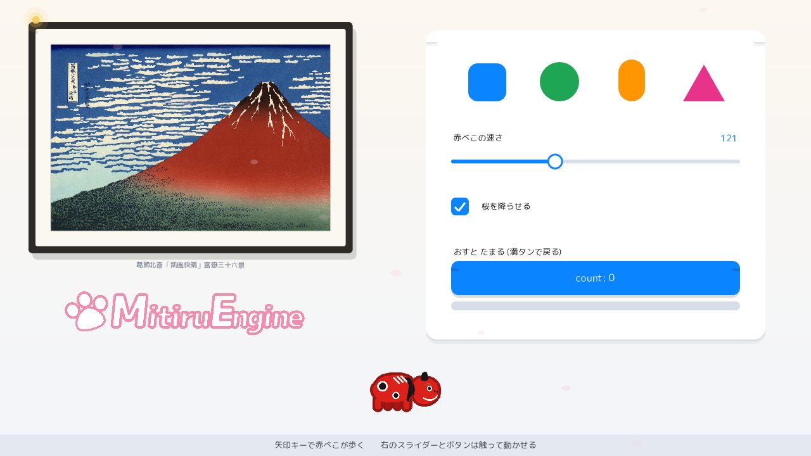
examples/welcome）。画像・文字・図形・UI・動きを 1 画面に。額装した浮世絵（北斎「凱風快晴」）とロゴ、右の白いカードに触って試せる図形・スライダー・チェックボックス・ボタンを並べた 1 画面です。手前の赤べこは矢印キーで歩き（速さは右のスライダーに連動）、マウスには蛍がついてきて、UI 以外をクリックすると波紋が広がります。draw の中で部品を順に重ねて 1 画面を組み立てます。
使う道具: drawSprite / drawRoundedRect / drawTextInRect / in.move / in.mouseDown / Timer::every
examples/welcome/welcome_dll.cpp。全 489 行。mitiru new で作るプロジェクトの src/main.cpp をこれ 1 つに置き換えれば、そのまま mitiru run で動きます。GitHub ↗
// welcome。MitiruEngine の第一章。1 画面で「画像・文字・図形・UI 操作・動き」をまとめて見せる歓迎デモ。 // 実行すると、左に額装した赤富士 (画像) とブランドロゴ、右に触って試せる小さな機能見本 (図形の並び・ // ドラッグできるスライダー・押せるボタン) をすっきりと並べる。手前の赤べこは矢印キーで歩き、 // マウスには蛍がついてきて、ボタン / スライダー以外をクリックすると波紋が広がる。 // 使う機能は Texture::fromFile / drawSprite (画像) / drawGradientRect (背景) / drawRoundedRect・ // fillCircle・drawTriangle (図形) / drawTextInRect (文字) / in.move() (矢印) / // in.mouseX/Y・mouseDown (マウスでの UI 操作)。 #include <mitiru.hpp> #include <mitiru/module/AutoReflect.hpp> #include <mitiru/render/Texture.hpp> // 画像 (Texture) を読み込んで drawSprite で描くため #include <algorithm> // std::min — 蛍がマウスへ寄る割合の頭打ち #include <cmath> // std::sin / std::fmod — ゆれ・舞い散りに使う #include <cstdio> // std::snprintf — スライダーの値・ボタンの回数を文字にするため #include <type_traits> // Canvas 経路のみ registerTexture する if constexpr のため #include "../common/chapter_hud.hpp" // 共通パレット theme::k... (白系テーマの色) を使う using namespace mitiru; constexpr float kScreenW = 1280.0f; // 画面は常に 1280x720 constexpr float kScreenH = 720.0f; // 画像 (Texture) は内部に可変長のピクセルを持つため、ゲームの状態 struct には入れられない // (状態は「まるごとコピーできる単純な値」だけに保つ決まりのため)。そこで、画像はこのファイル直下の // 変数に開始時に一度だけ読み込む。読み込みに失敗しても value_or によって「空の画像」になるだけで異常終了しない。 static const render::Texture kFuji = render::Texture::fromFile("welcome/assets/images/fuji.png").value_or(render::Texture{}); // ブランドロゴ (i の点が満ちゆく月のワードマーク)。左ゾーンの下に置き、タイトルの代わりにする。 static const render::Texture kLogo = render::Texture::fromFile("welcome/assets/images/logo.png").value_or(render::Texture{}); // 手前で歩かせる赤べこ (会津の張り子牛)。4 コマの歩行アニメ。 static const render::Texture kBeko[4] = { render::Texture::fromFile("welcome/assets/sprites/akabeko_0.png").value_or(render::Texture{}), render::Texture::fromFile("welcome/assets/sprites/akabeko_1.png").value_or(render::Texture{}), render::Texture::fromFile("welcome/assets/sprites/akabeko_2.png").value_or(render::Texture{}), render::Texture::fromFile("welcome/assets/sprites/akabeko_3.png").value_or(render::Texture{}), }; // ── 見た目の寸法 ─────────────────────────────────────────────────────────── constexpr float kArtScale = 0.46f; // 赤富士の表示倍率 (高解像度を 1 未満で縮小 = くっきり) constexpr float kMatte = 24.0f; // 絵のまわりの余白 (生成りのマット) constexpr float kFrameBand = 11.0f; // その外側の額縁 (焦茶) の太さ constexpr float kArtX = 80.0f; // 額の中の絵の左上 X (額縁はこれより 35px 外へ広がる) constexpr float kArtY = 70.0f; // 額の中の絵の左上 Y constexpr float kLogoW = 420.0f; // ロゴの表示幅 (高さは元画像の比から決める) constexpr float kBekoScale = 0.42f; // 赤べこの表示倍率 constexpr int kPetals = 10; // 舞う桜の花びらの数 (控えめに) // 右ゾーンの「触って試す」カード // 図形の並び → スライダー → チェックボックス → [ボタン＋ゲージの組] を白いカードに // 載せる。各組は同じ左右のガイド (kColL〜kColR) にそろえ、組の間には均等な余白を設ける。 // ボタンとゲージだけは 1 組に見えるよう、間を狭くする。カードの高さは左の額装赤富士の列と釣り合うようにする。 constexpr float kCardX = 672.0f, kCardY = 48.0f, kCardW = 536.0f, kCardH = 488.0f; constexpr float kCardR = 18.0f; // カードの角丸 constexpr float kCardPad = 40.0f; // カード内の左右の余白 constexpr float kColL = kCardX + kCardPad; // 全組共通の左ガイド (= 712) constexpr float kColR = kCardX + kCardW - kCardPad; // 共通の右ガイド (= 1168) constexpr float kColW = kColR - kColL; // 段の横幅 (= 456) // 1 段目は基本図形 4 つ。列幅を 4 等分した各セルの中心に、下端をそろえて置く。 constexpr float kShapeBottom = 160.0f; // 4 図形の共通の下端 constexpr float kShapeCx[4] = { // 各セルの中心 X (等間隔) kColL + kColW * 0.125f, kColL + kColW * 0.375f, kColL + kColW * 0.625f, kColL + kColW * 0.875f}; // 2 段目はスライダー。1 行目にラベル (左) と値 (右) を置き、その下に列いっぱいの溝を配置する。 constexpr float kSliderRowY = 206.0f; // ラベル/値の行の上端 constexpr float kTrackY = 255.0f; // 溝の中心 Y constexpr float kTrackLeft = kColL; // 溝は列いっぱい constexpr float kTrackLen = kColW; // 3 段目はチェックボックス「桜を降らせる」。左に四角、右にラベルを置く。桜の描画を on/off する。 constexpr float kCheckX = kColL; // チェック四角の左上 X (= kColL) constexpr float kCheckY = 312.0f; // チェック四角の左上 Y constexpr float kCheckSize = 28.0f; // 四角の一辺 // 4 段目はボタンとゲージの組。見出し → ボタン → ゲージの間を狭くして 1 組に見せる。 constexpr float kSetLabelY = 386.0f; // 組の見出しの行の上端 constexpr float kBtnX = kColL, kBtnW = kColW; constexpr float kBtnY = 412.0f, kBtnH = 54.0f; // ボタン (見出しのすぐ下) constexpr float kGaugeY = 483.0f; // ゲージ(溝)の中心 Y (ボタンのすぐ下) // 落ち着いた和の配色 (theme にない色はここで名前を付ける)。 constexpr Color kBgTop = hex(0xFCF7EF); // 背景グラデの上 (ほんのり暖かい生成り) constexpr Color kBgBottom = hex(0xF2F5FA); // 背景グラデの下 (涼しい紙白) constexpr Color kFrameWood = hex(0x2E2A27); // 額縁 (焦茶) constexpr Color kMatteCream = hex(0xFBF8F1); // マットの白 (生成り) constexpr Color kBevel = hex(0xD8CFBE); // 絵ぎわの細い見切り線 constexpr Color kPanelFill = hex(0xFFFFFF); // 右パネルの下地 (白) constexpr Color kVermilion = hex(0xC8352B); // 朱 (波紋の色) constexpr Color kBluePress = hex(0x0060D8); // ボタンを押した瞬間の濃い青 constexpr Color kSakura = hex(0xF3C4D4); // 桜の花びら (淡い桃) constexpr Color kFirefly = hex(0xF6CC5A); // マウスを追う蛍 (やわらかい金) constexpr Color kGaugeDrain = hex(0xF6C98A); // ゲージが満タンから減っている最中の淡い橙 (リセット中) constexpr Color kDropShadow = rgba(20, 20, 24, 40); // うすい落ち影 constexpr float kRippleLife = 0.9f; // クリックの波紋が消えるまでの秒数 struct Welcome00 { // 状態はすべて単純な値 (まるごとコピーできる) にする。ポインタや可変長の配列は持たない。 float t = 0.0f; float bekoX = 640.0f, bekoY = 612.0f; // 赤べこの中心 bool faceLeft = false; // 進む向き (左を向いているか) std::uint8_t _pad[3] = {}; // 暗黙の詰め物を残さない (状態をバイト単位で比べるため) Timer walk; // 歩行アニメ用タイマー int step = 0; // 今の歩行コマ (0〜3) float fx = kScreenW * 0.5f, fy = kScreenH * 0.5f; // マウスを追う蛍の位置 (少し遅れて寄る) struct Ripple { float x = 0.0f, y = 0.0f, age = 9.0f; }; // age が kRippleLife 以上 = 消えている Ripple ripples[5] = {}; // クリックで出す波紋 (5 枠を使い回す) bool prevClick = false; // 前フレームの左ボタン (押した瞬間だけ反応するため) std::uint8_t _pad2[3] = {}; float sliderT = 0.36f; // スライダーの位置 (0=左端, 1=右端)。値 speed=120 あたりから始める int count = 0; // ボタンを押した回数 ("count: N" 表示用) bool btnDown = false; // 今マウスがボタンを押しているか (見た目を少しへこませる用) bool petalsOn = true; // チェックボックスの状態 (on = 桜を降らせる) std::uint8_t _pad3[2] = {}; float gauge = 0.0f; // ゲージの溜まり具合 (0=空, 1=満タン) bool draining = false; // 満タン後、0 へ減っている最中か (この間は溜められない) std::uint8_t _pad4[3] = {}; float holdT = 0.0f; // 満タンを見せる短い静止の経過秒 static float clampf(float v, float lo, float hi) { return v < lo ? lo : (v > hi ? hi : v); } // マウスがボタンの矩形内にあるか。 static bool inButton(float x, float y) { return x >= kBtnX && x <= kBtnX + kBtnW && y >= kBtnY && y <= kBtnY + kBtnH; } // マウスがスライダーの「つかめる範囲」にあるか (溝の少し外まで含めてハンドルをつかみやすくする)。 static bool inSliderGrab(float x, float y) { return x >= kTrackLeft - 16.0f && x <= kTrackLeft + kTrackLen + 16.0f && y >= kTrackY - 18.0f && y <= kTrackY + 18.0f; } // マウスがチェックボックスの上にあるか (四角とラベルの行全体を押せる範囲にする)。 static bool inCheckbox(float x, float y) { return x >= kCheckX - 4.0f && x <= kCheckX + kCheckSize + 180.0f && y >= kCheckY - 6.0f && y <= kCheckY + kCheckSize + 6.0f; } void update(Input in, float dt) { t += dt; // ── 矢印キー・WASD・パッドで赤べこを歩かせる ── const Stick m = in.move(); // 全デバイスの入力を 1 つのベクトルにまとめてくれる const float bekoSpeed = 20.0f + sliderT * 280.0f; // 歩く速さは右のスライダーで決まる (連動) bekoX += m.x * bekoSpeed * dt; bekoY += m.y * bekoSpeed * dt; if (m.x < -0.1f) { faceLeft = true; } // 左へ動いたら左向き else if (m.x > 0.1f) { faceLeft = false; } // 右へ動いたら右向き bekoX = clampf(bekoX, 90.0f, kScreenW - 90.0f); bekoY = clampf(bekoY, 588.0f, 636.0f); // 手前の帯の中だけ歩く (パネルや額と重ならない) const bool moving = (m.x * m.x + m.y * m.y) > 0.01f; if (moving) { if (walk.every(0.13f, dt)) { step = (step + 1) % 4; } } else { step = 0; } // ── マウスの位置と左ボタン ── const float mx = in.mouseX(), my = in.mouseY(); const bool down = in.mouseDown(0); const bool clickEdge = down && !prevClick; // 押した瞬間だけ true (押しっぱなしでは反応しない) const bool onSlider = inSliderGrab(mx, my); const bool onButton = inButton(mx, my); const bool onCheckbox = inCheckbox(mx, my); // マウスを追う蛍。少し遅れてカーソルへ近づくため、「ついてくる」ように見える。 const float k = std::min(1.0f, dt * 6.5f); fx += (mx - fx) * k; fy += (my - fy) * k; // スライダーでは、ハンドルをつかんでいる間、マウスの X に合わせて位置 (0〜1) を更新する。 if (down && onSlider) { sliderT = clampf((mx - kTrackLeft) / kTrackLen, 0.0f, 1.0f); } // ボタンを押した瞬間に回数を数え、ゲージを 0.1 ためる。押している間は、見た目をへこませる。 btnDown = down && onButton; if (clickEdge && onButton) { count++; // "count: N" 表示はいつも増える if (!draining) // 減っている最中は溜まらない { gauge += 0.1f; if (gauge >= 1.0f) { gauge = 1.0f; draining = true; holdT = 0.0f; } // 満タン → 静止して減り始める } } // ゲージが満タンになったら少し表示してから、毎フレーム滑らかに 0 まで減らす。 if (draining) { holdT += dt; // まず 0.4 秒 満タンのまま見せる if (holdT >= 0.4f) { gauge -= dt * 0.5f; // そのあとゆっくり空へ (満タンから約 2 秒) if (gauge <= 0.0f) { gauge = 0.0f; draining = false; } } } // チェックボックスを押した瞬間に on/off を切り替える (桜を降らせるかどうか)。 if (clickEdge && onCheckbox) { petalsOn = !petalsOn; } // クリックした瞬間に、その場所へ波紋を 1 つ表示する。ただし、ボタン / スライダー / チェックの上では // 表示しない (UI 操作と波紋を重ねない。触った場所が二重に反応すると分かりにくいため)。 if (clickEdge && !onButton && !onSlider && !onCheckbox) { int slot = 0; // 一番古い (age 最大の) 枠を使い回す for (int i = 1; i < 5; ++i) { if (ripples[i].age > ripples[slot].age) { slot = i; } } ripples[slot] = Ripple{mx, my, 0.0f}; } prevClick = down; for (Ripple& r : ripples) { if (r.age < kRippleLife) { r.age += dt; } } } // ── 描画部品 ─────────────────────────────────────────────────────────── // 赤べこ 1 匹を、中心 (cx,cy)・大きさ scale・向き flip を指定して描く。 template <class Surface> static void beko(Surface& s, int frame, float cx, float cy, float scale, bool flip) { const render::Texture& tex = kBeko[frame]; const float w = static_cast<float>(tex.width()) * scale; const float h = static_cast<float>(tex.height()) * scale; const Rect dst{cx - w * 0.5f, cy - h * 0.5f, w, h}; const Rect src{0.0f, 0.0f, static_cast<float>(tex.width()), static_cast<float>(tex.height())}; s.drawSprite(tex, dst, src, color::White, flip); } // ゆっくり舞い落ちる控えめな桜。位置は経過秒 t と番号 i だけから決まる (状態を持たない)。 // 落ちながら左右に揺れ、少しずつ回る。画面下に消えたら上へ戻り、繰り返す。 template <class Surface> void petals(Surface& s) const { for (int i = 0; i < kPetals; ++i) { const float fi = static_cast<float>(i); const float fall = 26.0f + static_cast<float>((i * 13) % 20); // 落ちる速さ (番号でばらす) const float sway = 12.0f + static_cast<float>((i * 7) % 14); // 左右ゆれの幅 const float baseX = 50.0f + (kScreenW - 100.0f) * fi / kPetals; const float x = baseX + std::sin(t * (0.5f + fi * 0.11f) + fi) * sway; const float y = std::fmod(fi * 90.0f + t * fall, kScreenH + 60.0f) - 30.0f; const float rx = 6.0f + static_cast<float>(i % 3) * 1.5f; // 花びらの大きさ const float alpha = 0.16f + static_cast<float>(i % 4) * 0.04f; // 控えめに (手前ほど少し濃く) s.pushRotation(deg(fi * 41.0f + t * 40.0f), x, y); // ひらひら回りながら s.drawEllipse(Vec2{x, y}, rx, rx * 0.58f, kSakura.withAlpha(alpha)); s.popTransform(); } } // 額に入れた絵を、絵の左上を (x,y) として描く。落ち影 → 額縁 → マット → 絵 → 見切り線の順に重ねる。 template <class Surface> void framedArt(Surface& s, float x, float y, float artW, float artH) const { const float ox = x - kMatte - kFrameBand, oy = y - kMatte - kFrameBand; const float ow = artW + 2.0f * (kMatte + kFrameBand), oh = artH + 2.0f * (kMatte + kFrameBand); s.drawRoundedRect(Rect{ox + 6.0f, oy + 10.0f, ow, oh}, kDropShadow, 8.0f); // 落ち影 s.drawRoundedRect(Rect{ox, oy, ow, oh}, kFrameWood, 6.0f); // 額縁 (焦茶) s.drawRoundedRect(Rect{ox + kFrameBand, oy + kFrameBand, // マット (生成り) ow - 2.0f * kFrameBand, oh - 2.0f * kFrameBand}, kMatteCream, 3.0f); const Rect dst{x, y, artW, artH}; const Rect src{0.0f, 0.0f, static_cast<float>(kFuji.width()), static_cast<float>(kFuji.height())}; s.drawSprite(kFuji, dst, src); // 浮世絵そのもの s.drawRectFrame(dst, kBevel, 1.0f); // 絵ぎわの見切り線 } // 上段には基本図形 4 つを、列を 4 等分した各セルの中心に、下端 kShapeBottom をそろえて並べる。 // 角丸四角 (青)・円 (緑)・縦長カプセル (橙)・三角形 (桃)。大きさをそろえて上品に見せる。 template <class Surface> void shapesRow(Surface& s) const { const float b = kShapeBottom; // 角丸四角 (青)。60x60。 s.drawRoundedRect(Rect{kShapeCx[0] - 30.0f, b - 60.0f, 60.0f, 60.0f}, theme::kBlue, 15.0f); // 円 (緑)。直径 62。下端がそろうよう、中心を b-31 に置く。 s.fillCircle(kShapeCx[1], b - 31.0f, 31.0f, theme::kGreen); // 縦長カプセル (橙)。幅 42・高さ 66。角丸を幅の半分にして、丸い縦棒にする。 s.drawRoundedRect(Rect{kShapeCx[2] - 21.0f, b - 66.0f, 42.0f, 66.0f}, theme::kOrange, 21.0f); // 三角形 (桃)。頂点を上に、底辺を下端にそろえる。3 点を drawTriangle に渡す。 const Vec2 apex {kShapeCx[3], b - 58.0f}; const Vec2 left {kShapeCx[3] - 33.0f, b}; const Vec2 right{kShapeCx[3] + 33.0f, b}; s.drawTriangle(apex, left, right, theme::kPink); } // 右ゾーンの下地カード。影は横にずらさず、真下だけに置き、カードと同じ幅・同じ角丸にする。 // 斜めにずらすと、角丸の隅から影が三日月形にはみ出して見える。真下だけなら、影の角がカードの角の // 真下にぴったり重なり、下辺の薄い帯としてだけ見え、 // 横や上の角には決してはみ出さない。2 枚重ね、下側ほど濃くぼかす。 template <class Surface> void panelCard(Surface& s) const { const Rect body{kCardX, kCardY, kCardW, kCardH}; // 落ち影は横にずらさず、真下だけにカードと同じ幅・角丸で 2 枚重ねる。影の角が // カードの角の真下にぴったり重なるため、下辺の薄い帯としてだけ見え、横や上の角には // はみ出さない。細い帯を内側に置く前案では角丸の端が浮いて見えたため、この方法に直す。 s.drawRoundedRect(Rect{kCardX, kCardY + 7.0f, kCardW, kCardH}, rgba(28, 32, 44, 12), kCardR); s.drawRoundedRect(Rect{kCardX, kCardY + 3.0f, kCardW, kCardH}, rgba(28, 32, 44, 18), kCardR); // カード本体 (白)。枠線は付けない。下辺の帯状の影だけで背景から離れて見えるようにする。 s.drawRoundedRect(body, kPanelFill, kCardR); } // カード内の説明ラベルは、すべてこの書式でそろえる (読みやすい濃色 kInk・18px・左そろえ)。 // スライダーの数値「121」などは機能上の値なので、これとは別扱い。 template <class Surface> static void cardLabel(Surface& s, const Rect& r, const char* text) { s.drawTextInRect(r, text, theme::kInk, 18.0f, Surface::TextAlignH::Left, Surface::TextAlignV::Middle); } // 2 段目はスライダー。1 行目の左にラベル、右に現在の値を置き、その下に列いっぱいの溝とハンドルを配置する。 template <class Surface> void slider(Surface& s) const { // ラベル (左)。このスライダーが赤べこの歩く速さを決めることを示す。 cardLabel(s, Rect{kColL, kSliderRowY, kColW * 0.6f, 24.0f}, "赤べこの速さ"); // 値 (右)。溝の位置を 20〜300 の数に換算して、行の右端にそろえる。 const int speed = static_cast<int>(20.0f + sliderT * 280.0f + 0.5f); char buf[16]; std::snprintf(buf, sizeof(buf), "%d", speed); s.drawTextInRect(Rect{kColL + kColW * 0.55f, kSliderRowY, kColW * 0.45f, 24.0f}, buf, theme::kBlue, 20.0f, Surface::TextAlignH::Right, Surface::TextAlignV::Middle); // 溝 (灰) と、左端からハンドルまでの塗り (青)。列いっぱいに配置する。 s.drawRoundedRect(Rect{kTrackLeft, kTrackY - 3.0f, kTrackLen, 6.0f}, theme::kFrame, 3.0f); s.drawRoundedRect(Rect{kTrackLeft, kTrackY - 3.0f, sliderT * kTrackLen, 6.0f}, theme::kBlue, 3.0f); // ハンドル (白い丸に青い縁)。sliderT の位置に置く。 const float hx = kTrackLeft + sliderT * kTrackLen; s.fillCircle(hx, kTrackY + 2.0f, 11.0f, kDropShadow); // 落ち影 s.fillCircle(hx, kTrackY, 11.0f, color::White); // 白い玉 s.drawCircleFrame(Vec2{hx, kTrackY}, 11.0f, theme::kBlue, 3.0f); } // 下段は、押すたびに回数が増える角丸ボタン。列いっぱいの幅にする。押している間は 2px 下げて反応を伝える。 template <class Surface> void button(Surface& s) const { const float dy = btnDown ? 2.0f : 0.0f; // 押している間だけ少し下げる const Rect face{kBtnX, kBtnY + dy, kBtnW, kBtnH}; // 落ち影はカードと同じ方法で、横にずらさず、真下だけに同じ幅・角丸で置く。角から影がはみ出して見えない。 s.drawRoundedRect(Rect{kBtnX, kBtnY + 4.0f, kBtnW, kBtnH}, kDropShadow, 12.0f); s.drawRoundedRect(face, btnDown ? kBluePress : theme::kBlue, 12.0f); // ボタン面 char buf[24]; std::snprintf(buf, sizeof(buf), "count: %d", count); s.drawTextInRect(face, buf, color::White, 22.0f, Surface::TextAlignH::Center, Surface::TextAlignV::Middle); } // 4 段目はチェックボックス「桜を降らせる」。四角をクリックして on/off を切り替える。 // on = 青く塗って白いレ点、off = 灰色の枠だけの空箱。状態は petalsOn が持ち、draw() が桜を切り替える。 // 3 段目。 template <class Surface> void checkbox(Surface& s) const { const Rect box{kCheckX, kCheckY, kCheckSize, kCheckSize}; if (petalsOn) { s.drawRoundedRect(box, theme::kBlue, 7.0f); // 塗り (青) // 白いレ点。左中 → 底の角 → 右上を結ぶ 2 本の線で描く。 s.drawLine(Vec2{kCheckX + 6.0f, kCheckY + 15.0f}, Vec2{kCheckX + 12.0f, kCheckY + 21.0f}, color::White, 3.0f); s.drawLine(Vec2{kCheckX + 12.0f, kCheckY + 21.0f}, Vec2{kCheckX + 22.0f, kCheckY + 8.0f}, color::White, 3.0f); } else { s.drawRoundedRect(box, color::White, 7.0f); // 白い空箱 s.drawRoundedRectFrame(box, theme::kFrame, 7.0f, 2.0f); } // 右にラベルを置く。四角の縦中心に文字をそろえる (他のラベルと同じ書式)。 cardLabel(s, Rect{kCheckX + kCheckSize + 16.0f, kCheckY, kColW - kCheckSize - 16.0f, kCheckSize}, "桜を降らせる"); } // 4 段目 (ボタンと 1 組) は、ゲージ「おすと たまる」。ボタンを押すたびに 0.1 たまり、満タンになると 0 へ戻る。 // 見出しはボタンの真上に置き、ボタン → ゲージが 1 組だと分かるようにする。溝と塗りで表し、 // 満タンから減っている間は塗りを淡い橙にして「今リセット中」であることを伝える。 template <class Surface> void gaugeBar(Surface& s) const { // 組の見出し (ボタンの真上、他のラベルと同じ書式)。 cardLabel(s, Rect{kColL, kSetLabelY, kColW, 24.0f}, "おすと たまる (満タンで戻る)"); // 溝 (灰) と、たまった分の塗り。列いっぱいの横メーター。gauge (0〜1) を幅に換算する。 const float h = 14.0f; s.drawRoundedRect(Rect{kColL, kGaugeY - h * 0.5f, kColW, h}, theme::kFrame, 7.0f); const float fill = gauge * kColW; if (fill > 0.0f) { // たまる間と満タンで停止している間は明るい橙 (満タンを示す) にし、実際に減り始めたら淡い橙にする。 const Color fillColor = (draining && holdT >= 0.4f) ? kGaugeDrain : theme::kOrange; s.drawRoundedRect(Rect{kColL, kGaugeY - h * 0.5f, fill, h}, fillColor, 7.0f); } } template <class Surface> void drawImpl(Surface& s) const { // Canvas は境界をまたぐため、Texture のアドレスではなく id で描画する必要がある // (未登録の場合、drawSprite が DLL 内のアドレスをそのまま登録してしまう)。kFuji/kLogo は // SpriteCache の規約 (assets/sprites/) 外にある assets/images/ 配下にあり、id 化できない // ため対象外のままにする (アドレスを直接渡す Sprite に戻る。ADR 0025 の既存 TODO)。 if constexpr (std::is_same_v<Surface, mitiru::Canvas>) { s.registerTexture(kBeko[0], "akabeko_0"); s.registerTexture(kBeko[1], "akabeko_1"); s.registerTexture(kBeko[2], "akabeko_2"); s.registerTexture(kBeko[3], "akabeko_3"); } // 背景は上 → 下の緩やかなグラデーション (暖かい生成り → 涼しい紙白)。奥行きを出す控えめな下地。 s.drawGradientRect(Rect{0.0f, 0.0f, kScreenW, kScreenH}, kBgTop, kBgBottom); if (petalsOn) { petals(s); } // チェックが on の時だけ桜が舞う (主役の絵や部品より奥に敷く) // 左ゾーンは、額装した赤富士 → キャプション → ロゴの順に縦に配置する。 const float artW = static_cast<float>(kFuji.width()) * kArtScale; const float artH = static_cast<float>(kFuji.height()) * kArtScale; framedArt(s, kArtX, kArtY, artW, artH); // 絵の下に小さなキャプション (美術館の解説札のように作者と外題を添える)。 const float capY = kArtY + artH + kMatte + kFrameBand + 8.0f; s.drawTextInRect(Rect{kArtX - kMatte, capY, artW + 2.0f * kMatte, 22.0f}, "葛飾北斎「凱風快晴」富嶽三十六景", theme::kSubtle, 15.0f, Surface::TextAlignH::Center, Surface::TextAlignV::Middle); // キャプションの下にブランドロゴ (透過画像を縮小) を、絵の中心にそろえて置く。 const float logoH = kLogoW * static_cast<float>(kLogo.height()) / static_cast<float>(kLogo.width()); const float logoX = kArtX + artW * 0.5f - kLogoW * 0.5f; const float logoY = capY + 22.0f + 22.0f; s.drawSprite(kLogo, Rect{logoX, logoY, kLogoW, logoH}, Rect{0.0f, 0.0f, static_cast<float>(kLogo.width()), static_cast<float>(kLogo.height())}); // 右ゾーンは、触って試す機能見本。白いカードの上に、図形の並び → スライダー → // チェックボックス → [ボタン＋ゲージの組] を同じ左右のガイドにそろえて載せる。 // button(s) と gauge(s) を上下に隣り合わせ、1 組にする。 panelCard(s); shapesRow(s); slider(s); checkbox(s); button(s); gaugeBar(s); // 手前には、矢印キーで歩く赤べこを表示する。進む向きに合わせて反転し、短い脚が交互に動く。 beko(s, step, bekoX, bekoY, kBekoScale, faceLeft); // 触れるデモ。クリックすると波紋が広がる。蛍と同じ金色の輪が、押した場所からゆっくり広がって薄くなる。 for (const Ripple& r : ripples) { if (r.age >= kRippleLife) { continue; } const float fade = 1.0f - r.age / kRippleLife; s.drawCircleFrame(Vec2{r.x, r.y}, 8.0f + r.age * 110.0f, kFirefly.withAlpha(fade * 0.5f), 2.0f); } // 触れるデモ。マウスを追う蛍。柔らかい金色の光が、少し遅れてカーソルについてくる。 s.fillCircle(fx, fy, 20.0f, kFirefly.withAlpha(0.10f)); s.fillCircle(fx, fy, 12.0f, kFirefly.withAlpha(0.24f)); s.fillCircle(fx, fy, 6.0f, kFirefly.withAlpha(0.90f)); // 操作案内を手前の帯に控えめに表示する。一目で分かる平易な言葉を使う。 const Rect band{0.0f, kScreenH - 34.0f, kScreenW, 34.0f}; s.drawRect(band, rgba(226, 231, 240, 225)); s.drawTextInRect(band, "矢印キーで赤べこが歩く 右のスライダーとボタンは触って動かせる", hex(0x3A4048), 18.0f, Surface::TextAlignH::Center, Surface::TextAlignV::Middle); } void draw(Screen& s) const { drawImpl(s); } void draw(Canvas& c) const { drawImpl(c); } }; // この 1 行がゲームの入口。実行役 mitiru_host.exe がこの struct を作り、毎フレーム draw() を呼ぶ。 // 実行: mitiru_host.exe welcome/welcome.dll // inspector に映す状態を自動反射する。aggregate 型なので列挙不要 (D12)。 MITIRU_REFLECT_AUTO(Welcome00); MITIRU_ASSERT_NO_PADDING(Welcome00); MITIRU_GAME(Welcome00);
図形
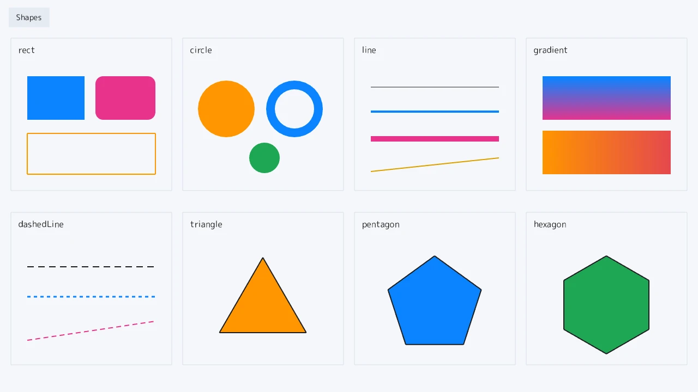
examples/shapes）。四角・円・線・グラデ・多角形。四角・円・線・グラデーション・破線・三角形・多角形（五角形／六角形）を、座標を渡すだけで描きます。多角形は頂点を円周上に並べて作り、drawPolygon にまとめて渡します。
使う道具: drawRect / drawRoundedRect / fillCircle / drawRing / drawGradientRect / dashedLine / drawTriangle / drawPolygon
examples/shapes/shapes_dll.cpp。全 125 行。mitiru new で作るプロジェクトの src/main.cpp をこれ 1 つに置き換えれば、そのまま mitiru run で動きます。GitHub ↗
// shapes。図形描画のカタログで、基本の図形を 4 列 x 2 段のマスに並べて見せる // 実行すると、紙白の画面に rect / circle / line / gradient / 破線 / 三角形 / 多角形 (五角形・六角形) が並ぶ // 関連 API は drawRect / fillCircle / line / drawGradientRect / dashedLine / drawTriangle / drawPolygon #include <cmath> // std::cos / std::sin (多角形の頂点を円周上に置くのに使う) #include <cstddef> // std::size_t #include <vector> // drawPolygon に渡す頂点の配列 #include <mitiru.hpp> #include <mitiru/module/AutoReflect.hpp> #include "../common/chapter_hud.hpp" // 章の名前ラベルと共通パレット (theme::k... の色) using namespace mitiru; // 見本を 4 列 x 2 段のマスに並べる。マスの左上は (kCol[列], kRow[段])。 constexpr float kCol[4] = {20.0f, 335.0f, 650.0f, 965.0f}; constexpr float kRow[2] = {70.0f, 390.0f}; constexpr float kCellW = 295.0f; // マスの幅 constexpr float kCellH = 280.0f; // マスの高さ struct Shapes02 { // 見本 1 マスぶんの枠と見出しを描く。見出しは大きめ (22px) の濃い色で、はっきり読みやすくする。 // Screen/Canvas の両方に対応するため (ADR 0025)、Surface でテンプレート化する。 template <class Surface> void cell(Surface& s, float x, float y, const char* name) const { s.drawRectFrame(Rect{x, y, kCellW, kCellH}, theme::kFrame, 1.0f); s.text(name, x + 14.0f, y + 10.0f, theme::kInk, 22.0f); } // 中心 (cx,cy)・半径 r・頂点数 n の正多角形の頂点を、真上を頂点として順に作る。 // deg() は度をラジアンに直す。画面では y が下向きなので、-90 度から始めると頂点が上を向く。 std::vector<Vec2> regularPolygon(float cx, float cy, float r, int n) const { std::vector<Vec2> pts; pts.reserve(static_cast<std::size_t>(n)); for (int k = 0; k < n; ++k) { const float a = deg(-90.0f + 360.0f / static_cast<float>(n) * static_cast<float>(k)); pts.push_back(Vec2{cx + r * std::cos(a), cy + r * std::sin(a)}); } return pts; } // 頂点を順に線で結び、多角形の枠 (ふち) を描く。 template <class Surface> void outline(Surface& s, const std::vector<Vec2>& pts, const Color& c, float w) const { for (std::size_t i = 0; i < pts.size(); ++i) { s.drawLine(pts[i], pts[(i + 1) % pts.size()], c, w); } } template <class Surface> void drawImpl(Surface& s) const { s.fillScreen(theme::kPaper); chapterTitle(s, "Shapes"); // ── 上段: 四角・円・線・グラデーション ── float x = kCol[0], y = kRow[0]; cell(s, x, y, "rect"); s.drawRect(x + 30.0f, y + 70.0f, 105.0f, 80.0f, theme::kBlue); // 塗り s.drawRoundedRect(Rect{x + 155.0f, y + 70.0f, 110.0f, 80.0f}, theme::kPink, 14.0f); // 角丸 s.drawRectFrame(Rect{x + 30.0f, y + 175.0f, 235.0f, 75.0f}, theme::kOrange, 2.0f); // 枠線 x = kCol[1]; cell(s, x, y, "circle"); s.fillCircle(x + 80.0f, y + 130.0f, 52.0f, theme::kOrange); // 塗り s.drawRing(Vec2{x + 205.0f, y + 130.0f}, 52.0f, 36.0f, theme::kBlue); // リング s.fillCircle(x + 150.0f, y + 220.0f, 28.0f, theme::kGreen); x = kCol[2]; cell(s, x, y, "line"); s.line(x + 30.0f, y + 90.0f, x + 265.0f, y + 90.0f, theme::kInk, 1.0f); // 太さ 1 s.line(x + 30.0f, y + 135.0f, x + 265.0f, y + 135.0f, theme::kBlue, 4.0f); // 太さ 4 s.line(x + 30.0f, y + 185.0f, x + 265.0f, y + 185.0f, theme::kPink, 10.0f); // 太さ 10 s.line(x + 30.0f, y + 245.0f, x + 265.0f, y + 220.0f, theme::kAmber, 2.0f); // 斜め x = kCol[3]; cell(s, x, y, "gradient"); s.drawGradientRect(Rect{x + 30.0f, y + 70.0f, 235.0f, 80.0f}, theme::kBlue, theme::kPink); // 上→下 s.drawGradientRectH(Rect{x + 30.0f, y + 170.0f, 235.0f, 80.0f}, theme::kOrange, theme::kRed); // 左→右 // ── 下段: 破線・三角形・多角形 (五角形 / 六角形) ── x = kCol[0]; y = kRow[1]; cell(s, x, y, "dashedLine"); s.dashedLine(x + 30.0f, y + 100.0f, x + 265.0f, y + 100.0f, theme::kInk, 2.0f, 12.0f, 8.0f); s.dashedLine(x + 30.0f, y + 155.0f, x + 265.0f, y + 155.0f, theme::kBlue, 3.0f, 6.0f, 6.0f); s.dashedLine(x + 30.0f, y + 235.0f, x + 265.0f, y + 200.0f, theme::kPink, 2.0f, 9.0f, 6.0f); // 三角形は drawTriangle (頂点 3 つ) で塗る。仕上げにふちを線で描く。 x = kCol[1]; const auto tri = regularPolygon(x + 147.0f, y + 175.0f, 92.0f, 3); cell(s, x, y, "triangle"); s.drawTriangle(tri[0], tri[1], tri[2], theme::kOrange); outline(s, tri, theme::kInk, 2.0f); // 五角形・六角形は drawPolygon (頂点をまとめて渡す) で塗る。 x = kCol[2]; const auto penta = regularPolygon(x + 147.0f, y + 170.0f, 90.0f, 5); cell(s, x, y, "pentagon"); s.drawPolygon(penta, theme::kBlue); outline(s, penta, theme::kInk, 2.0f); x = kCol[3]; const auto hexa = regularPolygon(x + 147.0f, y + 170.0f, 90.0f, 6); cell(s, x, y, "hexagon"); s.drawPolygon(hexa, theme::kGreen); outline(s, hexa, theme::kInk, 2.0f); } void draw(Screen& s) const { drawImpl(s); } void draw(Canvas& c) const { drawImpl(c); } }; // 実行: mitiru_host.exe shapes/shapes.dll // inspector に映す状態を自動反射する。aggregate 型なので列挙不要 (D12)。 MITIRU_REFLECT_AUTO(Shapes02); MITIRU_ASSERT_NO_PADDING(Shapes02); MITIRU_GAME(Shapes02);
文字
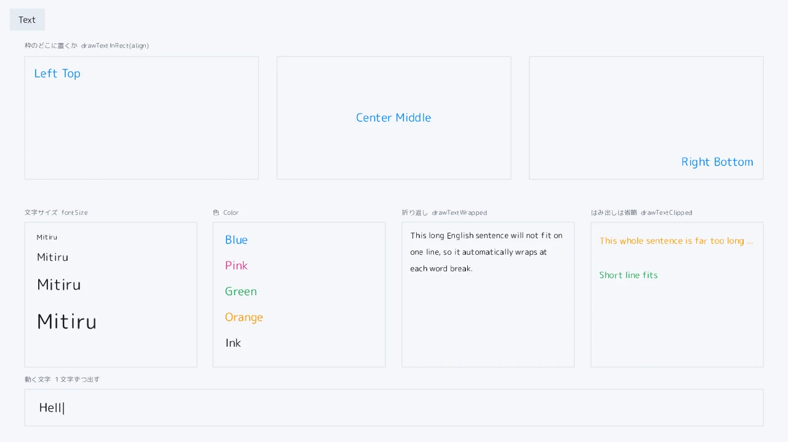
examples/text）。整列・折り返し・はみ出しの省略。枠のどこに文字を置くか（左上・中央・右下）の整列、文字サイズ・色、単語での折り返し、枠に収まらない行の末尾を「…」にするはみ出し省略を、区画ごとに見せます。文字が枠からあふれない書き方の見本です。
使う道具: drawTextInRect / drawTextWrapped / drawTextClipped / text
examples/text/text_dll.cpp。全 125 行。mitiru new で作るプロジェクトの src/main.cpp をこれ 1 つに置き換えれば、そのまま mitiru run で動きます。GitHub ↗
// text。文字を扱う主な機能を、余白を設けた区画に 1 つずつ示す // 実行すると: 上段に「枠のどこに文字を置くか」(整列) の大きな見本、 // 下段に文字サイズ / 色 / 折り返し / はみ出しの省略の見本が並ぶ // 使う機能: drawTextInRect (整列) / drawTextWrapped (折り返し) // / drawTextClipped (省略) / text (左上へ 1 行) #include <algorithm> // std::min #include <cmath> // std::fmod #include <string> // std::string (動く文字の substr) #include <mitiru.hpp> #include <mitiru/module/AutoReflect.hpp> #include "../common/chapter_hud.hpp" // 章ラベルと共通パレット (theme::k... の色) using namespace mitiru; struct Text03 { float t = 0.0f; // 経過秒 (動く文字デモに使う) void update(Input, float dt) { t += dt; } // 区画 1 つ分の小見出し (枠の上に薄グレー) と枠線を描く共通ヘルパー。 template <class Surface> void cell(Surface& s, const Rect& box, const char* caption) const { s.text(caption, box.x(), box.y() - 24.0f, theme::kSubtle, 15.0f); s.drawRectFrame(box, theme::kFrame, 1.0f); } template <class Surface> void drawImpl(Surface& s) const { s.fillScreen(theme::kPaper); chapterTitle(s, "Text"); // ── 上段: 枠の「どこ」に文字を置くか (整列) ────────────────── // 大きな枠を 3 つ並べ、整列名をその整列どおりの位置に置く。 // 文字が枠のどこに付くのかが、名前と位置の両方で一目で分かる。 constexpr float boxY = 92.0f, boxW = 380.0f, boxH = 200.0f; constexpr float boxX[3] = {40.0f, 450.0f, 860.0f}; const typename Surface::TextAlignH alignH[3] = { Surface::TextAlignH::Left, Surface::TextAlignH::Center, Surface::TextAlignH::Right}; const typename Surface::TextAlignV alignV[3] = { Surface::TextAlignV::Top, Surface::TextAlignV::Middle, Surface::TextAlignV::Bottom}; constexpr const char* alignName[3] = {"Left Top", "Center Middle", "Right Bottom"}; s.text("枠のどこに置くか drawTextInRect(align)", 40.0f, 66.0f, theme::kSubtle, 15.0f); for (int i = 0; i < 3; ++i) { const Rect box{boxX[i], boxY, boxW, boxH}; s.drawRectFrame(box, theme::kFrame, 1.0f); s.drawTextInRect(box, alignName[i], theme::kBlue, 26.0f, alignH[i], alignV[i], 16.0f, 14.0f); } // ── 下段: 文字そのものの見せ方 4 つ ───────────────────────── constexpr float cy = 362.0f, ch = 236.0f, cw = 280.0f; constexpr float fx[4] = {40.0f, 346.0f, 653.0f, 960.0f}; // (1) 文字サイズ: 同じ語を小さいものから大きいものへ。fontSize の数値を変えるだけ。 cell(s, Rect{fx[0], cy, cw, ch}, "文字サイズ fontSize"); constexpr float sizes[4] = {16.0f, 24.0f, 34.0f, 46.0f}; float ty = cy + 14.0f; for (float sz : sizes) { s.drawTextInRect(Rect{fx[0] + 16.0f, ty, cw - 24.0f, sz * 1.4f}, "Mitiru", theme::kInk, sz, Surface::TextAlignH::Left, Surface::TextAlignV::Top); ty += sz * 1.4f + 6.0f; // 次の行は今の文字の高さぶんだけ下げる } // (2) 色: 書き方は同じで、色 (第 3 引数) だけを変える。 cell(s, Rect{fx[1], cy, cw, ch}, "色 Color"); struct Sw { Color c; const char* name; }; const Sw sw[5] = {{theme::kBlue, "Blue"}, {theme::kPink, "Pink"}, {theme::kGreen, "Green"}, {theme::kOrange, "Orange"}, {theme::kInk, "Ink"}}; float coy = cy + 12.0f; for (const auto& e : sw) { s.drawTextInRect(Rect{fx[1] + 16.0f, coy, cw - 24.0f, 34.0f}, e.name, e.c, 26.0f, Surface::TextAlignH::Left, Surface::TextAlignV::Middle); coy += 42.0f; } // (3) 折り返し: 長い文が枠の幅で単語ごとに折り返る (スペース区切り)。 const Rect wrapBox{fx[2], cy, cw, ch}; cell(s, wrapBox, "折り返し drawTextWrapped"); s.drawTextWrapped(wrapBox, "This long English sentence will not fit on one line, " "so it automatically wraps at each word break.", theme::kInk, 18.0f, 14.0f, 12.0f); // (4) はみ出しの省略: 枠に収まらない行の末尾は自動的に "..." になる。 // 通常の drawText と違い、枠の外へあふれて他と重ならない。 const Rect clipBox{fx[3], cy, cw, ch}; cell(s, clipBox, "はみ出しは省略 drawTextClipped"); s.drawTextClipped(Rect{fx[3] + 14.0f, cy + 20.0f, cw - 28.0f, 30.0f}, "This whole sentence is far too long to fit inside the box", theme::kOrange, 20.0f); s.drawTextClipped(Rect{fx[3] + 14.0f, cy + 76.0f, cw - 28.0f, 30.0f}, "Short line fits", theme::kGreen, 20.0f); // ── 動く文字: 1 文字ずつ出す。text.substr(0, n) の n を時間で増やすだけ ── s.text("動く文字 1 文字ずつ出す", 40.0f, 610.0f, theme::kSubtle, 15.0f); const Rect animBox{40.0f, 634.0f, 1200.0f, 60.0f}; s.drawRectFrame(animBox, theme::kFrame, 1.0f); static const std::string msg = "Hello! I appear one letter at a time."; const int len = static_cast<int>(msg.size()); const float cycle = static_cast<float>(len) / 18.0f + 1.4f; // 打ち終えて少し待ち、最初へ戻る const float phase = std::fmod(t, cycle); const int n = std::min(len, static_cast<int>(phase * 18.0f)); // 1 秒に 18 文字 std::string shown = msg.substr(0, static_cast<std::size_t>(n)); if (std::fmod(t, 1.0f) < 0.5f) { shown += "|"; } // 点滅カーソル s.drawTextInRect(Rect{60.0f, animBox.y(), 1160.0f, animBox.height()}, shown.c_str(), theme::kInk, 28.0f, Surface::TextAlignH::Left, Surface::TextAlignV::Middle); } void draw(Screen& s) const { drawImpl(s); } void draw(Canvas& c) const { drawImpl(c); } }; // 実行: mitiru_host.exe text/text.dll // inspector に映す状態を自動反射する。aggregate 型なので列挙不要 (D12)。 MITIRU_REFLECT_AUTO(Text03); MITIRU_ASSERT_NO_PADDING(Text03); MITIRU_GAME(Text03);
入力
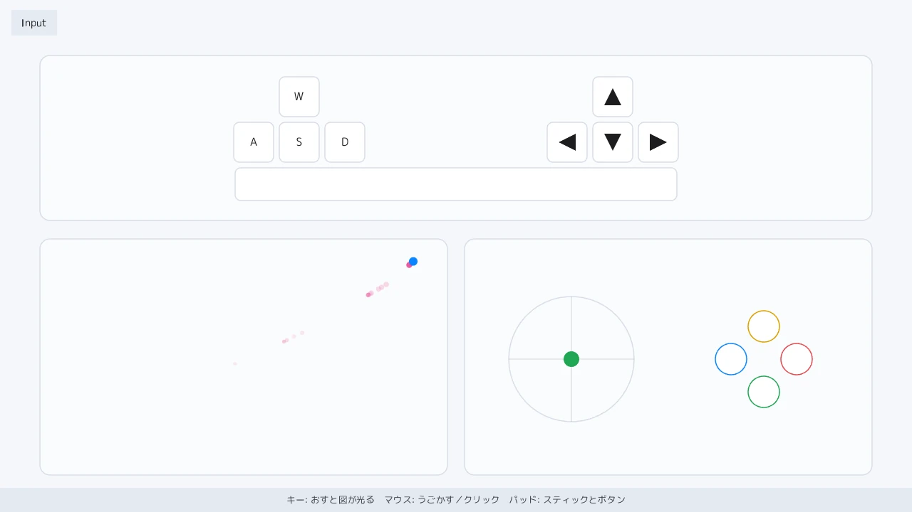
examples/input）。キーボード・マウス・パッドの「今」。画面を 3 つに分け、キーボード・マウス・パッドの「今」を光らせます。押されたキーだけ青く光り、マウスは動いた跡を点で引き、パッドはスティックの傾きとボタンの押下を示します。押す・動かすと視覚で分かります。
使う道具: in.down / in.mouseDown / in.padDown / in.leftStick / drawRoundedRect
examples/input/input_dll.cpp。全 164 行。mitiru new で作るプロジェクトの src/main.cpp をこれ 1 つに置き換えれば、そのまま mitiru run で動きます。GitHub ↗
// input。入力の「今」を見せる章。キーボード / マウス / パッドの状態を、画面を 3 つに分けて光らせる。 // // ゲームを動かす基盤 (host) が毎フレーム、キー・マウス・パッドの状態を 1 つにまとめて渡す。 // ゲーム側は、その渡された入力 (Input) を見るだけでよい。 #include <cstdint> #include <mitiru.hpp> #include "../common/chapter_hud.hpp" // 章ラベル (左上) と操作帯 (下端) の共通部品 using namespace mitiru; // 配色 constexpr Color kFaint = Color{0.11f, 0.11f, 0.12f, 0.16f}; // 目盛り線のごく薄い色 constexpr Color kKeyOff = hex(0xFFFFFF); // 押していないキーの面 (白) constexpr Color kPanel = Color{1.0f, 1.0f, 1.0f, 0.55f}; // 区画の下地 (淡い白カード) // 3 つの区画の位置と大きさ (x, y, 幅, 高さ) constexpr Rect kKbBox{56.0f, 78.0f, 1168.0f, 232.0f}; // 上: キーボード (画面幅いっぱい) constexpr Rect kMsBox{56.0f, 336.0f, 572.0f, 332.0f}; // 左下: マウス constexpr Rect kPdBox{652.0f, 336.0f, 572.0f, 332.0f}; // 右下: パッド constexpr Vec2 kStick{802.0f, 505.0f}; constexpr float kStickR = 88.0f; // スティックを描く丸領域 // キーボード図の 1 キー。dir が 1..4 なら矢印 (上/下/左/右) を描き、cap は WASD の文字 (矢印キーは空文字)。 struct KeyCell { Key k; float x, y, w, h; int dir; const char* cap; }; constexpr KeyCell kKeys[] = { // WASD は左側、矢印キーは右側に逆 T 字型、Space は下段中央 {Key::W, 392, 108, 56, 56, 0, "W"}, {Key::A, 328, 172, 56, 56, 0, "A"}, {Key::S, 392, 172, 56, 56, 0, "S"}, {Key::D, 456, 172, 56, 56, 0, "D"}, {Key::Up, 832, 108, 56, 56, 1, ""}, {Key::Left, 768, 172, 56, 56, 3, ""}, {Key::Down, 832, 172, 56, 56, 2, ""}, {Key::Right, 896, 172, 56, 56, 4, ""}, {Key::Space, 330, 236, 620, 46, 0, ""}}; // パッドの 4 つのボタン。Xbox 配置 (A=緑で下 / B=赤で右 / X=青で左 / Y=黄で上) をひし形に並べる。 struct PadCell { Pad b; float cx, cy; Color col; const char* cap; }; constexpr PadCell kPad[] = { {Pad::Y, 1072, 459, theme::kAmber, "Y"}, {Pad::X, 1026, 505, theme::kBlue, "X"}, {Pad::B, 1118, 505, theme::kRed, "B"}, {Pad::A, 1072, 551, theme::kGreen, "A"}}; // ゲームの状態は、この構造体 1 つにまとめる。ポインタを持たない単純な構造体なので、 // host がそのままコピーして記録したり、あとで以前の状態に戻したりできる。 struct Input04 { float mx = 0.0f, my = 0.0f; std::uint8_t mbtn = 0; // マウス位置 / 押下ボタン (bit0=左 1=右 2=中) std::uint8_t _pad[3] = {}; // 暗黙の詰め物を残さない (状態をバイト単位で比べるため) Vec2 trail[40] = {}; int head = 0, tn = 0; // マウスの通った跡を貯める輪っか状のバッファ std::uint32_t keyBits = 0, padBits = 0; // 押下中のキー / パッドボタン (1 ビット = 1 個) bool pad = false; std::uint8_t _pad2[3] = {}; float lsx = 0.0f, lsy = 0.0f; // パッド接続の有無 / 左スティックの傾き(+y=上) // update だけが状態を書き換える (draw は状態を読んで描くだけ)。 // この章は時間経過を使わないので、前フレームからの経過秒数 dt は受け取るが使わない。 void update(Input in, float /*dt*/) { mx = in.mouseX(); my = in.mouseY(); trail[head] = Vec2{mx, my}; head = (head + 1) % 40; if (tn < 40) { ++tn; } // マウスボタンの押下を 1 つの数にまとめる (左=1, 右=2, 中=4)。 mbtn = 0; if (in.mouseDown(0)) { mbtn |= 1; } // 左 if (in.mouseDown(1)) { mbtn |= 2; } // 右 if (in.mouseDown(2)) { mbtn |= 4; } // 中 // in.down(key) はそのキーが押されている間だけ true (離すとすぐ false に戻る)。 // 押されているキーを keyBits に 1 ビットずつ記録する (i 番目のキー = i ビット目)。 keyBits = 0; int i = 0; for (const KeyCell& c : kKeys) { if (in.down(c.k)) { keyBits |= (1u << i); } ++i; } pad = in.padConnected(); lsx = in.leftStick().x; lsy = in.leftStick().y; padBits = 0; int p = 0; for (const PadCell& c : kPad) { if (in.padDown(c.b)) { padBits |= (1u << p); } ++p; } } // 画面座標 (1280x720) を、マウス区画の内側 (枠から 22px) に縮めて対応づける。 static Vec2 toBox(float x, float y) { const float u = x < 0.0f ? 0.0f : (x > 1280.0f ? 1280.0f : x); const float v = y < 0.0f ? 0.0f : (y > 720.0f ? 720.0f : y); return Vec2{kMsBox.x() + 22.0f + u / 1280.0f * (kMsBox.width() - 44.0f), kMsBox.y() + 22.0f + v / 720.0f * (kMsBox.height() - 44.0f)}; } // 矢印キーの中に、その向きの三角形を描く。 template <class Surface> void arrow(Surface& s, const Rect& r, int dir, Color c) const { const float x = r.x() + r.width() * 0.5f, y = r.y() + r.height() * 0.5f, e = 12.0f; if (dir == 1) { s.drawTriangle({x, y - e}, {x - e, y + e}, {x + e, y + e}, c); } // 上 else if (dir == 2) { s.drawTriangle({x, y + e}, {x - e, y - e}, {x + e, y - e}, c); } // 下 else if (dir == 3) { s.drawTriangle({x - e, y}, {x + e, y - e}, {x + e, y + e}, c); } // 左 else { s.drawTriangle({x + e, y}, {x - e, y - e}, {x - e, y + e}, c); } // 右 } template <class Surface> void drawImpl(Surface& s) const { s.fillScreen(theme::kPaper); chapterTitle(s, "Input"); // 3 つの区画の下地カードと枠を描く。 for (const Rect& b : {kKbBox, kMsBox, kPdBox}) { s.drawRoundedRect(b, kPanel, 14.0f); s.drawRoundedRectFrame(b, theme::kFrame, 14.0f, 1.5f); } // キーボード図では、押されているキーだけ青く光る (離すと消える)。 int i = 0; for (const KeyCell& c : kKeys) { const Rect r{c.x, c.y, c.w, c.h}; const bool lit = (keyBits >> i++) & 1u; s.drawRoundedRect(r, lit ? theme::kBlue : kKeyOff, 8.0f); s.drawRoundedRectFrame(r, lit ? theme::kBlue : theme::kFrame, 8.0f, 1.5f); const Color gc = lit ? kKeyOff : theme::kInk; if (c.dir) { arrow(s, r, c.dir, gc); } else if (c.cap[0]) { s.drawTextInRect(r, c.cap, gc, 22.0f, Surface::TextAlignH::Center, Surface::TextAlignV::Middle); } } // マウス区画では、動いた跡を薄い点で描き、いまの位置に丸を置く (どちらも区画内に収める)。 const Vec2 m = toBox(mx, my); for (int j = 0; j < tn; ++j) { const int idx = (head - 1 - j + 80) % 40; // 新しい点から順にたどる (+80 は負にしないため) const float fade = 1.0f - float(j) / float(tn); // 古い点ほど薄く小さく const Vec2 t = toBox(trail[idx].x, trail[idx].y); Color tc = theme::kPink; tc.a = 0.30f * fade; s.fillCircle(t.x, t.y, 2.0f + 3.0f * fade, tc); } // 押されているボタンで丸の色が変わり、少し大きくなる。 Color mk = theme::kBlue; // 何も押していないとき if (mbtn & 1) { mk = theme::kOrange; } // 左 else if (mbtn & 2) { mk = theme::kPink; } // 右 else if (mbtn & 4) { mk = theme::kGreen; } // 中 s.fillCircle(m.x, m.y, mbtn ? 10.0f : 6.0f, mk); // パッド区画では、左スティックの傾きを、丸い領域の中の点で示す。 s.drawCircleFrame(kStick, kStickR, theme::kFrame, 1.5f); s.line(kStick.x - kStickR, kStick.y, kStick.x + kStickR, kStick.y, kFaint, 1.0f); // 横の目盛り s.line(kStick.x, kStick.y - kStickR, kStick.x, kStick.y + kStickR, kFaint, 1.0f); // 縦の目盛り s.fillCircle(kStick.x + lsx * kStickR * 0.82f, kStick.y - lsy * kStickR * 0.82f, 11.0f, pad ? theme::kGreen : theme::kFrame); // 顔ボタン (A/B/X/Y): 押されているボタンだけ塗りつぶす。 int p = 0; for (const PadCell& c : kPad) { const bool lit = (padBits >> p++) & 1u; const Color col = pad ? c.col : theme::kFrame; s.fillCircle(c.cx, c.cy, 22.0f, lit ? col : kKeyOff); s.drawCircleFrame({c.cx, c.cy}, 22.0f, col, 1.5f); s.drawTextInRect(Rect{c.cx - 22.0f, c.cy - 22.0f, 44.0f, 44.0f}, c.cap, lit ? kKeyOff : (pad ? col : theme::kSubtle), 18.0f, Surface::TextAlignH::Center, Surface::TextAlignV::Middle); } // パッドがつながっていないときは、薄い色で一言そえる。 if (!pad) s.drawTextInRect(Rect{kPdBox.x(), kStick.y + kStickR + 16.0f, kPdBox.width(), 22.0f}, "パッド みつからない", theme::kSubtle, 15.0f, Surface::TextAlignH::Center, Surface::TextAlignV::Middle); chapterControls(s, "キー: おすと図が光る マウス: うごかす／クリック パッド: スティックとボタン"); } void draw(Screen& s) const { drawImpl(s); } void draw(Canvas& c) const { drawImpl(c); } }; // この構造体を DLL の入口に結びつける (これ 1 行でゲームとして読み込めるようになる)。 MITIRU_ASSERT_NO_PADDING(Input04); MITIRU_GAME(Input04);
動き
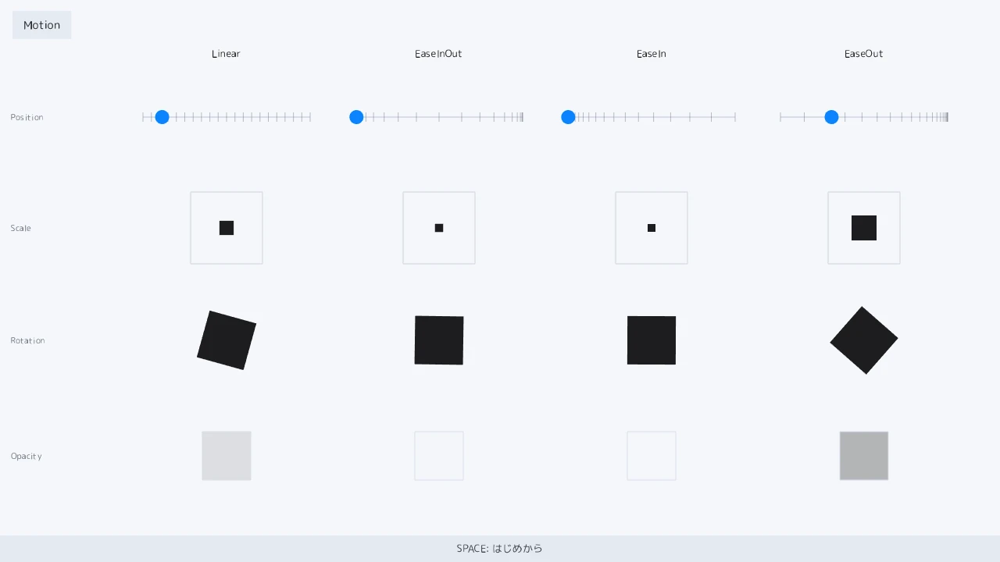
examples/motion）。イージングの緩急を格子で。4 種のイージング（緩急の付け方）を列に、位置・大きさ・回転・透明度を行にした格子です。ひとつの曲線が各プロパティをどう動かすかを一望できます。位置の目盛りが、詰まる所ほど遅い、という速さの変化を形で見せます。前フレームからの経過秒（dt）で時間を進めます。
使う道具: math::Easing::* / pushRotation / popTransform / withAlpha / in.pressed
examples/motion/motion_dll.cpp。全 134 行。mitiru new で作るプロジェクトの src/main.cpp をこれ 1 つに置き換えれば、そのまま mitiru run で動きます。GitHub ↗
// motion。動きに緩急をつける「イージング」の見本。1 つの曲線で位置・大きさ・回転・透明度がどう変化するか // 実行すると: 4 種のイージング (列) が、位置 / 大きさ / 回転 / 透明度 (行) を同時に動かし続ける // 関連 API: mitiru::math::Easing (linear / easeInCubic / easeOutCubic / easeInOutCubic) #include <algorithm> // std::min #include <cmath> // std::fmod #include <mitiru.hpp> #include <mitiru/module/AutoReflect.hpp> #include <mitiru/math/Easing.hpp> // イージング関数 (linear / easeInCubic / easeOutCubic ...) #include "../common/chapter_hud.hpp" // 章ラベル + 操作帯 + 共通の配色 using namespace mitiru; // 1 つのイージング関数と、その表示名。列ごとに 1 種類を表示する。 // イージングは 0→1 の進み具合を受け取り、緩急をつけた 0→1 を返す関数。 using EaseFn = float (*)(float) noexcept; struct Column { const char* name; EaseFn ease; }; constexpr Column kCols[4] = { {"Linear", &math::Easing::linear}, // 等速 (緩急なし) {"EaseInOut", &math::Easing::easeInOutCubic}, // ゆっくり始まり、速くなり、またゆっくり止まる {"EaseIn", &math::Easing::easeInCubic}, // ゆっくり始まって、だんだん速く {"EaseOut", &math::Easing::easeOutCubic}, // 速く始まって、だんだん遅く }; // 4 つの行 = 動かすプロパティ。中心 y と、左端に表示する名前。 constexpr float kRowY[4] = {150.0f, 292.0f, 436.0f, 584.0f}; constexpr const char* kRowLbl[4] = {"Position", "Scale", "Rotation", "Opacity"}; // 各列の配置。左の 165px は行ラベル用にあけ、そこから幅 250 の列を 272 間隔で 4 列並べる。 constexpr float kColX = 165.0f, kColW = 250.0f, kColGap = 272.0f; constexpr float kDur = 1.6f; // 0 → 1 まで動く秒数 constexpr float kHold = 0.5f; // 動き切ったあと、次の周回まで止めて見せる秒数 struct Motion { float t = 0.0f; // 経過秒。状態はこれ 1 つだけ void update(Input in, float dt) { if (in.pressed(Key::Space)) { t = 0.0f; } // 最初からやり直す t += dt; } // 現在の進み具合 (0 → 1)。動き切ったら、次の周回が始まるまで 1 のまま止める。 float progress() const { const float phase = std::fmod(t, kDur + kHold); return std::min(phase / kDur, 1.0f); } template <class Surface> void drawImpl(Surface& s) const { s.fillScreen(theme::kPaper); chapterTitle(s, "Motion"); const float p = progress(); for (int r = 0; r < 4; ++r) // 行ラベルは左端に 1 回ずつ { s.text(kRowLbl[r], 14.0f, kRowY[r] - 8.0f, theme::kSubtle, 15); } for (int c = 0; c < 4; ++c) { const float left = kColX + kColGap * static_cast<float>(c); const float center = left + kColW * 0.5f; const float e = kCols[c].ease(p); // この列のイージングを通した進み具合 s.drawTextInRect(Rect{left, 56.0f, kColW, 26.0f}, kCols[c].name, theme::kInk, 18.0f, Surface::TextAlignH::Center, Surface::TextAlignV::Middle); drawPosition(s, left, kRowY[0], e, c); drawScale(s, center, kRowY[1], e); drawRotation(s, center, kRowY[2], e); drawOpacity(s, center, kRowY[3], e); } chapterControls(s, "SPACE: はじめから"); } void draw(Screen& s) const { drawImpl(s); } void draw(Canvas& c) const { drawImpl(c); } // 位置: 横のレール上を丸が進む。等間隔の時間で区切った目盛りも重ねる。 // 目盛りが詰まっている所ほど動きが遅く、まばらな所ほど速い (速さの変化が形で分かる)。 template <class Surface> void drawPosition(Surface& s, float left, float y, float e, int c) const { const float x0 = left + 18.0f, len = kColW - 36.0f; s.drawLine(Vec2{x0, y}, Vec2{x0 + len, y}, theme::kFrame, 2.0f); for (int k = 0; k <= 20; ++k) // 等間隔の時間ごとに、丸が来る位置へ目盛りを打つ { const float tx = x0 + len * kCols[c].ease(static_cast<float>(k) / 20.0f); s.drawLine(Vec2{tx, y - 6.0f}, Vec2{tx, y + 6.0f}, theme::kSubtle.withAlpha(0.45f), 1.0f); } s.fillCircle(x0 + len * e, y, 9.0f, theme::kBlue); } // 大きさ: 枠の中で、四角形が小さい状態から大きい状態へ変化する。 template <class Surface> void drawScale(Surface& s, float cx, float cy, float e) const { s.drawRectFrame(Rect{cx - 46.0f, cy - 46.0f, 92.0f, 92.0f}, theme::kFrame, 1.5f); const float side = 10.0f + e * 72.0f; s.drawRect(cx - side * 0.5f, cy - side * 0.5f, side, side, theme::kInk); } // 回転: 四角形が 0 → 135 度回転する (斜めに傾いて見えるので回転が分かりやすい)。 template <class Surface> void drawRotation(Surface& s, float cx, float cy, float e) const { s.pushRotation(deg(e * 135.0f), cx, cy); s.drawRect(cx - 31.0f, cy - 31.0f, 62.0f, 62.0f, theme::kInk); s.popTransform(); } // 透明度: 四角形が透明から不透明へ変化する (薄い枠で位置が分かるようにしておく)。 template <class Surface> void drawOpacity(Surface& s, float cx, float cy, float e) const { const Rect box{cx - 31.0f, cy - 31.0f, 62.0f, 62.0f}; s.drawRectFrame(box, theme::kFrame, 1.0f); s.drawRect(box, theme::kInk.withAlpha(e)); } }; // inspector に表示する状態を自動で反映する。aggregate 型なので列挙は不要 (D12)。 MITIRU_REFLECT_AUTO(Motion); MITIRU_ASSERT_NO_PADDING(Motion); MITIRU_GAME(Motion);
スプライト
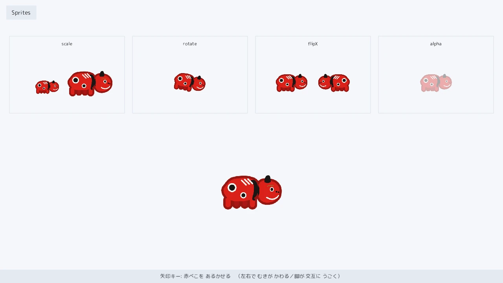
examples/sprites）。画像の拡大・回転・反転・半透明・歩行。赤べこ（会津の張り子牛）のスプライトを、大きさ・回転・左右反転・半透明の見本で並べ、下段では矢印キーで歩かせます。歩くと進む向きに反転し、4 コマの脚が交互に動きます。画像はファイルから読み込んで描きます。
使う道具: drawSprite / pushRotation / popTransform / in.move / Timer::every / withAlpha
examples/sprites/sprites_dll.cpp。全 139 行。mitiru new で作るプロジェクトの src/main.cpp をこれ 1 つに置き換えれば、そのまま mitiru run で動きます。GitHub ↗
// sprites。画像 (スプライト) を描く章。赤べこ (会津の張り子牛) を、拡大・回転・反転・半透明で見せ、歩かせる。 // 実行すると、上段にスプライトの機能見本 (大きさ / 回転 / 左右反転 / 半透明)、下段に矢印キーで歩く赤べこを表示する。 // 使う機能: Texture::fromFile (画像読み込み) / drawSprite (flipX・色 / 透明度) / pushRotation (回転) / in.move() / Timer #include <type_traits> // Canvas 経路のみ registerTexture する if constexpr のため #include <mitiru.hpp> #include <mitiru/module/AutoReflect.hpp> #include <mitiru/render/Texture.hpp> // 画像を直接渡して描く drawSprite のため #include "../common/chapter_hud.hpp" // 章の名前ラベル (左上) と操作帯 (下端) の共通ヘルパー using namespace mitiru; // 赤べこの絵は 4 コマ (歩行サイクル)。順に切り替えると、短い脚が前後に動いて歩いているように見える。 // 画像 (Texture) は内部に可変長データを持つため、ゲームの状態 struct には入れられない。 // (状態 struct はポインタを持たない単純なデータの塊に保つ決まりのため。) そこで画像は、 // このファイル直下の変数に、開始時に一度だけ読み込む。読み込みに失敗しても value_or で // 「空の画像」を入れるため、何も描かれないだけで落ちない。 static const render::Texture kFrames[4] = { render::Texture::fromFile("sprites/assets/sprites/akabeko_0.png").value_or(render::Texture{}), render::Texture::fromFile("sprites/assets/sprites/akabeko_1.png").value_or(render::Texture{}), render::Texture::fromFile("sprites/assets/sprites/akabeko_2.png").value_or(render::Texture{}), render::Texture::fromFile("sprites/assets/sprites/akabeko_3.png").value_or(render::Texture{}), }; constexpr float kSpeed = 260.0f; // 歩く速さ (1 秒あたりのピクセル) constexpr float kWalk = 0.575f; // 歩く赤べこの大きさ (画像の何倍か。絵が高解像度なので 1 未満で縮小して使う) constexpr float kStepSec = 0.13f; // 歩行コマを 1 つ進める間隔 (秒) // 上段の機能見本を並べる 4 つのマスの左端 x。幅 293・高さ 196。 constexpr float kCellY = 92.0f, kCellW = 293.0f, kCellH = 196.0f; constexpr float kCellX[4] = {24.0f, 337.0f, 650.0f, 963.0f}; constexpr const char* kCellLbl[4] = {"scale", "rotate", "flipX", "alpha"}; struct Sprites06 { float cx = 640.0f, cy = 480.0f; // 歩く赤べこの中心 bool faceLeft = false; // 進む向き (左を向いているか) std::uint8_t _pad[3] = {}; // 暗黙の詰め物を残さない (状態をバイト単位で比べるため) Timer walk; // 歩行アニメ用のタイマー (単純な値なので状態に置ける) int step = 0; // 今の歩行コマ (0〜3) float t = 0.0f; // 経過秒 (回転の見本に使う) static float clampf(float v, float lo, float hi) { return v < lo ? lo : (v > hi ? hi : v); } float texW() const { return static_cast<float>(kFrames[0].width()); } float texH() const { return static_cast<float>(kFrames[0].height()); } // update だけが状態を書き換える (draw は状態を読んで描くだけ)。 void update(Input in, float dt) { t += dt; const Stick m = in.move(); // 矢印キー・WASD・パッドを 1 つのベクトルにまとめてくれる cx += m.x * kSpeed * dt; cy += m.y * kSpeed * dt; if (m.x < -0.1f) { faceLeft = true; } // 左へ動いたら左向き else if (m.x > 0.1f) { faceLeft = false; } // 右へ動いたら右向き // 下段の歩ける範囲に収める (上段の見本と重ならないよう、y は下側に限る)。 const float halfW = texW() * kWalk * 0.5f, halfH = texH() * kWalk * 0.5f; cx = clampf(cx, halfW, 1280.0f - halfW); cy = clampf(cy, 380.0f, 720.0f - 34.0f - halfH); // 動いている間だけ歩行コマを順に送る。止まっているときは休みの姿 (コマ 0) に戻す。 const bool moving = (m.x * m.x + m.y * m.y) > 0.01f; if (moving) { if (walk.every(kStepSec, dt)) { step = (step + 1) % 4; } } else { step = 0; } } // 赤べこ 1 匹を、中心 (x,y)・大きさ scale で描く。flip で左右反転、tint で色 / 透明度、rotDeg で回転する。 template <class Surface> void beko(Surface& s, int frame, float x, float y, float scale, bool flip = false, Color tint = color::White, float rotDeg = 0.0f) const { const render::Texture& tex = kFrames[frame]; const float w = static_cast<float>(tex.width()) * scale; const float h = static_cast<float>(tex.height()) * scale; const Rect dst{x - w * 0.5f, y - h * 0.5f, w, h}; const Rect src{0.0f, 0.0f, static_cast<float>(tex.width()), static_cast<float>(tex.height())}; if (rotDeg != 0.0f) { s.pushRotation(deg(rotDeg), x, y); } // これから描く絵を x,y 中心に回す s.drawSprite(tex, dst, src, tint, flip); if (rotDeg != 0.0f) { s.popTransform(); } // 回転を元に戻す } // 機能見本のマス 1 つ (枠 + 上のラベル)。中の絵は draw() 側で描く。 template <class Surface> void cell(Surface& s, int i) const { s.drawRectFrame(Rect{kCellX[i], kCellY, kCellW, kCellH}, theme::kFrame, 1.0f); s.drawTextInRect(Rect{kCellX[i], kCellY + 8.0f, kCellW, 22.0f}, kCellLbl[i], theme::kInk, 16.0f, Surface::TextAlignH::Center, Surface::TextAlignV::Middle); } template <class Surface> void drawImpl(Surface& s) const { // Canvas は境界をまたぐため、Texture のアドレスではなく id で描かせる必要がある // (未登録だと drawSprite が DLL 内アドレスをそのまま格納してしまう)。 if constexpr (std::is_same_v<Surface, mitiru::Canvas>) { s.registerTexture(kFrames[0], "akabeko_0"); s.registerTexture(kFrames[1], "akabeko_1"); s.registerTexture(kFrames[2], "akabeko_2"); s.registerTexture(kFrames[3], "akabeko_3"); } s.fillScreen(theme::kPaper); chapterTitle(s, "Sprites"); for (int i = 0; i < 4; ++i) { cell(s, i); } const float midY = kCellY + kCellH * 0.5f + 16.0f; // マス内で絵を置く高さ // scale: 同じ絵を小と大で並べる (drawSprite の拡大率の違い)。 beko(s, 0, kCellX[0] + 96.0f, midY + 12.0f, 0.225f); beko(s, 0, kCellX[0] + 205.0f, midY, 0.425f); // rotate: 1 匹をゆっくり回す。 beko(s, 0, kCellX[1] + kCellW * 0.5f, midY, 0.3f, false, color::White, t * 70.0f); // flipX: 右向きと左向きを向かい合わせにする。 beko(s, 0, kCellX[2] + 92.0f, midY, 0.3f, false); // 右向き beko(s, 0, kCellX[2] + 200.0f, midY, 0.3f, true); // 左向き (flipX) // alpha: 色の透明度を下げて半透明にする。 beko(s, 0, kCellX[3] + kCellW * 0.5f, midY, 0.3f, false, color::White.withAlpha(0.35f)); // ── 主役: 矢印キーで動く赤べこ。進む向きに反転し、短い脚が交互に動いて歩く。── beko(s, step, cx, cy, kWalk, faceLeft); chapterControls(s, "矢印キー: 赤べこを あるかせる （左右で むきが かわる／脚が 交互に うごく）"); } void draw(Screen& s) const { drawImpl(s); } void draw(Canvas& c) const { drawImpl(c); } }; // 実行: mitiru_host.exe sprites/sprites.dll // inspector に映す状態を自動反射する。aggregate 型なので列挙不要 (D12)。 MITIRU_REFLECT_AUTO(Sprites06); MITIRU_ASSERT_NO_PADDING(Sprites06); MITIRU_GAME(Sprites06);
カメラ
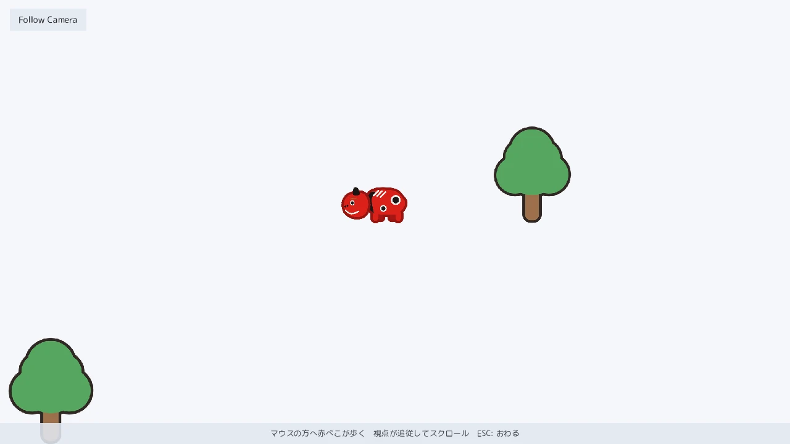
examples/camera）。広い牧場を先読みしながら追う。画面よりずっと広い牧場を、赤べこがマウスの方へ歩きます。視点が、動かない範囲（deadzone）・進む向きの先読み・なめらかな追従・牧場の外を映さない制限、をまとめて効かせて追いかけます。木と赤べこは接地する位置の順に描かれ、前後が入れ替わります。
使う道具: camera::FollowCam / cam.update / applyCamera / endCamera / drawSprite
examples/camera/camera_dll.cpp。全 150 行。mitiru new で作るプロジェクトの src/main.cpp をこれ 1 つに置き換えれば、そのまま mitiru run で動きます。GitHub ↗
// camera。追従カメラ。赤べこが牧場をマウスの方へ歩き、視点が滑らかに追従してスクロールする。 // 実行すると: マウスカーソルの方へ赤べこが歩く。画面より広い牧場で、視点が deadzone + 先読みを使って追う。 // 関連 API: mitiru::camera::FollowCam (setTarget / update) / Screen::applyCamera / endCamera / drawSprite #include <algorithm> // std::clamp / std::min #include <cmath> // std::sqrt / std::sin / std::fabs #include <type_traits> // Canvas 経路のみ registerTexture する if constexpr のため #include <mitiru.hpp> #include <mitiru/camera/FollowCam.hpp> // 追従カメラ (deadzone + 先読み + ease + world clamp) #include <mitiru/render/Texture.hpp> // 画像を渡して描く drawSprite のため #include "../common/chapter_hud.hpp" // 章ラベル + 操作帯 (全章共通の書式) using namespace mitiru; constexpr float kScreenW = 1280.0f, kScreenH = 720.0f; constexpr float kWorldW = 4000.0f, kWorldH = 2600.0f; // 画面よりずっと広い牧場 // 画像はすべて赤べこと同じ方法で生成したもの (tools/ の Python で SVG 風に作った PNG)。 static const render::Texture kBody = render::Texture::fromFile( "camera/assets/sprites/akabeko_body.png").value_or(render::Texture{}); static const render::Texture kHead = render::Texture::fromFile( "camera/assets/sprites/akabeko_head_neutral.png").value_or(render::Texture{}); static const render::Texture kTree = render::Texture::fromFile( "camera/assets/sprites/tree.png").value_or(render::Texture{}); constexpr float kBekoScale = 0.4f; constexpr float kPivotOffX = 32.0f, kPivotOffY = 8.0f; // 首の支点 (observe と同じ) // 牧場に立つ木。根元のワールド座標 (x, y) と大きさ scale。前後関係を表すため、y の昇順で並べる。 struct Tree { float x, y, scale; }; constexpr Tree kTrees[] = { { 700.0f, 260.0f, 0.60f }, { 2300.0f, 320.0f, 0.72f }, { 3400.0f, 440.0f, 0.55f }, {1300.0f, 560.0f, 0.66f }, { 500.0f, 680.0f, 0.70f }, { 2800.0f, 740.0f, 0.58f }, {3700.0f, 860.0f, 0.64f }, { 1800.0f, 960.0f, 0.75f }, { 980.0f, 1080.0f, 0.56f }, {3100.0f, 1180.0f, 0.68f }, { 2200.0f, 1320.0f, 0.60f }, { 620.0f, 1440.0f, 0.72f }, {3600.0f, 1560.0f, 0.58f }, { 1420.0f, 1680.0f, 0.66f }, { 2700.0f, 1820.0f, 0.70f }, {3300.0f, 2020.0f, 0.62f }, { 820.0f, 2160.0f, 0.68f }, { 1980.0f, 2320.0f, 0.74f }, }; struct CameraDemo { float px = kWorldW * 0.5f, py = kWorldH * 0.5f; // 赤べこのワールド座標 float facing = 1.0f; // -1 = 左、+1 = 右 float bob = 0.0f; // 歩行の位相 (揺れ / 首振り) bool moving = false; std::uint8_t _pad[3] = {}; // 暗黙の詰め物を残さない (状態をバイト単位で比べるため) camera::FollowCam cam; bool inited = false; std::uint8_t _pad2[3] = {}; void update(Input in, Hud hud, float dt) { if (!inited) // カメラの効き方を一度だけ設定する { cam.cfg.deadzoneHalfW = 120.0f; cam.cfg.deadzoneHalfH = 80.0f; // この範囲は動かない cam.cfg.lookaheadX = 120.0f; cam.cfg.ease = 6.0f; // 進む向きを先読み / 追従の滑らかさ cam.cfg.clamp = true; // 牧場の外を映さない cam.cfg.worldBounds = Rect{0.0f, 0.0f, kWorldW, kWorldH}; cam.cfg.viewW = kScreenW; cam.cfg.viewH = kScreenH; cam.setTarget(px, py); cam.snapToTarget(); inited = true; } if (in.pressed(Key::Escape)) { hud.quit(); } // マウスカーソルのワールド座標 = 画面座標 + (カメラ中心 - 画面中心)。そこへ向かって歩く。 const float wtx = in.mouseX() + cam.pos.x - kScreenW * 0.5f; const float wty = in.mouseY() + cam.pos.y - kScreenH * 0.5f; const float dx = wtx - px, dy = wty - py; const float dist = std::sqrt(dx * dx + dy * dy); moving = false; if (dist > 26.0f) // カーソルが近ければ止まる { const float sp = std::min(dist * 3.5f, 380.0f); // 遠いほど速く (上限あり) px = std::clamp(px + dx / dist * sp * dt, 40.0f, kWorldW - 40.0f); py = std::clamp(py + dy / dist * sp * dt, 40.0f, kWorldH - 40.0f); if (dx > 8.0f) { facing = 1.0f; } else if (dx < -8.0f) { facing = -1.0f; } bob += dt * 9.0f; moving = true; } cam.setTarget(px, py); // 追う先を毎フレーム伝える cam.setFacing(facing); cam.update(dt); // deadzone / 先読み / ease / clamp をまとめて適用 } template <class Surface> void drawImpl(Surface& s) const { // Canvas は境界を越えて使われるため、Texture のアドレスではなく id で描画する必要がある // (未登録の場合、drawSprite が DLL 内アドレスをそのまま積んでしまう)。 if constexpr (std::is_same_v<Surface, mitiru::Canvas>) { s.registerTexture(kBody, "akabeko_body"); s.registerTexture(kHead, "akabeko_head_neutral"); s.registerTexture(kTree, "tree"); } s.fillScreen(theme::kPaper); s.applyCamera(cam.pos.x, cam.pos.y); // 以降ワールド座標で描く → カメラ中心がスクロールする // 木と赤べこを接地 y の順に描く (奥＝上にある方を先に)。赤べこの足元 y が // 手前になる木より上なら、赤べこをその木より先に描く = 赤べこが木の後ろに回り込む。 const float bekoFootY = py + kBody.height() * kBekoScale * 0.35f; bool bekoDrawn = false; for (const Tree& t : kTrees) { if (!bekoDrawn && bekoFootY < t.y) { drawBeko(s); bekoDrawn = true; } drawTree(s, t); } if (!bekoDrawn) { drawBeko(s); } s.endCamera(); // HUD は最後に画面座標で描くため、常に最前面になる。 chapterTitle(s, "Follow Camera"); chapterControls(s, "マウスの方へ赤べこが歩く 視点が追従してスクロール ESC: おわる"); } void draw(Screen& s) const { drawImpl(s); } void draw(Canvas& c) const { drawImpl(c); } template <class Surface> void drawTree(Surface& s, const Tree& t) const { const float w = kTree.width() * t.scale, h = kTree.height() * t.scale; const Rect dst{ t.x - w * 0.5f, t.y - h, w, h }; // 根元 (t.x, t.y) に画像の下端を合わせる s.drawSprite(kTree, dst, Rect{0.0f, 0.0f, kTree.width() * 1.0f, kTree.height() * 1.0f}, color::White, false); } template <class Surface> void drawBeko(Surface& s) const { const float bobY = moving ? std::fabs(std::sin(bob)) * 4.0f : 0.0f; // 歩くと上下に弾む const float nod = moving ? std::sin(bob) * 3.5f : 0.0f; // 首を軽く振る const bool faceLeft = facing < 0.0f; const float w = kBody.width() * kBekoScale, h = kBody.height() * kBekoScale; const float cy = py - bobY; const Rect dst{ px - w * 0.5f, cy - h * 0.5f, w, h }; s.drawSprite(kBody, dst, Rect{0.0f, 0.0f, kBody.width() * 1.0f, kBody.height() * 1.0f}, color::White, faceLeft); const float side = faceLeft ? -1.0f : 1.0f; s.pushRotation(deg(nod * side), px + side * kPivotOffX * kBekoScale, cy + kPivotOffY * kBekoScale); s.drawSprite(kHead, dst, Rect{0.0f, 0.0f, kHead.width() * 1.0f, kHead.height() * 1.0f}, color::White, faceLeft); s.popTransform(); } }; // 実行: mitiru_host.exe camera/camera.dll MITIRU_ASSERT_NO_PADDING(CameraDemo); MITIRU_GAME(CameraDemo);
音
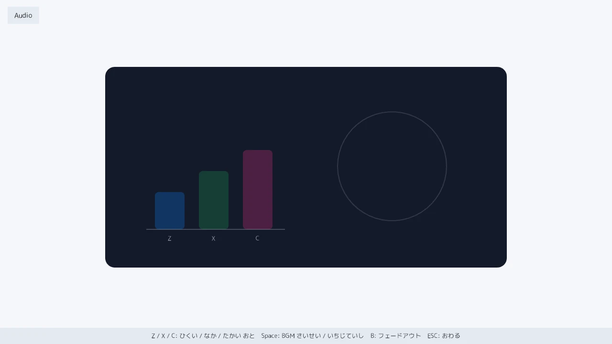
examples/audio）。効果音のリング・BGM のディスク。効果音を色つきのバー、BGM を回るディスクで見せます。Z / X / C で同じ音を高さ（再生速度）だけ変えて鳴らし分け、Space で再生・一時停止・続きから、B でフェードアウト。ゲーム自身は音の仕組みを持たず、hud.play / hud.music でエンジンに再生を頼みます。
使う道具: hud.play / hud.music / hud.pauseMusic / hud.resumeMusic / hud.stopMusic / in.pressed
examples/audio/audio_dll.cpp。全 141 行。mitiru new で作るプロジェクトの src/main.cpp をこれ 1 つに置き換えれば、そのまま mitiru run で動きます。GitHub ↗
// audio。音を鳴らし、現在どの音が鳴っているかを画面にも表示する章。 // 中央の暗い計器に、効果音 3 つの専用バー (Z=低い / X=中くらい / C=高い) と、 // BGM を表す回転するディスク (再生中=回る / 一時停止=止まったまま / フェード=薄れて消える)、 // 台詞 (V) の吹き出しが表示される。台詞は BGM / 効果音とは別の 1 本のスロットで鳴り、 // 鳴っている途中でもう一度押すと重ならず、最初から再生し直す (mixer 窓の「voice 一覧」に出るのはこれ)。 #include <algorithm> // std::max / std::min #include <cmath> // std::sin / std::cos / std::fmod #include <mitiru.hpp> #include <mitiru/module/AutoReflect.hpp> #include "../common/chapter_hud.hpp" // 章ラベル + 操作帯 + 共通の配色 using namespace mitiru; // 効果音 (SE) は 3 つのキーに 1 対 1 で割り当てる。同じ音 (ping) の再生速度だけを変えて // 高さを鳴らし分ける。押したキーのバーだけが強く光り、輪が広がる。他の 2 本は変化しない。 constexpr Key kSeKey[3] = {Key::Z, Key::X, Key::C}; // 低・中・高 constexpr float kSePitch[3] = {0.75f, 1.0f, 1.5f}; // 再生速度 = 音の高さ constexpr Color kSeCol[3] = {theme::kBlue, theme::kGreen, theme::kPink}; // 音ごとの色 constexpr const char* kSeLbl[3] = {"Z", "X", "C"}; // バーの下に出すキー名 // BGM の状態。ゲーム自体は音を鳴らす仕組みを持たず、host に再生方法を指示するだけ。 // 現在再生中か、止めているかは、ゲームが自分で覚えておく。 enum class Bgm : int { Stopped, Playing, Paused }; // 中心 c・半径 r の円周上で、角度 a の点を返す (回転する線や縁の目印に使う)。 static Vec2 onCircle(Vec2 c, float r, float a) { return Vec2{c.x + r * std::cos(a), c.y + r * std::sin(a)}; } struct Audio07 { Bgm bgm = Bgm::Stopped; float seGlow[3] = {0.0f, 0.0f, 0.0f}; // 各バーの残り光 (押した瞬間 1 → だんだん 0 へ) float spin = 0.0f; // ディスクの回転角。再生中だけ進む (止めれば回転も止まる) float bgmLvl = 0.0f; // ディスクの見える濃さ。再生=1 / 一時停止=0.5 / 停止=0 へ滑らかに寄る float voiceGlow = 0.0f; // 吹き出しの残り光。台詞は約 1.8 秒なので、その間ゆっくり消える void update(Input in, Hud hud, float dt) { if (in.cancelPressed()) { hud.quit(); } // ESC で終わる // Z / X / C: それぞれ専用の効果音を 1 発鳴らし、そのバーに残る光を設定する。 for (int i = 0; i < 3; ++i) { // 効果音は BGM を邪魔しないよう、控えめな音量 (0.6) で鳴らす。 // こうすれば BGM を流したまま効果音を重ねても、両方をきちんと聞き取れる。 if (in.pressed(kSeKey[i])) { hud.play("ping", 0.6f, kSePitch[i]); seGlow[i] = 1.0f; } } // Space: 再生、一時停止、続きから再生の順に切り替える (一時停止は再生位置を覚えている)。 if (in.pressed(Key::Space)) { if (bgm == Bgm::Stopped) { hud.music("bgm", true, 0.35f); bgm = Bgm::Playing; } else if (bgm == Bgm::Playing) { hud.pauseMusic(); bgm = Bgm::Paused; } else { hud.resumeMusic(); bgm = Bgm::Playing; } } // B: 1.5 秒かけて薄れて停止する (再生位置は破棄するので、次の Space では最初から再生する)。 if (in.pressed(Key::B) && bgm != Bgm::Stopped) { hud.stopMusic(1.5f); bgm = Bgm::Stopped; } // V: 台詞を 1 本鳴らす。play() と違って専用スロットを使うので、連打しても重ならず、最初から再生し直す。 if (in.pressed(Key::V)) { hud.voice("voice", 0.9f); voiceGlow = 1.0f; } voiceGlow = std::max(0.0f, voiceGlow - dt / 1.8f); // 各バーに残る光を徐々に弱める。 for (int i = 0; i < 3; ++i) { seGlow[i] = std::max(0.0f, seGlow[i] - dt * 2.2f); } // ディスクの濃さを表す bgmLvl を、状態に応じた目標値へ少しずつ近づける (急に変えず、滑らかに変化させる = フェードの見た目)。 float target = 0.0f; // 停止中は 0 if (bgm == Bgm::Playing) { target = 1.0f; } else if (bgm == Bgm::Paused) { target = 0.5f; } bgmLvl += (target - bgmLvl) * std::min(1.0f, dt * 3.0f); if (bgm == Bgm::Playing) { spin = std::fmod(spin + dt * 2.2f, deg(360.0f)); } } template <class Surface> void drawImpl(Surface& s) const { s.fillScreen(theme::kPaper); chapterTitle(s, "Audio"); // 光や脈動は白い背景では見えないので、計器は暗いカードの中に表示する。 s.drawRoundedRect(Rect{220.0f, 140.0f, 840.0f, 420.0f}, theme::kCard, 20.0f); // 左: 効果音の 3 本のバー。ふだんは薄く表示し、鳴らした 1 本だけを強く光らせ、輪を広げる。 const float baseY = 480.0f; s.drawLine(Vec2{306.0f, baseY}, Vec2{596.0f, baseY}, theme::kCardInk.withAlpha(0.35f), 2.0f); for (int i = 0; i < 3; ++i) { const float h = 78.0f + 44.0f * static_cast<float>(i); // 低い音ほど短いバー const float x = 324.0f + 92.0f * static_cast<float>(i); const float g = seGlow[i]; s.drawRoundedRect(Rect{x, baseY - h, 62.0f, h}, kSeCol[i].withAlpha(0.26f + 0.74f * g), 8.0f); // バーの下にキー名 (Z/X/C)。位置とキーの対応によって「どれが鳴ったか」が分かる。 s.drawTextInRect(Rect{x, baseY + 8.0f, 62.0f, 22.0f}, kSeLbl[i], theme::kCardInk.withAlpha(0.9f), 18.0f, Surface::TextAlignH::Center, Surface::TextAlignV::Middle); if (g > 0.0f) // 鳴った本の上で輪が弾ける (1→0 につれ外へ広がって薄れる) { s.glowRing(x + 31.0f, baseY - h - 24.0f, 20.0f + 70.0f * (1.0f - g), kSeCol[i].withAlpha(0.9f * g), 2.0f, 9.0f, 44); } } // 中央上: 台詞の吹き出し。鳴っている間だけ表示し、残り時間に合わせて薄くする。 const Rect bubble{628.0f, 176.0f, 96.0f, 56.0f}; s.drawRoundedRect(bubble, theme::kCardInk.withAlpha(0.10f + 0.85f * voiceGlow), 14.0f); s.drawTextInRect(bubble, "V", theme::kCard.withAlpha(0.25f + 0.75f * voiceGlow), 26.0f, Surface::TextAlignH::Center, Surface::TextAlignV::Middle); if (voiceGlow > 0.0f) // 吹き出しの下から広がる波紋 = 声が出ている合図 { s.glowRing(bubble.x() + 48.0f, bubble.y() + 90.0f, 16.0f + 40.0f * (1.0f - voiceGlow), theme::kGreen.withAlpha(0.8f * voiceGlow), 2.0f, 8.0f, 40); } // 右: BGM を表す回転するディスク。消えているときも位置が分かるよう、薄い外枠は常に描く。 const Vec2 disc{820.0f, 348.0f}; const float R = 104.0f; s.drawCircleFrame(disc, R + 10.0f, theme::kCardInk.withAlpha(0.22f), 2.0f); if (bgmLvl > 0.01f) { const float lv = bgmLvl; s.glowRing(disc.x, disc.y, R + 12.0f + 9.0f * std::sin(spin * 3.0f), theme::kBlue.withAlpha(0.5f * lv), 2.0f, 8.0f, 40); // 回転と合わせて脈打つ輪 s.fillCircle(disc.x, disc.y, R, rgba(18, 28, 52, static_cast<int>(235.0f * lv))); s.drawCircleFrame(disc, R, theme::kBlue.withAlpha(0.9f * lv), 3.0f); for (int k = 0; k < 3; ++k) // 回る 3 本の線と縁の目印 (角度が spin で回る = 再生中の合図) { const float ang = spin + deg(120.0f * static_cast<float>(k)); const Vec2 rim = onCircle(disc, R - 14.0f, ang); s.drawLine(disc, rim, theme::kBlue.withAlpha(0.8f * lv), k == 0 ? 5.0f : 2.0f); s.fillCircle(rim.x, rim.y, 6.0f, theme::kPink.withAlpha(0.9f * lv)); } s.fillCircle(disc.x, disc.y, 15.0f, theme::kBlue.withAlpha(lv)); // 中心の軸 } chapterControls(s, "Z / X / C: ひくい / なか / たかい おと V: こえ Space: BGM さいせい / いちじていし B: フェードアウト ESC: おわる"); } void draw(Screen& s) const { drawImpl(s); } void draw(Canvas& c) const { drawImpl(c); } }; // 自動テスト中は実際には音は鳴らないが、再生を要求する処理がきちんと動くことは確認できる。 // inspector に表示する状態を自動反射する。aggregate 型なので列挙は不要 (D12)。 MITIRU_REFLECT_AUTO(Audio07); MITIRU_ASSERT_NO_PADDING(Audio07); MITIRU_GAME(Audio07);
曲の強さ
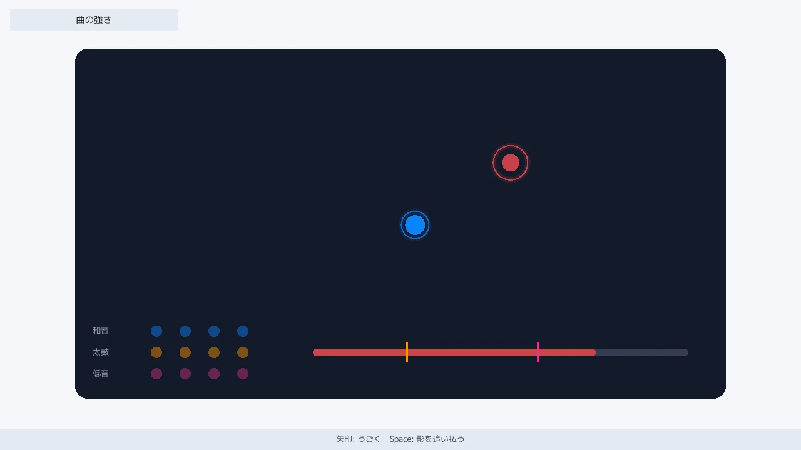
examples/music_layers）。影が近いほど、曲に太鼓と低音が加わる。夜の野原で赤い影が青い灯りへ寄ってきます。近いほど曲の強さを上げ、assets/audio/music.json に書いた太鼓と低音の層が拍の区切りで加わります。Space で追い払うと、sounds.json の風の音 (2 つの音から選び、高さも少し揺れる) がすぐ鳴り、鐘のスティンガーが曲の次の拍に重なります。下の点は、いま耳に届いている拍を in.music() で読んで光らせています。
使う道具: hud.music / hud.musicIntensity / in.music / hud.play / music.json / sounds.json
examples/music_layers/music_layers_dll.cpp。全 126 行。曲の層と JSON (examples/music_layers/assets/audio/) を読みます。リポジトリでビルドすると mitiru_host.exe music_layers/music_layers.dll で起動します。GitHub ↗
// music_layers。危なさに合わせて曲が厚くなる (曲の強さで層を足す、拍に合わせて重ねる) // 実行すると: 夜の野原で赤い影が青い灯りへ寄ってくる。近いほど太鼓、さらに近いと低音が曲に加わり、Space で追い払うと次の拍で鐘が鳴る。 // 関連 API: hud.music / hud.musicIntensity / in.music / hud.play (assets/audio/music.json と sounds.json) #include <cmath> #include <cstdint> #include <mitiru.hpp> #include "../common/chapter_hud.hpp" using namespace mitiru; // 曲は assets/audio/music.json に書いてある。区間 night (2 小節) を 3 つの層で鳴らし、太鼓と低音の層は // 「強さ」に合わせて host が拍の区切りで上げ下げする。ゲームは強さを 0..1 で渡すだけでよい。 // 追い払う時の風の音は assets/audio/sounds.json に 2 つの候補と音の高さの揺れを書いてある constexpr Rect kField{120.0f, 78.0f, 1040.0f, 560.0f}; // 野原 (暗いカード) constexpr float kWalk = 260.0f, kShadowSpeed = 70.0f; // 灯りと影の速さ (px/秒) float clamp01(float v) { return v < 0.0f ? 0.0f : (v > 1.0f ? 1.0f : v); } // 層の聞こえ方を画面に出すための近似。music.json の curve と同じ折れ線にしてある float layerLevel(int layer, float intensity) { if (layer == 1) { return clamp01((intensity - 0.25f) / 0.20f); } // 太鼓: 0.25 から 0.45 で上がる if (layer == 2) { return clamp01((intensity - 0.60f) / 0.20f); } // 低音: 0.6 から 0.8 で上がる return 1.0f; // 和音はいつも鳴る } struct MusicLayers { Vec2 light{360.0f, 360.0f}; // 青い灯り (自分) Vec2 shadow{980.0f, 200.0f}; // 赤い影 float intensity = 0.0f; // 曲の強さ 0..1 (影が近いほど強い) float sent = -1.0f; // 最後に host へ渡した強さ float pushed = 0.0f; // 追い払った輪が広がる間 1 → 0 std::int32_t beat = -1; // 耳に届いている拍 (小節の中で 0..3)。曲が鳴っていなければ -1 float beatPhase = 0.0f; // 拍の中の位置 0..1 void update(Input in, Hud hud, float dt) { hud.music("night"); // 同じ区間を毎フレーム頼んでも、鳴らし始めるのは 1 回だけ const module::MusicClock& clock = in.music(); // 録画にも乗るので、再生しても同じ拍になる beat = clock.playing != 0 ? clock.beatInBar : -1; beatPhase = clock.beatPhase; const Stick m = in.move(); light.x = std::fmin(std::fmax(light.x + m.x * kWalk * dt, kField.x() + 30.0f), kField.right() - 30.0f); light.y = std::fmin(std::fmax(light.y + m.y * kWalk * dt, kField.y() + 30.0f), kField.bottom() - 30.0f); const Vec2 toLight = light - shadow; // 影は灯りへまっすぐ寄ってくる const float dist = std::sqrt(toLight.x * toLight.x + toLight.y * toLight.y); if (dist > 40.0f) { shadow += toLight * (kShadowSpeed * dt / dist); } intensity = clamp01(1.0f - (dist - 90.0f) / 380.0f); if (std::fabs(intensity - sent) > 0.01f) // host が覚えているので、変わった時だけ渡せばよい { hud.musicIntensity(intensity); sent = intensity; } if (in.pressed(Key::Space) && dist < 260.0f) { hud.play("whoosh"); // sounds.json の効果音。すぐ鳴る (2 つの音から選び、高さも少し揺れる) hud.play("chime"); // music.json のスティンガー。曲の次の拍に合わせて鳴る shadow = light - toLight * (420.0f / dist); // 影を反対側へ押し戻す shadow.x = std::fmin(std::fmax(shadow.x, kField.x() + 30.0f), kField.right() - 30.0f); shadow.y = std::fmin(std::fmax(shadow.y, kField.y() + 30.0f), kField.bottom() - 30.0f); pushed = 1.0f; } pushed = std::fmax(0.0f, pushed - dt * 1.5f); } // 下の段: 層ごとに 1 小節 4 拍の点を並べ、いま鳴っている拍を光らせる。聞こえていない層の点は暗いまま void drawBeats(Screen& s) const { const char* kNames[3] = {"和音", "太鼓", "低音"}; const Color kColors[3] = {theme::kBlue, theme::kOrange, theme::kPink}; for (int layer = 0; layer < 3; ++layer) { const float y = kField.bottom() - 108.0f + 34.0f * static_cast<float>(layer); const float level = layerLevel(layer, intensity); s.drawTextInRect(Rect{kField.x() + 24.0f, y - 14.0f, 80.0f, 28.0f}, kNames[layer], theme::kCardInk, 18.0f, Screen::TextAlignH::Left, Screen::TextAlignV::Middle); for (int b = 0; b < 4; ++b) { const float flash = (b == beat) ? 1.0f - beatPhase : 0.0f; const float x = kField.x() + 130.0f + 46.0f * static_cast<float>(b); s.fillCircle(x, y, 9.0f + 5.0f * flash * level, kColors[layer].withAlpha(0.15f + 0.85f * level * (0.35f + 0.65f * flash))); } } } // 下の段の右: 曲の強さの目盛り。太鼓と低音が加わり始める強さに印を付ける void drawGauge(Screen& s) const { const Rect rail{kField.x() + 380.0f, kField.bottom() - 80.0f, 600.0f, 12.0f}; s.drawRoundedRect(rail, theme::kCardInk.withAlpha(0.25f), 6.0f); s.drawRoundedRect(Rect{rail.x(), rail.y(), rail.width() * intensity, rail.height()}, theme::kRed.withAlpha(0.85f), 6.0f); const float marks[2] = {0.25f, 0.6f}; const Color markColors[2] = {theme::kOrange, theme::kPink}; for (int i = 0; i < 2; ++i) { const float x = rail.x() + rail.width() * marks[i]; s.drawRect(Rect{x - 2.0f, rail.y() - 10.0f, 4.0f, rail.height() + 20.0f}, markColors[i]); } } void draw(Screen& s) const { s.fillScreen(theme::kPaper); s.drawRoundedRect(kField, theme::kCard, 20.0f); // 光は白地では見えないので、暗いカードの中に描く const float beatGlow = (beat >= 0) ? 1.0f - beatPhase : 0.0f; // 灯りの輪は拍ごとに広がる s.glowRing(light.x, light.y, 22.0f + 26.0f * beatGlow * intensity, theme::kBlue.withAlpha(0.35f + 0.5f * intensity), 2.0f, 8.0f, 40); s.fillCircle(light.x, light.y, 16.0f, theme::kBlue); s.glowRing(shadow.x, shadow.y, 20.0f + 10.0f * intensity, theme::kRed.withAlpha(0.4f + 0.6f * intensity), 2.0f, 9.0f, 40); s.fillCircle(shadow.x, shadow.y, 14.0f, theme::kRed.withAlpha(0.85f)); if (pushed > 0.0f) { s.glowRing(light.x, light.y, 40.0f + 260.0f * (1.0f - pushed), theme::kAmber.withAlpha(pushed), 2.0f, 8.0f, 48); } drawBeats(s); drawGauge(s); chapterTitle(s, "曲の強さ"); chapterControls(s, "矢印: うごく Space: 影を追い払う"); } }; // 実行: mitiru_host.exe music_layers/music_layers.dll MITIRU_ASSERT_NO_PADDING(MusicLayers); MITIRU_GAME(MusicLayers);
UI の HUD
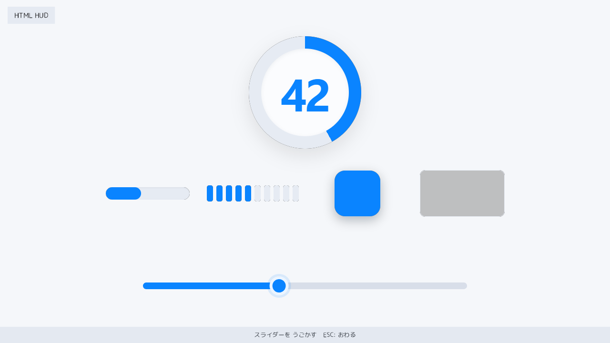
examples/html_hud）。ひとつの値を 6 つの UI 表示へ。下のスライダー（C++ が描く）を動かすと、ひとつの値が上に重なった 6 つの UI 表示（円ゲージ・大きな数字・横バー・pips・色面・折れ線）へ一斉に伝わります。UI は RML / RCSS（HTML / CSS の方言）で assets/ui/main.rml に書き、エンジンがゲームの絵の上に重ねて描きます。C++ は値を送るだけ、表示の更新は RML 側の {{ }} と data-* 属性が受け持ち、スクリプトは 1 行も書きません。
使う道具: hud.set / {{ }} / data-style-* / data-class-* / data-for / spark
examples/html_hud/html_hud_dll.cpp。全 83 行。mitiru new で作るプロジェクトの src/main.cpp をこれ 1 つに置き換えれば、そのまま mitiru run で動きます。GitHub ↗
// html_hud は、C++ が持っている 1 つの数値を、UI の 6 つの表示へ同時に反映する例。 // 下のスライダー (これは C++ が描いている) を動かすと level という 1 つの値が変わり、 // その値を UI へ送ると、上に重なった 6 つの表示 (ゲージ・数字・バー・pips・色・折れ線) が // 一斉に同じ値へ動く。UI は RML / RCSS (HTML / CSS の方言) で書き、{{ level }} や data-class-... と // 書いておくだけで、エンジンが C++ の値を UI へ自動で反映してくれる。スクリプトは書かない。 // セットで examples/html_hud/assets/ui/main.rml を読むと、値を受け取って表示する側が分かる。 // この章で使う仕組みは、マウス入力 (Input) / C++ から UI へ値を送る hud.set(...) / // UI 側の {{ }}・data-class・data-style・data-for・spark #include <algorithm> // std::clamp #include <cstdio> // std::snprintf (pips を JSON 配列に組む) #include <mitiru.hpp> #include <mitiru/module/AutoReflect.hpp> #include "../common/chapter_hud.hpp" // 章ラベル + 操作帯 + 共通パレット using namespace mitiru; // スライダーの寸法 (論理解像度 1280x720)。トラックは画面の下に置き、その上に UI 表示の領域を空ける。 constexpr float kTrackL = 300.0f, kTrackR = 980.0f, kTrackY = 600.0f, kThumbR = 20.0f; // この章が持つ状態は、たった 2 つ。level は「画面じゅうの表示に反映する唯一の数値」で、 // dragging は「今つまみをつかんでいるか」を表す。この level 1 つを UI の 6 つの表示すべてへ // 送って見せることが、この章の主題。 struct HtmlHud { float level = 42.0f; // 0..100。全ての表示ウィジェットが映す唯一の値 bool dragging = false; // つまみをつかんでいる間 true std::uint8_t _pad[3] = {}; // 暗黙の詰め物を残さない (状態をバイト単位で比べるため) void update(Input in, Hud hud, float) { if (in.cancelPressed()) { hud.quit(); } // ESC で終わる const float mx = in.mouseX(), my = in.mouseY(); if (in.mousePressed(0) && onTrack(mx, my)) { dragging = true; } // つまみ / トラックをつかむ if (!in.mouseDown(0)) { dragging = false; } if (dragging) { level = std::clamp((mx - kTrackL) / (kTrackR - kTrackL) * 100.0f, 0.0f, 100.0f); } pushHud(hud); } // マウスがトラック周辺 (つかみやすい広めの帯) にあるか。 static bool onTrack(float x, float y) { return x >= kTrackL - 30.0f && x <= kTrackR + 30.0f && y >= kTrackY - 44.0f && y <= kTrackY + 44.0f; } // level を UI へ送る。送るのは level 本体と、level から作った pips の列 (10 個のうち N 個を点灯) の 2 つだけ。 // pips も level だけから決まるので、実質的には「1 つの値」を送っているのと同じ。 // UI 側はこの値を受け取って表示を更新するだけで、計算は C++ 側で終わっている。 void pushHud(Hud hud) const { const int v = static_cast<int>(level + 0.5f); hud.set("view.level", v); char json[192]; int n = std::snprintf(json, sizeof(json), "["); for (int i = 0; i < 10; ++i) { n += std::snprintf(json + n, sizeof(json) - static_cast<std::size_t>(n), "%s{\"on\":%d}", i ? "," : "", (i * 10 < v) ? 1 : 0); } std::snprintf(json + n, sizeof(json) - static_cast<std::size_t>(n), "]"); hud.set("view.pips", json); } // C++ が直接描くのは、背景とスライダー (レール + 塗り + つまみ) だけ。 // 6 つの値表示は、上に重なった UI (RML / RCSS) が受け持つ。 // つまり、「下のスライダー = 値を決める場所」「上の UI = その値を見せる場所」。 template <class Surface> void drawImpl(Surface& s) const { s.fillScreen(theme::kPaper); const float thumbX = kTrackL + level / 100.0f * (kTrackR - kTrackL); s.drawRoundedRect(Rect{kTrackL, kTrackY - 7.0f, kTrackR - kTrackL, 14.0f}, theme::kFrame, 7.0f); // トラック s.drawRoundedRect(Rect{kTrackL, kTrackY - 7.0f, thumbX - kTrackL, 14.0f}, theme::kBlue, 7.0f); // 塗り (0→つまみ) s.fillCircle(thumbX, kTrackY, kThumbR + 5.0f, rgba(10, 132, 255, dragging ? 70 : 32)); // つまみの暈 s.fillCircle(thumbX, kTrackY, kThumbR, theme::kBlue); // つまみ s.drawRing(Vec2{thumbX, kTrackY}, kThumbR, kThumbR - 6.0f, rgba(255, 255, 255, 235)); // つまみの白縁 chapterTitle(s, "HTML HUD"); chapterControls(s, "スライダーを うごかす ESC: おわる"); } void draw(Screen& s) const { drawImpl(s); } void draw(Canvas& c) const { drawImpl(c); } }; // 実行: mitiru_host.exe html_hud/html_hud.dll // inspector に映す状態を自動反射する。aggregate 型なので列挙不要 (D12)。 MITIRU_REFLECT_AUTO(HtmlHud); MITIRU_ASSERT_NO_PADDING(HtmlHud); MITIRU_GAME(HtmlHud);
UI のメニュー
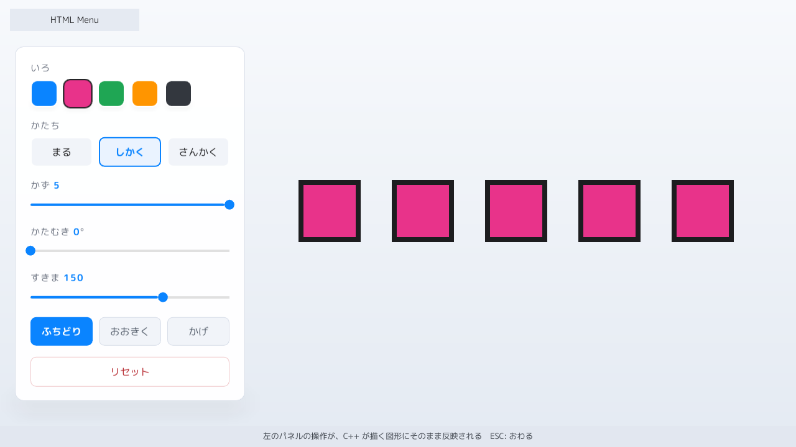
examples/html_menu）。UI を触ると C++ の図形が変わる。html_hud の逆向きです。左の UI パネルを触ると、その操作が C++ に届き、右の図形が色・形・数・傾き・ふちどりなどで変わります。UI → C++ は dispatch(...) の信号だけを送り、状態は C++ が持ちます。リセットは確認ダイアログを 1 枚挟みます。パッドの十字キーと A でも選んで押せます。図形はすべて C++ が描き、スクリプトは書きません。
使う道具: in.action / in.actionPayload / hud.set / dispatch / data-for / confirm
examples/html_menu/html_menu_dll.cpp。全 159 行。mitiru new で作るプロジェクトの src/main.cpp をこれ 1 つに置き換えれば、そのまま mitiru run で動きます。GitHub ↗
// html_menu。UI の操作パネルを触ると、その操作が C++ に届き、C++ が描く図形の変化を目で確認できる例。 // 左のパネルで色・形・数・傾き・間隔や、ふちどり・大きさ・影を選ぶと、右側に C++ が描いた図形が // その場で変わる。UI は RML / RCSS (HTML / CSS の方言) で書き、スクリプトは書かない。 // 前章 html_hud が「C++ → UI (値を見せる)」なら、この章は逆向きの「UI → C++ (操作を伝える)」。 // セットで examples/html_menu/assets/ui/main.rml を読むと、操作を送る側が分かる。 // この章で使う仕組み: UI の操作を受け取る in.action(...) / それに付いてきたデータを読む in.actionPayload(...) / // C++ から UI へ値を返す hud.set(...) / UI 側の dispatch・data-for・confirm #include <cmath> // std::sqrt / std::fabs (さんかくの縁取りの計算) #include <cstdint> // std::uint32_t #include <cstdio> // std::snprintf (選択肢リストの JSON 組み立て) #include <cstdlib> // std::atoi #include <cstring> // std::strstr / std::strlen #include <mitiru.hpp> #include <mitiru/module/AutoReflect.hpp> #include "../common/chapter_hud.hpp" // 章ラベル + 操作帯 (全章共通の書式) using namespace mitiru; // 選べる色の一覧 (ただのデータ)。name はボタンの説明、rgb は図形の色 (パネルの色見本にも使う)。 // 形は 0 = まる / 1 = しかく / 2 = さんかくの 3 種類。 struct Swatch { const char* name; std::uint32_t rgb; }; constexpr Swatch kColors[] = { { "あお", 0x0A84FF }, { "もも", 0xE8338A }, { "みどり", 0x1FA654 }, { "だいだい", 0xFF9500 }, { "すみ", 0x33373E }, }; constexpr const char* kShapes[] = { "まる", "しかく", "さんかく" }; constexpr int kColorCount = static_cast<int>(sizeof(kColors) / sizeof(kColors[0])); constexpr int kShapeCount = static_cast<int>(sizeof(kShapes) / sizeof(kShapes[0])); // UI が送ってくる付随データ (例: {"id":2}) から、key の数値を 1 つ取り出す。 // 見つからなければ -1。届くのは自分の main.rml が送る形式だけなので、簡単な探索で十分。 int payloadInt(const char* json, const char* key) { char pat[16]; std::snprintf(pat, sizeof(pat), "\"%s\":", key); const char* p = (json != nullptr) ? std::strstr(json, pat) : nullptr; return (p != nullptr) ? std::atoi(p + std::strlen(pat)) : -1; } struct HtmlMenu { int color = 0, shape = 0, count = 3; // 選択中の色 / 形、描く個数 (1..5) int tilt = 0, gap = 150; // かたむき (度、0..45)、図形どうしの間隔 (90..180) bool outline = false, big = false, shadow = false; // ふちどり / 大きく / 影 std::uint8_t _pad[1] = {}; // 暗黙の詰め物を残さない (状態をバイト単位で比べるため) void update(Input in, Hud hud, float) { if (in.cancelPressed()) { hud.quit(); } // ESC で終わる // UI パネルから届いた操作に応じて、C++ の状態を書き換える。 // 状態を持つのは常に C++ 側で、UI は「こうしてほしい」と action で要求するだけ。 if (in.action("pick.color")) { const int v = payloadInt(in.actionPayload("pick.color"), "id"); if (v >= 0 && v < kColorCount) { color = v; } } if (in.action("pick.shape")) { const int v = payloadInt(in.actionPayload("pick.shape"), "id"); if (v >= 0 && v < kShapeCount) { shape = v; } } if (in.action("set.count")) { const int v = payloadInt(in.actionPayload("set.count"), "v"); if (v >= 1 && v <= 5) { count = v; } } if (in.action("set.tilt")) { const int v = payloadInt(in.actionPayload("set.tilt"), "v"); if (v >= 0 && v <= 45) { tilt = v; } } if (in.action("set.gap")) { const int v = payloadInt(in.actionPayload("set.gap"), "v"); if (v >= 90 && v <= 180){ gap = v; } } if (in.action("toggle.outline")) { outline = !outline; } if (in.action("toggle.big")) { big = !big; } if (in.action("toggle.shadow")) { shadow = !shadow; } if (in.action("reset")) { color = 0; shape = 0; count = 3; tilt = 0; gap = 150; outline = false; big = false; shadow = false; } pushPanel(hud); } // パネルへ「選べる一覧」と「今の値」を送る。どれを選んでいるか (sel) も C++ が判断し、 // UI はその結果を見た目に反映するだけ。 void pushPanel(Hud hud) const { char colors[384]; int n = std::snprintf(colors, sizeof(colors), "["); for (int i = 0; i < kColorCount; ++i) n += std::snprintf(colors + n, sizeof(colors) - static_cast<std::size_t>(n), "%s{\"id\":%d,\"name\":\"%s\",\"hex\":\"%06X\",\"sel\":%d}", i ? "," : "", i, kColors[i].name, kColors[i].rgb, (i == color) ? 1 : 0); std::snprintf(colors + n, sizeof(colors) - static_cast<std::size_t>(n), "]"); hud.set("view.colors", colors); char shapes[256]; n = std::snprintf(shapes, sizeof(shapes), "["); for (int i = 0; i < kShapeCount; ++i) n += std::snprintf(shapes + n, sizeof(shapes) - static_cast<std::size_t>(n), "%s{\"id\":%d,\"name\":\"%s\",\"sel\":%d}", i ? "," : "", i, kShapes[i], (i == shape) ? 1 : 0); std::snprintf(shapes + n, sizeof(shapes) - static_cast<std::size_t>(n), "]"); hud.set("view.shapes", shapes); hud.set("view.count", count); hud.set("view.tilt", tilt); hud.set("view.gap", gap); hud.set("view.outline", outline); hud.set("view.big", big); hud.set("view.shadow", shadow); } // 図形はすべて C++ が描く。パネルで選んだ値が、ここにそのまま反映される // (パネル操作 → C++ の状態 → この描画、という流れの終点)。 template <class Surface> void drawImpl(Surface& s) const { s.drawGradientRect(Rect{0.0f, 0.0f, 1280.0f, 720.0f}, hex(0xF7F9FC), hex(0xE4EAF2)); const Color c = hex(kColors[color].rgb); const float r = big ? 62.0f : 42.0f, g = static_cast<float>(gap), cy = 340.0f; const float x0 = 830.0f - g * static_cast<float>(count - 1) * 0.5f; // パネル (左) を避け右側に一列 const bool rot = (tilt != 0); // 傾き 0 のときは回転をかけない (四角形をまっすぐな 1 枚として描ける) for (int i = 0; i < count; ++i) { const float x = x0 + g * static_cast<float>(i); if (shadow) // 影: 図形を右下にずらして薄い墨色で先に描く。ふちどり時はその外形に合わせて広げる { const float sx = x + 9.0f, sy = cy + 13.0f; const Color sc = theme::kInk.withAlpha(0.16f); if (rot) { s.pushRotation(deg(static_cast<float>(tilt)), sx, sy); } if (outline) { drawOutline(s, sx, sy, r, 8.0f, sc); } else { drawFill(s, sx, sy, r, sc); } if (rot) { s.popTransform(); } } if (rot) { s.pushRotation(deg(static_cast<float>(tilt)), x, cy); } // 傾きを図形に適用 if (outline) { drawOutline(s, x, cy, r, 8.0f, theme::kInk); } drawFill(s, x, cy, r, c); if (rot) { s.popTransform(); } } chapterTitle(s, "HTML Menu"); chapterControls(s, "左のパネルの操作が、C++ が描く図形にそのまま反映される ESC: おわる"); } void draw(Screen& s) const { drawImpl(s); } void draw(Canvas& c) const { drawImpl(c); } // 選択中の形で 1 つ描く (まる / しかく / さんかく)。 template <class Surface> void drawFill(Surface& s, float x, float y, float r, Color c) const { if (shape == 0) { s.fillCircle(x, y, r, c); } else if (shape == 1) { s.drawRectCentered(x, y, r * 2.0f, r * 2.0f, c); } else { s.drawTriangle(Vec2{x, y - r}, Vec2{x - r, y + r}, Vec2{x + r, y + r}, c); } } // ふちどり: 図形を各辺から均一に d だけ外側へ広げ、濃色で背面に描く。まる・しかくは // そのまま一回り大きくすればよい。さんかくは、内接円の中心を基準に相似形として広げると、3 辺が均一に // d だけ外側へ広がり、角も鋭いまま保たれる (単純に大きくすると辺ごとに太さが変わってしまう)。 template <class Surface> void drawOutline(Surface& s, float x, float y, float r, float d, Color c) const { if (shape == 0) { s.fillCircle(x, y, r + d, c); return; } if (shape == 1) { s.drawRectCentered(x, y, (r + d) * 2.0f, (r + d) * 2.0f, c); return; } const Vec2 v[3] = { {x, y - r}, {x - r, y + r}, {x + r, y + r} }; auto len = [](Vec2 p, Vec2 q) { return std::sqrt((p.x - q.x) * (p.x - q.x) + (p.y - q.y) * (p.y - q.y)); }; const float a = len(v[1], v[2]), b = len(v[2], v[0]), cc = len(v[0], v[1]), per = a + b + cc; const Vec2 inc{ (a * v[0].x + b * v[1].x + cc * v[2].x) / per, (a * v[0].y + b * v[1].y + cc * v[2].y) / per }; const float area = 0.5f * std::fabs((v[1].x - v[0].x) * (v[2].y - v[0].y) - (v[2].x - v[0].x) * (v[1].y - v[0].y)); const float rin = 2.0f * area / per; // 内接円の半径 const float k = (rin + d) / rin; // 中心から k 倍に広げると、辺が d だけ外へ出る Vec2 g[3]; for (int j = 0; j < 3; ++j) { g[j] = { inc.x + (v[j].x - inc.x) * k, inc.y + (v[j].y - inc.y) * k }; } s.drawTriangle(g[0], g[1], g[2], c); } }; // 実行: mitiru_host.exe html_menu/html_menu.dll // inspector に映す状態を自動反射する。aggregate 型なので列挙不要 (D12)。 MITIRU_REFLECT_AUTO(HtmlMenu); MITIRU_ASSERT_NO_PADDING(HtmlMenu); MITIRU_GAME(HtmlMenu);
観察
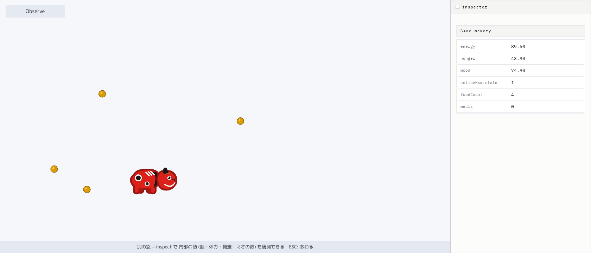
examples/observe）。赤べこの動きと、別窓 Inspector に並ぶ内部の値。赤べこが、腹が減れば餌へ歩き、疲れれば休みます。画面に出るのは動きだけで、腹・体力・機嫌・今の行動といった内部の値は表示しません。その値は、--inspect で開く Inspector（MitiruEngine の観察ウィンドウ）に、ゲームを止めずにライブで並びます。見せたい値を MITIRU_REFLECT に書くだけで、名前付きで窓に出ます。動きを見て楽しみ、値を見て理由を知る、という二面を分けて見せる章です。
使う道具: MITIRU_REFLECT / MITIRU_GAME / FixedVec / FixedString
examples/observe/observe_dll.cpp。全 251 行。mitiru new で作るプロジェクトの src/main.cpp をこれ 1 つに置き換えれば、そのまま mitiru run で動きます。GitHub ↗
// observe。画面に見えるのは「結果」だけだ、という例。 // ここでは赤べこ (会津の張り子牛) が、腹が減れば餌へ歩き、疲れれば休む。画面に映るのは、 // 首を振る / 跳ねる / 表情が変わる / 餌へ寄る、といった動きだけ。 // 一方で、なぜ今それをしているか (腹・体力・機嫌・今の行動) という内部の値は画面に出さない。 // その内部の値は、ゲームを止めずに別の窓 (inspector) から live で読める。これが「観測」。 // 画面を見て動きを楽しみ、値を見て理由を知る、という二面を分けて見せるのがこの章の趣旨。 // 使う機能: 状態を登録する MITIRU_REFLECT (ファイル末尾) / 観察ウィンドウつきで起動する mitiru_host --inspect #include <algorithm> // std::min / std::max #include <cmath> // std::sqrt / std::sin / std::fabs #include <cstdint> #include <type_traits> // Canvas 経路のみ registerTexture する if constexpr のため #include <mitiru.hpp> #include <mitiru/module/PodHsm.hpp> // 行動の優先度つき状態遷移 (★1-6) #include <mitiru/render/Texture.hpp> // 画像を直接渡して描く drawSprite のため #include "../common/chapter_hud.hpp" // 章ラベル + 操作帯 (全章共通の書式) using namespace mitiru; constexpr float kScreenW = 1280.0f, kScreenH = 720.0f; constexpr float kMinX = 120.0f, kMaxX = kScreenW - 120.0f; // 赤べこと餌が動ける範囲 constexpr float kMinY = 240.0f, kMaxY = kScreenH - 130.0f; // (タイトルと操作帯を避ける) // 赤べこは「胴」と「頭 (表情違い 4 枚)」の 2 枚を重ねて 1 匹になる。頭を首のところで // 回すと、赤べこ名物の「こっくり」首振りになる。画像は可変長データを持つため、ゲームの状態を表す // struct には入れられない (状態はポインタを持たない単純なデータの塊に保つ決まり)。そこで、 // 画像はこのファイル直下の変数へ一度だけ読み込む。読み込みに失敗した場合は value_or で空画像にする。 static const render::Texture kBody = render::Texture::fromFile( "observe/assets/sprites/akabeko_body.png").value_or(render::Texture{}); static const render::Texture kHeadNeutral = render::Texture::fromFile( "observe/assets/sprites/akabeko_head_neutral.png").value_or(render::Texture{}); static const render::Texture kHeadHappy = render::Texture::fromFile( "observe/assets/sprites/akabeko_head_happy.png").value_or(render::Texture{}); static const render::Texture kHeadHungry = render::Texture::fromFile( "observe/assets/sprites/akabeko_head_hungry.png").value_or(render::Texture{}); static const render::Texture kHeadSleepy = render::Texture::fromFile( "observe/assets/sprites/akabeko_head_sleepy.png").value_or(render::Texture{}); // 餌も画像 (スプライト) で描く。赤べこと同じ描き方にそろえておくと、餌を先に、赤べこを後に // 描いたとき、赤べこが餌より前面に表示される。 static const render::Texture kFood = render::Texture::fromFile( "observe/assets/sprites/akabeko_food.png").value_or(render::Texture{}); constexpr float kScale = 0.5f; // 画像の何倍で描くか (絵が高解像度なので縮小して使う) // 首の支点 (頭が回る中心)。画像の中心 (152,116) から (+32,+8) の位置が首のつけ根。 constexpr float kPivotOffX = 32.0f, kPivotOffY = 8.0f; struct Food { float x = 0.0f, y = 0.0f; }; // 行動 id と優先度 (★1-6 PodHsm)。休む (3) > 餌を探す / 食べる (2) > うろうろ (1)。 // 同じフレーム内で SEEK_FOOD → EAT と 2 回要求される場合は、同順位の「後勝ち」により、意図どおり EAT が勝つ。 enum : std::uint16_t { kActionWander = 1, kActionSeekFood = 2, kActionEat = 3, kActionRest = 4 }; struct Critter { float x = kScreenW * 0.5f, y = kScreenH * 0.5f; bool faceLeft = false; // 進む向き (左を向いているか) std::uint8_t _pad[3] = {}; // 暗黙の詰め物を残さない (状態をバイト単位で比べるため) // 内部の欲求であり、行動を決める値。画面には出さず、観察ウィンドウ (inspector) だけで見える。 float hunger = 25.0f; // 0..100 時間で上がる。高くなると餌を探す float energy = 100.0f; // 0..100 動くと減り、休むと回復する float mood = 70.0f; // 0..100 腹が満ちて元気なほど高い mitiru::module::PodHsm actionHsm; // 今の行動 (kActionWander 等)。commit() まで確定しない // 目標地点・餌・乱数・見た目の位相など、動きを作るための内部データ。 float goalX = kScreenW * 0.5f, goalY = kScreenH * 0.5f, wanderT = 0.0f; float nodPhase = 0.0f, hopPhase = 0.0f; // 首振り・跳ねのサイン波の位相 FixedVec<Food, 8> foods; int foodCount = 0; // 今 画面に出ている餌の数 (食べると減り、時々わいて増える。観察ウィンドウで見える) int meals = 0; // これまでに食べた餌の総数 (観察ウィンドウで見える) float spawnT = 3.0f; // 次に餌がわくまでの秒 unsigned int rng = 2463534242u; // 決定論的な乱数 (毎回同じ動き = 巻き戻し / リプレイと相性が良い) bool started = false; bool resting = false; // 休憩中か (いちど休むと十分回復するまで続く) std::uint8_t _pad2[2] = {}; float rnd() // 0..1 の乱数 { rng ^= rng << 13; rng ^= rng >> 17; rng ^= rng << 5; return static_cast<float>(rng & 0xFFFFFF) / 16777216.0f; } Food spawnFood() { return { kMinX + rnd() * (kMaxX - kMinX), kMinY + rnd() * (kMaxY - kMinY) }; } void update(Input /*in*/, float dt) { if (!started) // 最初のフレームで餌を撒く { started = true; for (int i = 0; i < 3; ++i) { (void)foods.push_back(spawnFood()); } } // ときどき新しい餌が現れる (最大 8 個)。食べると減るため、画面の餌の数は常に変わる。 spawnT -= dt; if (spawnT <= 0.0f) { spawnT = 3.0f; if (foods.size() < 8) { (void)foods.push_back(spawnFood()); } } hunger = std::min(100.0f, hunger + 4.5f * dt); // だんだん腹が減る // 一番近い餌を探す int nearest = -1; float nd = 1e18f; for (std::size_t i = 0; i < foods.size(); ++i) { const float d = sq(foods[i].x - x) + sq(foods[i].y - y); if (d < nd) { nd = d; nearest = static_cast<int>(i); } } // 疲れたら休む。一度休み始めたら、十分に回復するまで続く (そのため、寝姿がしばらく見られる)。 if (resting) { if (energy >= 75.0f) { resting = false; } } else { if (energy < 28.0f) { resting = true; } } // 行動を決める。優先度は、休む (kActionRest) > 腹が減った (kActionSeekFood / kActionEat) > // それ以外はうろうろ (kActionWander)。PodHsm::changeState の優先度引数が、そのまま // この階層を表す (HE2 の ChangeState(id, priority) 相当、★1-6)。 float speed = 0.0f; if (resting) { mitiru::module::changeState(actionHsm, kActionRest, 3); energy = std::min(100.0f, energy + 20.0f * dt); } else if (hunger > 60.0f && nearest >= 0) { mitiru::module::changeState(actionHsm, kActionSeekFood, 2); goalX = foods[nearest].x; goalY = foods[nearest].y; speed = 150.0f; energy -= 6.0f * dt; if (nd < 40.0f * 40.0f) // 餌に届いた → 食べる { hunger = std::max(0.0f, hunger - 55.0f); // SEEK_FOOD と同順位 (2)。同じフレーム内の「後勝ち」により、EAT が確定する。 mitiru::module::changeState(actionHsm, kActionEat, 2); foods.removeAt(static_cast<std::size_t>(nearest)); // その餌は消える ++meals; } } else { mitiru::module::changeState(actionHsm, kActionWander, 1); speed = 85.0f; energy -= 2.5f * dt; wanderT -= dt; if (wanderT <= 0.0f || sq(goalX - x) + sq(goalY - y) < 44.0f * 44.0f) { goalX = kMinX + rnd() * (kMaxX - kMinX); goalY = kMinY + rnd() * (kMaxY - kMinY); wanderT = 2.0f + rnd() * 2.0f; } } energy = clampf(energy, 0.0f, 100.0f); mitiru::module::commit(actionHsm); // フレーム末に確定 (pickHead/drawImpl はこの後の値を見る) // 目標へ向かって進む const float dx = goalX - x, dy = goalY - y; const float len = std::sqrt(dx * dx + dy * dy) + 0.001f; x += (dx / len) * speed * dt; y += (dy / len) * speed * dt; if (speed > 1.0f) { faceLeft = (dx < 0.0f); } // 進む向きに顔を向ける mood = clampf(100.0f - hunger * 0.5f - (100.0f - energy) * 0.3f, 0.0f, 100.0f); // 見た目の位相を進める。機嫌が良いほど首振りが速く、元気なほど跳ねる速さが増す。 nodPhase += (2.0f + (mood / 100.0f) * 3.0f) * dt; hopPhase += (5.0f + (energy / 100.0f) * 3.0f) * dt; foodCount = static_cast<int>(foods.size()); // 観察ウィンドウに出す用に、今の餌の数を控える } // 今の気分に合う頭 (表情) を選ぶ。休む → 眠い / 腹ぺこ → ひもじい / 上機嫌 → にっこり / それ以外 → ふつう。 const render::Texture& pickHead() const { if (actionHsm.state == kActionRest) { return kHeadSleepy; } if (hunger > 55.0f) { return kHeadHungry; } if (mood > 68.0f) { return kHeadHappy; } return kHeadNeutral; } // 赤べこ 1 匹を、中心 (cx, cy)・大きさ kScale で描く。胴を描いてから、頭を首の支点まわりに // nodDeg 度ぶん回して重ねる。faceLeft なら胴・頭ともに左右反転し、支点も鏡像にする。 template <class Surface> void drawBeko(Surface& s, float cx, float cy, float nodDeg) const { const float w = kBody.width() * kScale, h = kBody.height() * kScale; const Rect dst{ cx - w * 0.5f, cy - h * 0.5f, w, h }; const Rect srcBody{ 0.0f, 0.0f, kBody.width() * 1.0f, kBody.height() * 1.0f }; s.drawSprite(kBody, dst, srcBody, color::White, faceLeft); const render::Texture& head = pickHead(); const Rect srcHead{ 0.0f, 0.0f, head.width() * 1.0f, head.height() * 1.0f }; const float side = faceLeft ? -1.0f : 1.0f; const float pivotX = cx + side * kPivotOffX * kScale; // 首の支点 (向きで左右反転) const float pivotY = cy + kPivotOffY * kScale; s.pushRotation(deg(nodDeg * side), pivotX, pivotY); // 支点まわりに頭を回す s.drawSprite(head, dst, srcHead, color::White, faceLeft); s.popTransform(); } template <class Surface> void drawImpl(Surface& s) const { // Canvas は境界をまたぐため、Texture のアドレスではなく id で描く必要がある // (未登録の場合、drawSprite では DLL 内アドレスがそのまま積まれてしまう)。 if constexpr (std::is_same_v<Surface, mitiru::Canvas>) { s.registerTexture(kBody, "akabeko_body"); s.registerTexture(kHeadNeutral, "akabeko_head_neutral"); s.registerTexture(kHeadHappy, "akabeko_head_happy"); s.registerTexture(kHeadHungry, "akabeko_head_hungry"); s.registerTexture(kHeadSleepy, "akabeko_head_sleepy"); s.registerTexture(kFood, "akabeko_food"); } s.fillScreen(theme::kPaper); // 餌 (スプライト。赤べこより先に描くため、あとで描く赤べこが前面になる) for (std::size_t i = 0; i < foods.size(); ++i) { const float fs = 26.0f; // 画面での大きさ (直径) const Rect dst{ foods[i].x - fs * 0.5f, foods[i].y - fs * 0.5f, fs, fs }; const Rect src{ 0.0f, 0.0f, kFood.width() * 1.0f, kFood.height() * 1.0f }; s.drawSprite(kFood, dst, src, color::White, false); } // 首振りは、サイン波でこっくりと動かす。機嫌が良いと大きく、疲れていると小さくなる。 const float nodAmp = (3.5f + (mood / 100.0f) * 5.0f) * (0.45f + 0.55f * energy / 100.0f); const float nodDeg = std::sin(nodPhase) * nodAmp; // 跳ねは、元気で休んでいないときだけ、周期的に軽くホップする。 const bool lively = (energy > 60.0f) && (actionHsm.state != kActionRest); const float hop = lively ? 12.0f * std::fabs(std::sin(hopPhase)) : 0.0f; // 赤べこは餌より前面 (餌を先に描いてある) に、跳ねたぶんだけ上へずらして描く。 drawBeko(s, x, y - hop, nodDeg); chapterTitle(s, "Observe"); chapterControls(s, "別の窓 --inspect で 内部の値 (腹・体力・機嫌・えさの数) を観測できる ESC: おわる"); } void draw(Screen& s) const { drawImpl(s); } void draw(Canvas& c) const { drawImpl(c); } static float sq(float v) { return v * v; } static float clampf(float v, float lo, float hi) { return v < lo ? lo : (v > hi ? hi : v); } }; // 状態の構造をエンジンに登録する。読み取らせたいフィールド名を並べるだけでよい。これだけで、外部の // 観測ツールが hunger / energy / mood / action を名前付きのデータとして読めるようになる。 MITIRU_REFLECT(Critter, energy, hunger, mood, actionHsm.state, foodCount, meals); // 実行: mitiru_host.exe observe/observe.dll --inspect MITIRU_ASSERT_NO_PADDING(Critter); MITIRU_GAME(Critter);
巻き戻し
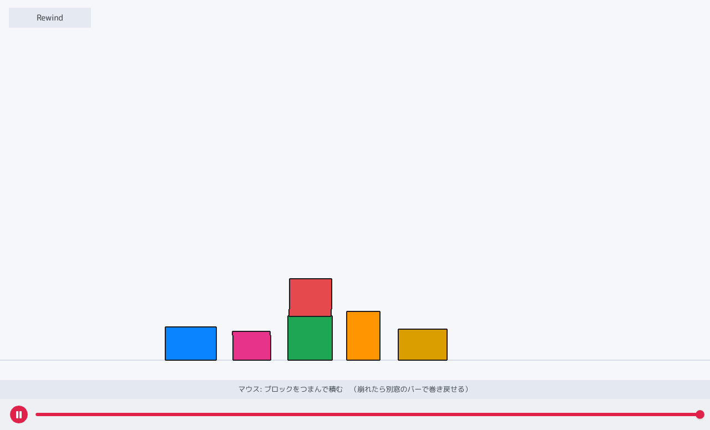
examples/rewind）。積んだブロックと、別窓の巻き戻しシークバー。床のブロックをマウスでつまんで積みます。位置・速度・回転を持つブロックが重力・接触・まさつで振る舞います。状態を 1 つの構造体にまとめてあるので、エンジンが毎フレーム記録し、崩れても別窓のバーを動かせば物理の途中経過ごと過去のフレームへ戻せます。
使う道具: MITIRU_GAME / MITIRU_REWIND_BUFFER / FixedVec / in.mouseDown
examples/rewind/rewind_dll.cpp。全 437 行。mitiru new で作るプロジェクトの src/main.cpp をこれ 1 つに置き換えれば、そのまま mitiru run で動きます。GitHub ↗
// rewind。「時間を巻き戻す」体験をする章 (ブロック積み) // ゲームの状態を全部 1 つの構造体にまとめておくと、エンジンが毎フレームその中身を // 自動で記録する。だから、あとから好きな過去のフレームへ丸ごと戻せる。ここでは // 物理 (位置・速度・回転) もその構造体に入っているので、崩れたブロックも巻き戻せる。 // 遊び方: 床に置かれたブロックをマウスでつまんで積み上げる。つまんだ点がカーソルに // 引かれ、重力でぶらぶら揺れる。崩れたら下の別窓のバーを左へ動かして戻す。 // 使う機能: 状態を 1 つの構造体にまとめる MITIRU_GAME / ポインタを持たない配列 FixedVec #include <algorithm> // std::min / std::max / std::clamp #include <cmath> // std::cos / std::sin / std::fabs #include <cstdint> #include <mitiru.hpp> #include <mitiru/module/AutoReflect.hpp> #include <mitiru/core/FixedVec.hpp> // 長さの上限が決まった配列。ポインタを持たないので構造体ごとまるごとコピーできる #include "../common/chapter_hud.hpp" // 章ラベル + 操作帯 (全章共通の書式) using namespace mitiru; // ── プレイエリアと物理の設定 ────────────────────────────────── constexpr float kScreenW = 1280.0f, kScreenH = 720.0f; constexpr float kCeil = 72.0f, kFloor = 650.0f; // ブロックが動ける範囲 (タイトルと操作帯の間) constexpr float kWallL = 0.0f, kWallR = kScreenW; // 左右のかべ constexpr float kGravity = 1400.0f; // 重力 (下向きの加速度) constexpr int kMaxBlocks = 16; // ブロックの最大数 constexpr int kMaxContacts = 128; // 1 フレームで扱う接触点の最大数 constexpr int kSubsteps = 4; // 1 フレームを何回に分けて解くか (多いほど安定) constexpr int kVelIters = 8; // 速度をならす反復回数 (多いほど積みが安定) constexpr float kMaxV = 1800.0f, kMaxW = 14.0f; // 速度・角速度の上限 (爆発を防ぐ) constexpr float kFriction = 0.5f; // まさつの強さ constexpr float kSlop = 0.4f, kPosPercent = 0.4f; // めり込みの許容と押し戻す割合 constexpr float kGrabPull = 200.0f, kGrabDamp = 16.0f; // つまみのバネと揺れの収まり // ブロックの色は 6 色を順ぐりに使う。 constexpr Color kPalette[6] = { theme::kBlue, theme::kPink, theme::kGreen, theme::kOrange, theme::kAmber, theme::kRed}; // 1 つのブロック。位置・速度・回転をすべて持つ単純なデータ (ポインタなし)。 struct Block { float x = 0.0f, y = 0.0f; // 中心の位置 float angle = 0.0f; // かたむき (ラジアン) float vx = 0.0f, vy = 0.0f; // 速度 float w = 0.0f; // 角速度 (回る速さ) float hw = 20.0f, hh = 20.0f; // 半分の幅・高さ std::uint8_t color = 0; std::uint8_t _pad[3] = {}; // 暗黙の詰め物を残さない (状態をバイト単位で比べるため) }; // 接触点 1 つ分の情報 (その場だけで使う。状態には入れない)。 // a はブロック番号、b は相手のブロック番号 (壁・床は -1)。 struct Contact { int a = 0, b = -1; float px = 0.0f, py = 0.0f; // ぶつかっている点 float nx = 0.0f, ny = 0.0f; // 押し戻す向き (a から相手へ) float depth = 0.0f; // めり込んだ深さ }; using Contacts = FixedVec<Contact, kMaxContacts>; // ── ブロックの物理的な性質 (重さ・回りにくさ) ────────────────── inline float blockMass(const Block& b) { return 4.0f * b.hw * b.hh; } // 面積を重さとみなす inline float blockInvMass(const Block& b) { return 1.0f / blockMass(b); } inline float blockInvInertia(const Block& b) // 回りにくさの逆数 (長方形の公式) { const float m = blockMass(b), w = 2.0f * b.hw, h = 2.0f * b.hh; return 1.0f / (m * (w * w + h * h) / 12.0f); } // ブロックの 4 隅の世界座標を求める。 inline void blockCorners(const Block& b, float outX[4], float outY[4]) { const float c = std::cos(b.angle), s = std::sin(b.angle); const float lx[4] = {-b.hw, b.hw, b.hw, -b.hw}; const float ly[4] = {-b.hh, -b.hh, b.hh, b.hh}; for (int i = 0; i < 4; ++i) { outX[i] = b.x + lx[i] * c - ly[i] * s; outY[i] = b.y + lx[i] * s + ly[i] * c; } } // 点 (px, py) がブロックの中にあるか。 inline bool pointInBlock(const Block& b, float px, float py) { const float c = std::cos(b.angle), s = std::sin(b.angle); const float dx = px - b.x, dy = py - b.y; const float lx = dx * c + dy * s; // ブロックのローカル座標に直す const float ly = -dx * s + dy * c; return std::fabs(lx) <= b.hw && std::fabs(ly) <= b.hh; } // 1 本の軸に 4 隅を射影して、最小値と最大値を返す。 inline void projectCorners(const float cx[4], const float cy[4], float nx, float ny, float& mn, float& mx) { mn = mx = cx[0] * nx + cy[0] * ny; for (int i = 1; i < 4; ++i) { const float d = cx[i] * nx + cy[i] * ny; mn = std::min(mn, d); mx = std::max(mx, d); } } // 2 つのブロックが重なっているかを調べる (分離軸法)。 // 重なっていれば、重なりが最も浅い方向 (押し戻す方向) とその深さを返す。 struct Sat { bool hit; float nx, ny, depth; }; inline Sat satBoxes(const Block& A, const Block& B) { float ax[4], ay[4], bx[4], by[4]; blockCorners(A, ax, ay); blockCorners(B, bx, by); const float ca = std::cos(A.angle), sa = std::sin(A.angle); const float cb = std::cos(B.angle), sb = std::sin(B.angle); const float axesX[4] = {ca, -sa, cb, -sb}; // 2 つの箱の面の向き 4 本 const float axesY[4] = {sa, ca, sb, cb}; float best = 1e9f, bnx = 0.0f, bny = 0.0f; for (int k = 0; k < 4; ++k) { float mnA, mxA, mnB, mxB; projectCorners(ax, ay, axesX[k], axesY[k], mnA, mxA); projectCorners(bx, by, axesX[k], axesY[k], mnB, mxB); const float overlap = std::min(mxA, mxB) - std::max(mnA, mnB); if (overlap <= 0.0f) { return {false, 0.0f, 0.0f, 0.0f}; } // すき間があれば当たっていない if (overlap < best) { best = overlap; bnx = axesX[k]; bny = axesY[k]; } } if ((B.x - A.x) * bnx + (B.y - A.y) * bny < 0.0f) { bnx = -bnx; bny = -bny; } // A から B へ向ける return {true, bnx, bny, best}; } // つまむブロックが最初から床に置かれている状態を作る。5 個を並べ、1 個だけ上に乗せる。 constexpr FixedVec<Block, kMaxBlocks> makeInitialBlocks() { FixedVec<Block, kMaxBlocks> v; struct Spec { float hw, hh; }; const Spec floorSpecs[5] = {{46, 30}, {34, 26}, {40, 40}, {30, 44}, {44, 28}}; float edge = 300.0f; // 左から順に置いていく float baseX = 0.0f, baseTop = 0.0f; for (int i = 0; i < 5; ++i) { Block b; b.hw = floorSpecs[i].hw; b.hh = floorSpecs[i].hh; b.x = edge + b.hw; b.y = kFloor - b.hh; // 床の上にのせる b.color = static_cast<std::uint8_t>(i); (void)v.push_back(b); if (i == 2) { baseX = b.x; baseTop = b.y - b.hh; } // 3 個目の上に 1 個積んでおく edge = b.x + b.hw + 30.0f; } Block top; top.hw = 38.0f; top.hh = 34.0f; top.x = baseX; top.y = baseTop - top.hh; top.color = 5; (void)v.push_back(top); return v; } // ゲームの状態を全部この 1 つの構造体に入れる。 // エンジンはこの中身を毎フレーム自動で記録するので、あとで別窓のバーを動かすと、 // 物理の途中経過ごと過去へ戻せる (崩れる前に戻せばブロックが元どおり積み上がる)。 struct Blocks { FixedVec<Block, kMaxBlocks> blocks = makeInitialBlocks(); int grabIndex = -1; // つまんでいるブロック番号 (-1 = つまんでいない) float grabLocalX = 0.0f, grabLocalY = 0.0f; // つまんだ点 (ブロックのローカル座標) float cursorX = 0.0f, cursorY = 0.0f; // いまのカーソル位置 bool prevDown = false; // 前フレームでマウス左が押されていたか std::uint8_t _pad[3] = {}; // 押した瞬間に、カーソルの下にあるブロックをつまむ。上に描かれているものを優先する。 void grabAt(float mx, float my) { for (int i = static_cast<int>(blocks.size()) - 1; i >= 0; --i) { if (!pointInBlock(blocks[i], mx, my)) { continue; } const Block& b = blocks[i]; const float c = std::cos(b.angle), s = std::sin(b.angle); const float dx = mx - b.x, dy = my - b.y; grabLocalX = dx * c + dy * s; // つまんだ点をローカル座標で覚える grabLocalY = -dx * s + dy * c; grabIndex = i; return; } } // つまんだ点をカーソルへ引くバネ。重力で下がろうとするので、振り子のように揺れる。 void applyGrabSpring(float h) { Block& b = blocks[grabIndex]; const float c = std::cos(b.angle), s = std::sin(b.angle); const float rx = grabLocalX * c - grabLocalY * s; // つまんだ点の中心からのずれ const float ry = grabLocalX * s + grabLocalY * c; const float wx = b.x + rx, wy = b.y + ry; // つまんだ点のいまの位置 const float pvx = b.vx - b.w * ry, pvy = b.vy + b.w * rx; // その点の速度 const float m = blockMass(b); const float fx = m * (kGrabPull * (cursorX - wx) - kGrabDamp * pvx); const float fy = m * (kGrabPull * (cursorY - wy) - kGrabDamp * pvy); const float im = blockInvMass(b), iI = blockInvInertia(b); b.vx += im * fx * h; b.vy += im * fy * h; b.w += iI * (rx * fy - ry * fx) * h; // 中心からずれた点を引くので回る = 振り子 } // 重力とつまみのバネによる力を速度に加える。 void applyForces(float h) { for (Block& b : blocks) { b.vy += kGravity * h; } if (grabIndex >= 0) { applyGrabSpring(h); } } // 速度の分だけ動かし、速度が大きくなりすぎないように上限を設ける。 void integrate(float h) { for (Block& b : blocks) { b.x += b.vx * h; b.y += b.vy * h; b.angle += b.w * h; b.vx = std::clamp(b.vx, -kMaxV, kMaxV); b.vy = std::clamp(b.vy, -kMaxV, kMaxV); b.w = std::clamp(b.w, -kMaxW, kMaxW); b.vx *= 0.999f; // ゆっくり勢いを落として揺れを収める b.vy *= 0.999f; b.w *= 0.99f; } } // 接触点を 1 つ加える (相手がブロックのとき)。 void pushPair(Contacts& out, int i, int j, float px, float py, const Sat& sat) { Contact c; c.a = i; c.b = j; c.px = px; c.py = py; c.nx = sat.nx; c.ny = sat.ny; c.depth = sat.depth; (void)out.push_back(c); } // 2 つのブロックの接触点を集める。相手の箱にめり込んだ角を接触点として使う。 void addPairContacts(int i, int j, Contacts& out) { const Sat sat = satBoxes(blocks[i], blocks[j]); if (!sat.hit) { return; } const Block& A = blocks[i]; const Block& B = blocks[j]; float ax[4], ay[4], bx[4], by[4]; blockCorners(A, ax, ay); blockCorners(B, bx, by); int added = 0; for (int k = 0; k < 4 && added < 2; ++k) if (pointInBlock(A, bx[k], by[k])) { pushPair(out, i, j, bx[k], by[k], sat); ++added; } for (int k = 0; k < 4 && added < 2; ++k) if (pointInBlock(B, ax[k], ay[k])) { pushPair(out, i, j, ax[k], ay[k], sat); ++added; } if (added == 0) { pushPair(out, i, j, (A.x + B.x) * 0.5f, (A.y + B.y) * 0.5f, sat); } } // ブロックが床・壁にめり込んでいたら接触点を加える。 void addBoundaryContacts(int i, Contacts& out) { float cx[4], cy[4]; blockCorners(blocks[i], cx, cy); for (int k = 0; k < 4; ++k) { Contact c; c.a = i; c.b = -1; c.px = cx[k]; c.py = cy[k]; if (cy[k] > kFloor) { c.nx = 0.0f; c.ny = 1.0f; c.depth = cy[k] - kFloor; (void)out.push_back(c); } if (cy[k] < kCeil) { c.nx = 0.0f; c.ny = -1.0f; c.depth = kCeil - cy[k]; (void)out.push_back(c); } if (cx[k] < kWallL) { c.nx = -1.0f; c.ny = 0.0f; c.depth = kWallL - cx[k]; (void)out.push_back(c); } if (cx[k] > kWallR) { c.nx = 1.0f; c.ny = 0.0f; c.depth = cx[k] - kWallR; (void)out.push_back(c); } } } // このフレームの接触点を全部集める。 void collectContacts(Contacts& out) { const int n = static_cast<int>(blocks.size()); for (int i = 0; i < n; ++i) { addBoundaryContacts(i, out); } for (int i = 0; i < n; ++i) for (int j = i + 1; j < n; ++j) { addPairContacts(i, j, out); } } // 接触点で速度を調整し、めり込む方向の動きを止める (＋摩擦で滑りを弱める)。 void resolveVelocity(const Contact& c) { Block& A = blocks[c.a]; const bool st = c.b < 0; // 相手が床・かべなら動かない Block* B = st ? nullptr : &blocks[c.b]; const float imA = blockInvMass(A), iIA = blockInvInertia(A); const float imB = st ? 0.0f : blockInvMass(*B); const float iIB = st ? 0.0f : blockInvInertia(*B); const float rax = c.px - A.x, ray = c.py - A.y; const float vax = A.vx - A.w * ray, vay = A.vy + A.w * rax; float rbx = 0.0f, rby = 0.0f, vbx = 0.0f, vby = 0.0f; if (!st) { rbx = c.px - B->x; rby = c.py - B->y; vbx = B->vx - B->w * rby; vby = B->vy + B->w * rbx; } const float rvx = vbx - vax, rvy = vby - vay; const float vn = rvx * c.nx + rvy * c.ny; if (vn > 0.0f) { return; } // すでに離れていく向きなら何もしない const float raN = rax * c.ny - ray * c.nx; const float rbN = rbx * c.ny - rby * c.nx; const float kN = imA + imB + iIA * raN * raN + iIB * rbN * rbN; if (kN <= 0.0f) { return; } const float jn = -vn / kN; // めり込む向きの速度を打ち消す (跳ね返りなし = 積みが落ち着く) const float pnx = jn * c.nx, pny = jn * c.ny; A.vx -= imA * pnx; A.vy -= imA * pny; A.w -= iIA * (rax * pny - ray * pnx); if (!st) { B->vx += imB * pnx; B->vy += imB * pny; B->w += iIB * (rbx * pny - rby * pnx); } const float tx = -c.ny, ty = c.nx; // 接触面にそった向き const float vt = rvx * tx + rvy * ty; const float raT = rax * ty - ray * tx; const float rbT = rbx * ty - rby * tx; const float kT = imA + imB + iIA * raT * raT + iIB * rbT * rbT; if (kT <= 0.0f) { return; } float jt = -vt / kT; const float maxJ = kFriction * jn; // まさつはぶつかりの強さまで jt = std::clamp(jt, -maxJ, maxJ); const float pfx = jt * tx, pfy = jt * ty; A.vx -= imA * pfx; A.vy -= imA * pfy; A.w -= iIA * (rax * pfy - ray * pfx); if (!st) { B->vx += imB * pfx; B->vy += imB * pfy; B->w += iIB * (rbx * pfy - rby * pfx); } } // めり込みを少しずつ解消する (重さに応じて分け合う)。 void correctPosition(const Contact& c) { const float corr = std::max(c.depth - kSlop, 0.0f) * kPosPercent; if (corr <= 0.0f) { return; } Block& A = blocks[c.a]; const bool st = c.b < 0; const float imA = blockInvMass(A); const float imB = st ? 0.0f : blockInvMass(blocks[c.b]); const float sum = imA + imB; if (sum <= 0.0f) { return; } A.x -= c.nx * (corr * imA / sum); A.y -= c.ny * (corr * imA / sum); if (!st) { Block& B = blocks[c.b]; B.x += c.nx * (corr * imB / sum); B.y += c.ny * (corr * imB / sum); } } // ほとんど止まったブロックの微振動をなくす (つまんでいるものは除く)。 void settleTiny() { for (int i = 0; i < static_cast<int>(blocks.size()); ++i) { if (i == grabIndex) { continue; } Block& b = blocks[i]; if (std::fabs(b.vx) < 8.0f && std::fabs(b.vy) < 8.0f && std::fabs(b.w) < 0.05f) { b.vx = 0.0f; b.vy = 0.0f; b.w = 0.0f; } } } // 1 フレームを何回かに分けて解く (細かく解くほど積み上げた状態が安定する)。 void step(float dt) { const float h = dt / kSubsteps; for (int sub = 0; sub < kSubsteps; ++sub) { applyForces(h); integrate(h); Contacts contacts; collectContacts(contacts); for (int it = 0; it < kVelIters; ++it) for (const Contact& c : contacts) { resolveVelocity(c); } for (const Contact& c : contacts) { correctPosition(c); } } settleTiny(); } void update(Input in, float dt) { const float mx = in.mouseX(), my = in.mouseY(); const bool down = in.mouseDown(0); if (down && !prevDown) { grabAt(mx, my); } // 押した瞬間につまむ if (!down) { grabIndex = -1; } // 離したら手をはなす (そのまま落ちる) cursorX = mx; cursorY = my; prevDown = down; float t = dt; if (t > 0.033f) { t = 0.033f; } // 処理が重い瞬間でも一気に飛ばさない step(t); } template <class Surface> void drawImpl(Surface& s) const { s.fillScreen(theme::kPaper); s.drawLine(Vec2{0.0f, kFloor}, Vec2{kScreenW, kFloor}, theme::kFrame, 2.0f); // 床 for (int i = 0; i < static_cast<int>(blocks.size()); ++i) { const Block& b = blocks[i]; s.pushRotation(b.angle, b.x, b.y); // ブロックの中心を軸に回して描く s.drawRect(b.x - b.hw, b.y - b.hh, b.hw * 2.0f, b.hh * 2.0f, kPalette[b.color % 6]); s.drawRectFrame(Rect{b.x - b.hw, b.y - b.hh, b.hw * 2.0f, b.hh * 2.0f}, theme::kInk, 2.0f); s.popTransform(); } if (grabIndex >= 0) // つまんでいる点とカーソルを線で結ぶ (分かりやすく) { const Block& b = blocks[grabIndex]; const float c = std::cos(b.angle), sn = std::sin(b.angle); const float wx = b.x + (grabLocalX * c - grabLocalY * sn); const float wy = b.y + (grabLocalX * sn + grabLocalY * c); s.drawLine(Vec2{wx, wy}, Vec2{cursorX, cursorY}, theme::kSubtle, 1.5f); s.fillCircle(wx, wy, 4.0f, theme::kInk); } chapterTitle(s, "Rewind"); chapterControls(s, "マウス: ブロックをつまんで積む （崩れたら別窓のバーで巻き戻せる）"); } void draw(Screen& s) const { drawImpl(s); } void draw(Canvas& c) const { drawImpl(c); } }; // DLL の入口。この構造体はポインタを持たない単純なデータなので、 // エンジンが毎フレームまるごと記録して、あとから過去へ戻せる。 // 実行: mitiru_host.exe rewind/rewind.dll --inspect rewind // inspector に映す状態を自動反射する。aggregate 型なので列挙不要 (D12)。 MITIRU_REFLECT_AUTO(Blocks); MITIRU_ASSERT_NO_PADDING(Blocks); MITIRU_GAME(Blocks); MITIRU_REWIND_BUFFER(600); // この章は 10 秒分 (60fps) さかのぼれるようにする
セーブ
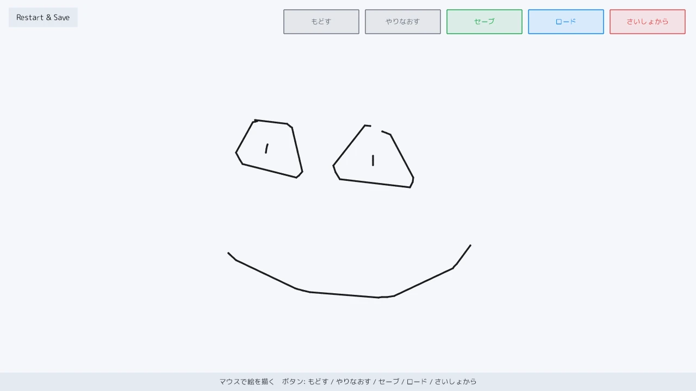
examples/restart_save）。描いた絵をセーブ・ロード・やり直し。マウスで線を描き、ボタンで もどす・やりなおす・セーブ・ロード・さいしょから を行います。もどす／やりなおすは 1 筆ごと、セーブ／ロードは今の絵をまるごとファイルへ写す・戻す、さいしょから は状態をまっさらに作り直します。
使う道具: hud.save / hud.load / hud.requestRestart / in.mouseDown
examples/restart_save/restart_save_dll.cpp。全 153 行。mitiru new で作るプロジェクトの src/main.cpp をこれ 1 つに置き換えれば、そのまま mitiru run で動きます。GitHub ↗
// restart_save。描いた絵を「状態全体」として、もどす / やりなおすとセーブ / ロードを行う。 // 実行すると、マウスで線を描き、上のボタンでもどす / やりなおす / セーブ / ロード / さいしょからを操作できる。 // 関連 API: Hud::save / load / requestRestart / マウス (in.mouseX / mouseY / mouseDown) // undo / redo とセーブ / ロードは同じ仕組みで、「状態を丸ごと控えて戻す」。undo / redo は 1 手ごとに // 控えて戻すもので、セーブ / ロードはその状態を丸ごとファイル (save/slot0.mslot) に写すもの。 #include <cstddef> // std::size_t #include <cstdint> // std::uint8_t #include <mitiru.hpp> #include <mitiru/module/AutoReflect.hpp> #include <mitiru/core/FixedVec.hpp> // 点と区切りを貯める固定長の配列 #include "../common/chapter_hud.hpp" // 章ラベル + 操作帯 (全章共通の書式) using namespace mitiru; constexpr float kScreenW = 1280.0f, kScreenH = 720.0f; constexpr int kMaxPts = 2500; // 描ける点の上限 constexpr int kMaxStrokes = 200; // 描ける線 (ひと筆) の上限 = もどせる手数 // 線を構成する 1 点。newStroke=1 なら「新しいひと筆の描き始め」を表し、前の点とはつながない。 struct Pt { float x = 0.0f, y = 0.0f; std::uint8_t newStroke = 0; std::uint8_t _pad[3] = {}; }; // 暗黙の詰め物を残さない (状態をバイト単位で比べるため) // 画面上のボタン。5 個を右詰めで横一列に置く。 struct Btn { float x, y, w, h; const char* label; }; constexpr float kBtnY = 18.0f, kBtnH = 44.0f, kBtnW = 138.0f, kStep = 150.0f; constexpr float kBar0 = kScreenW - 20.0f - 5.0f * kBtnW - 4.0f * 12.0f; constexpr Btn kUndo = { kBar0 + 0.0f * kStep, kBtnY, kBtnW, kBtnH, "もどす" }; constexpr Btn kRedo = { kBar0 + 1.0f * kStep, kBtnY, kBtnW, kBtnH, "やりなおす" }; constexpr Btn kSave = { kBar0 + 2.0f * kStep, kBtnY, kBtnW, kBtnH, "セーブ" }; constexpr Btn kLoad = { kBar0 + 3.0f * kStep, kBtnY, kBtnW, kBtnH, "ロード" }; constexpr Btn kReset = { kBar0 + 4.0f * kStep, kBtnY, kBtnW, kBtnH, "さいしょから" }; constexpr float kCanvasTop = 82.0f, kCanvasBot = kScreenH - 58.0f; // 描ける範囲 (ボタンと操作帯を避ける) // 「セーブした / ロードした」という表示だけに使う一時的な値。ゲームの状態 (下の struct) には入れない。状態に // 入れるとセーブ時に一緒にファイルへ書かれ、ロード時に復元されて「ロードしたのにセーブしたと出る」バグ // になる。保存したいのは絵だけ。表示するだけの値は状態と分けることが、save / load の勘どころ。 static float sFlash = 0.0f; // 表示の残り時間 static const char* sFlashMsg = ""; // 何をしたか (セーブした / ロードした) static Color sFlashCol = theme::kInk; // その色 static void flash(const char* msg, Color col) { sFlash = 1.2f; sFlashMsg = msg; sFlashCol = col; } struct Paint15 { FixedVec<Pt, kMaxPts> pts; // 描いた線の点 ― これ全部が絵の状態 FixedVec<int, kMaxStrokes> ends; // 各ひと筆の終わりの点数 = もどす/やりなおすの区切り int liveStrokes = 0; // いま見えているひと筆の数 (もどすで減らし、やりなおすで増やす) bool drawing = false; // いまマウスで描いている最中か bool prevDown = false; std::uint8_t _pad[2] = {}; // 暗黙の詰め物を残さない (状態をバイト単位で比べるため) float lastX = 0.0f, lastY = 0.0f; // D1: save / load の結果は host が次のフレームまで確定させないため、要求を出した // フレームでは flash を表示せず、「次フレーム判定待ち」を立てるだけにする (Input::saveSucceeded 参照)。 bool pendingSave = false; bool pendingLoad = false; std::uint8_t _pad2[2] = {}; static bool hit(const Btn& b, float mx, float my) { return mx >= b.x && mx <= b.x + b.w && my >= b.y && my <= b.y + b.h; } static bool inCanvas(float my) { return my >= kCanvasTop && my <= kCanvasBot; } static float sq(float v) { return v * v; } std::size_t livePts() const { return liveStrokes > 0 ? static_cast<std::size_t>(ends[liveStrokes - 1]) : 0; } void update(Input in, Hud hud, float dt) { const float mx = in.mouseX(), my = in.mouseY(); const bool down = in.mouseDown(0); // save / load の成否は host 側の処理を経て、次のフレームの in.saveSucceeded()/loadSucceeded() // で分かる。ここで確定した結果を flash で表示する (クリックした瞬間には分からない)。 if (pendingSave) { pendingSave = false; flash(in.saveSucceeded() ? "セーブした" : "セーブ失敗", in.saveSucceeded() ? theme::kGreen : theme::kRed); } if (pendingLoad) { pendingLoad = false; flash(in.loadSucceeded() ? "ロードした" : "ロード失敗", in.loadSucceeded() ? theme::kBlue : theme::kRed); } if (down && !prevDown) // 押した瞬間: ボタンか、キャンバスかで分ける { if (hit(kUndo, mx, my)) { if (liveStrokes > 0) { --liveStrokes; } } // 1 手戻す else if (hit(kRedo, mx, my)) { if (liveStrokes < static_cast<int>(ends.size())) { ++liveStrokes; } } // 1 手進める else if (hit(kSave, mx, my)) { hud.save("slot0"); pendingSave = true; } // 結果は次フレームで分かる else if (hit(kLoad, mx, my)) { hud.load("slot0"); pendingLoad = true; } // 同上 else if (hit(kReset, mx, my)) { hud.requestRestart(); sFlash = 0.0f; } // 状態をまっさらに作り直してもらう else if (inCanvas(my)) { // 新しいひと筆。もどしていた場合は、その先のやりなおす分を削除してから描き足す。 ends.truncate(static_cast<std::size_t>(liveStrokes)); pts.truncate(livePts()); (void)pts.push_back({mx, my, 1}); drawing = true; lastX = mx; lastY = my; } } else if (down && drawing && inCanvas(my)) // ドラッグ中: 少し動いたら点を足す { if (sq(mx - lastX) + sq(my - lastY) > 9.0f && !pts.full()) { (void)pts.push_back({mx, my, 0}); lastX = mx; lastY = my; } } else if (!down && prevDown && drawing) // 離した = ひと筆の完成。区切りを記録して 1 手にする { if (!ends.full()) { (void)ends.push_back(static_cast<int>(pts.size())); } liveStrokes = static_cast<int>(ends.size()); drawing = false; } prevDown = down; if (sFlash > 0.0f) { sFlash -= dt; } } template <class Surface> void drawImpl(Surface& s) const { s.fillScreen(theme::kPaper); // 表示対象のひと筆までの点を描く (描いている最中は現在の筆も表示する)。同じひと筆の連続する点を // 線でつなぎ、各点に小さな丸を置いて継ぎ目を滑らかにする。 const std::size_t n = drawing ? pts.size() : livePts(); for (std::size_t i = 0; i < n; ++i) { s.fillCircle(pts[i].x, pts[i].y, 1.8f, theme::kInk); if (pts[i].newStroke == 0 && i > 0) { s.drawLine(Vec2{pts[i - 1].x, pts[i - 1].y}, Vec2{pts[i].x, pts[i].y}, theme::kInk, 3.2f); } } drawBtn(s, kUndo, theme::kSubtle); drawBtn(s, kRedo, theme::kSubtle); drawBtn(s, kSave, theme::kGreen); drawBtn(s, kLoad, theme::kBlue); drawBtn(s, kReset, theme::kRed); chapterTitle(s, "Restart & Save"); if (sFlash > 0.0f) { s.text(sFlashMsg, 24.0f, 92.0f, sFlashCol, 22); } chapterControls(s, "マウスで絵を描く ボタン: もどす / やりなおす / セーブ / ロード / さいしょから"); } void draw(Screen& s) const { drawImpl(s); } void draw(Canvas& c) const { drawImpl(c); } template <class Surface> void drawBtn(Surface& s, const Btn& b, Color c) const { s.drawRect(b.x, b.y, b.w, b.h, c.withAlpha(0.12f)); s.drawRectFrame(Rect{b.x, b.y, b.w, b.h}, c, 1.5f); s.drawTextInRect(Rect{b.x, b.y, b.w, b.h}, b.label, c, 18.0f, Surface::TextAlignH::Center, Surface::TextAlignV::Middle); } }; // 実行: mitiru_host.exe restart_save/restart_save.dll // inspector に映す状態を自動反射する。aggregate 型なので列挙不要 (D12)。 MITIRU_REFLECT_AUTO(Paint15); MITIRU_ASSERT_NO_PADDING(Paint15); MITIRU_GAME(Paint15);
セーブスロット
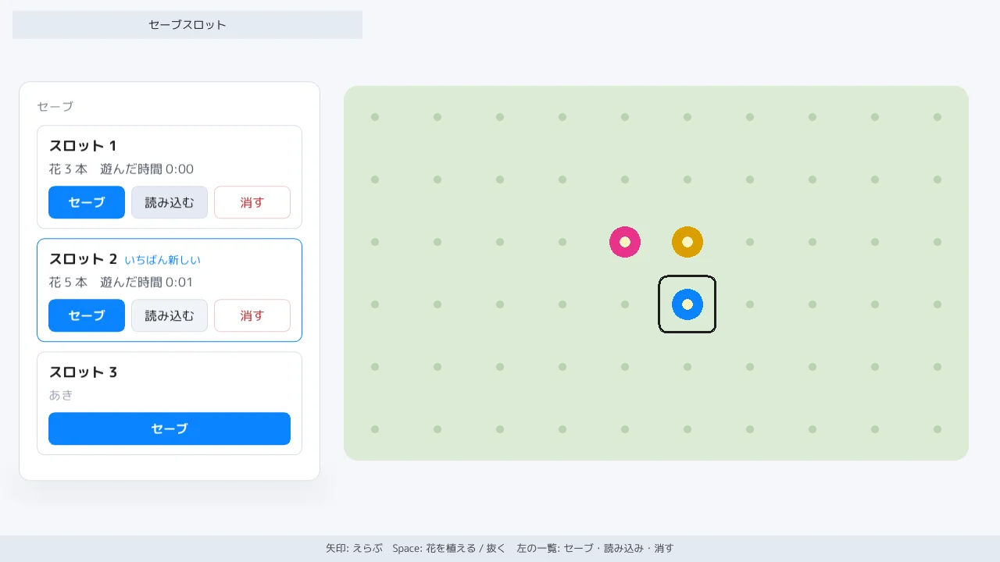
examples/save_slots）。花畑を 3 つのスロットへ分けてセーブする。花畑に花を植え、左の一覧からスロットごとにセーブ・読み込み・消去をします。一覧は hud.listSlots() で頼むと次のフレームに新しい順で届き、C++ がそれを行に組んで UI (RML) へ送ります。セーブには「花 3 本」のような章の名前を付け、一番新しいスロットには印が付きます。
使う道具: hud.saveSlot / hud.load / hud.deleteSlot / hud.listSlots / in.slot / hud.set
examples/save_slots/save_slots_dll.cpp。全 132 行。一覧の UI (examples/save_slots/assets/ui/main.rml) を読みます。リポジトリでビルドすると mitiru_host.exe save_slots/save_slots.dll で起動します。GitHub ↗
// save_slots。セーブを 3 つのスロットに分けて持つ (一覧・章の名前・消す) // 実行すると: 右の花畑に花を植え、左の一覧でスロットにセーブ・読み込み・消去ができる。一覧は host に頼んで次のフレームに届く。 // 関連 API: hud.saveSlot / hud.load / hud.deleteSlot / hud.listSlots / in.slot / in.slotCount (UI は assets/ui/main.rml) #include <cstdint> #include <cstdio> #include <cstdlib> #include <cstring> #include <mitiru.hpp> #include "../common/chapter_hud.hpp" using namespace mitiru; constexpr int kCols = 10, kRows = 6, kSlots = 3; constexpr Color kFlowers[4] = {theme::kPink, theme::kAmber, theme::kBlue, theme::kRed}; constexpr Rect kBed{440.0f, 110.0f, 800.0f, 480.0f}; // 花畑 (左の一覧を避けて右に置く) // UI が送ってくる付随データ (例: {"id":2}) から id を取り出す。届くのは自分の main.rml が送る形だけ int payloadId(const char* json) { const char* p = (json != nullptr) ? std::strstr(json, "\"id\":") : nullptr; return (p != nullptr) ? std::atoi(p + 5) : 0; } struct SaveSlots { std::uint8_t bed[kRows][kCols]{}; // 0 = 何も無い、1..4 = 花の色 std::int32_t cursorX = 4, cursorY = 2; std::int32_t flowers = 0; // 植えた本数 (セーブの章の名前に使う) std::int32_t planted = 0; // 次に植える色を決める通し番号 std::uint8_t listed = 0; // 一覧を一度頼んだか std::uint8_t pad[3]{}; void update(Input in, Hud hud, float) { if (listed == 0) { hud.listSlots(); listed = 1; } // 起動したら一覧を頼む。答えは次のフレームの in.slot(i) if (in.pressed(Key::Left) && cursorX > 0) { --cursorX; } if (in.pressed(Key::Right) && cursorX < kCols - 1) { ++cursorX; } if (in.pressed(Key::Up) && cursorY > 0) { --cursorY; } if (in.pressed(Key::Down) && cursorY < kRows - 1) { ++cursorY; } if (in.pressed(Key::Space)) { togglePlant(); } // 一覧のボタン。スロットの名前は slot1..slot3。セーブと消去のあとは一覧を頼み直す char name[16]; if (in.action("slot.save")) { std::snprintf(name, sizeof name, "slot%d", payloadId(in.actionPayload("slot.save"))); char chapter[32]; std::snprintf(chapter, sizeof chapter, "花 %d 本", flowers); hud.saveSlot(name, chapter); // 章の名前は一覧の chapter に出る hud.listSlots(); } if (in.action("slot.load")) { std::snprintf(name, sizeof name, "slot%d", payloadId(in.actionPayload("slot.load"))); hud.load(name); // 次のフレームから、この struct がセーブした時の中身に戻る } if (in.action("slot.delete")) { std::snprintf(name, sizeof name, "slot%d", payloadId(in.actionPayload("slot.delete"))); hud.deleteSlot(name); hud.listSlots(); } pushSlots(in, hud); } void togglePlant() { std::uint8_t& cell = bed[cursorY][cursorX]; if (cell != 0) { cell = 0; --flowers; return; } cell = static_cast<std::uint8_t>(1 + planted % 4); ++planted; ++flowers; } // host が届けた一覧 (新しい順) から、slot1..slot3 の行を作って UI へ送る static void pushSlots(Input in, Hud hud) { char json[1024]; int n = std::snprintf(json, sizeof json, "["); for (int id = 1; id <= kSlots; ++id) { char name[16]; std::snprintf(name, sizeof name, "slot%d", id); const module::SlotSummary* found = nullptr; int order = -1; for (int i = 0; i < in.slotCount(); ++i) { if (std::strcmp(in.slot(i)->slot, name) == 0) { found = in.slot(i); order = i; } } const int sec = (found != nullptr) ? static_cast<int>(found->playtimeSec) : 0; n += std::snprintf(json + n, sizeof json - static_cast<std::size_t>(n), "%s{\"id\":%d,\"used\":%s,\"newest\":%s,\"broken\":%s,\"chapter\":\"%s\",\"play\":\"%d:%02d\"}", id > 1 ? "," : "", id, found ? "true" : "false", order == 0 ? "true" : "false", (found && found->status == 4) ? "true" : "false", found ? found->chapter : "", sec / 60, sec % 60); } std::snprintf(json + n, sizeof json - static_cast<std::size_t>(n), "]"); hud.set("view.slots", json); } void draw(Screen& s) const { s.fillScreen(theme::kPaper); s.drawRoundedRect(kBed, hex(0xDCEBD5), 18.0f); const float cw = kBed.width() / kCols, ch = kBed.height() / kRows; for (int y = 0; y < kRows; ++y) { for (int x = 0; x < kCols; ++x) { const float cx = kBed.x() + cw * (static_cast<float>(x) + 0.5f); const float cy = kBed.y() + ch * (static_cast<float>(y) + 0.5f); s.fillCircle(cx, cy, 5.0f, hex(0xB9D2AE)); // 植えられる場所 if (bed[y][x] != 0) { s.fillCircle(cx, cy, 20.0f, kFlowers[bed[y][x] - 1]); s.fillCircle(cx, cy, 7.0f, hex(0xFFF4C2)); } if (x == cursorX && y == cursorY) { s.drawRoundedRectFrame(Rect{cx - cw * 0.45f, cy - ch * 0.45f, cw * 0.9f, ch * 0.9f}, theme::kInk, 10.0f, 3.0f); } } } chapterTitle(s, "セーブスロット"); chapterControls(s, "矢印: えらぶ Space: 花を植える / 抜く 左の一覧: セーブ・読み込み・消す"); } }; // 実行: mitiru_host.exe save_slots/save_slots.dll (セーブは作業フォルダの save/slot1.mslot などに書かれる) MITIRU_ASSERT_NO_PADDING(SaveSlots); MITIRU_GAME(SaveSlots);
3D シーン
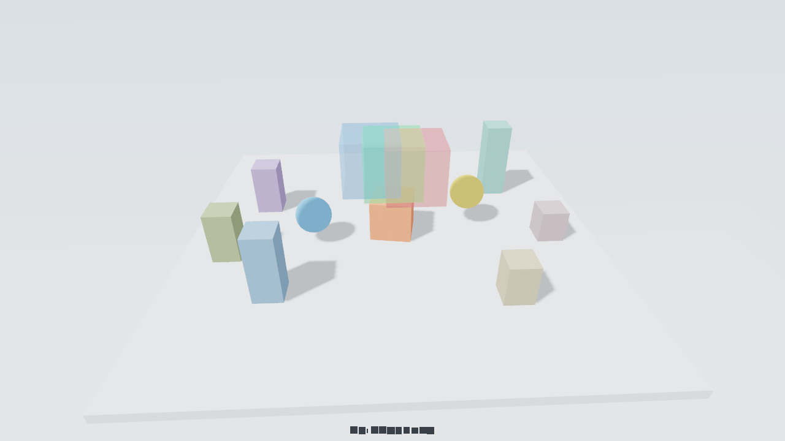
examples/scene3d）。光と影・半透明・skybox。3D も 2D と同じ draw の中で書けます。昼の空（skybox）の下、床の上を矢印キーで動く赤い立方体を、一方向の光と影つきで描きます。半透明の箱は重なっても正しく合成され、手前の不透明物には奥行きに従って隠されます。
使う道具: camera3D / light3D / skybox3D / drawMesh
examples/scene3d/scene3d_dll.cpp。全 91 行。mitiru new で作るプロジェクトの src/main.cpp をこれ 1 つに置き換えれば、そのまま mitiru run で動きます。GitHub ↗
// scene3d。「3D シーンを描く」章 // 3D の描画も、2D とまったく同じ draw(Screen&) の中に書ける。 // ここでは太陽のような一方向の光と影、重なっても正しく見える半透明、空の背景を描く。 // あそびかた: 昼の空の下、床の上を矢印キーで動く赤い立方体。2 つの球が周りを回り、半透明の箱 3 つが重なる。 // この章で使う関数: camera3D (カメラ) / light3D (光) / skybox3D (空) / drawMesh (立体を描く) #include <algorithm> #include <cmath> #include <cstdint> #include <mitiru.hpp> #include <mitiru/module/AutoReflect.hpp> #include "../common/chapter_hud.hpp" // 章ラベル + 操作帯 (全章共通の書式) using namespace mitiru; // 奥行きを感じられるように、散らして立てる柱 (x, z, 高さ, 色)。 struct Pillar { float x, z, h; std::uint32_t col; }; constexpr Pillar kPillars[] = { {-4.2f, -3.0f, 2.8f, 0x4F8F86}, { 4.6f, -1.9f, 1.8f, 0x6F5FA0}, {-3.4f, 3.6f, 1.3f, 0x8C8060}, { 3.7f, 3.2f, 2.2f, 0x4C73A0}, {-5.4f, 0.5f, 1.1f, 0x84707A}, { 5.4f, 1.2f, 1.7f, 0x607048}, }; // 状態は数値だけ。毎回同じ結果になるので、ホットリロードも記録／再生もそのまま使える。 struct Scene3D { float t = 0.0f; // 経過時間 (カメラの周回・立方体の回転・球の動きに使う) float cubeX = 0.0f, cubeZ = 0.0f; // 主役の立方体の位置 void init() { t = 0.0f; cubeX = 0.0f; cubeZ = 0.0f; } void update(Input in, float dt) { t += dt; constexpr float speed = 4.5f, limit = 3.8f; // 移動の速さと、床からはみ出さないための可動範囲 if (in.down(Key::Left)) { cubeX -= speed * dt; } if (in.down(Key::Right)) { cubeX += speed * dt; } if (in.down(Key::Up)) { cubeZ -= speed * dt; } if (in.down(Key::Down)) { cubeZ += speed * dt; } cubeX = std::clamp(cubeX, -limit, limit); cubeZ = std::clamp(cubeZ, -limit, limit); } void draw(Screen& s) const { s.clear(hex(0xEAF1F8)); // 3D が使えない環境 (画面なしの自動テストなど) ではこの色のままになる (白っぽい色) // カメラは床のまわりをゆっくり周回する。光は斜め上から差す昼白色で、影は反対側に落ちる。 const float yaw = t * 0.30f; s.camera3D({std::sin(yaw) * 13.0f, 8.5f, std::cos(yaw) * 13.0f}, {0.0f, 0.4f, 0.0f}, 54.0f); s.light3D({-0.6f, -0.95f, -0.45f}, hex(0xFFFBF2)); s.skybox3D(hex(0x63A5E8), hex(0xEAF3FB)); // 背景の空: 頭上は空色 → 地平線は白 // 床 (14x14 の薄い板)。上面がちょうど y=0 になるよう少し沈めてある。影を受ける面。 s.drawMesh("cube", {0.0f, -0.15f, 0.0f}, {14.0f, 0.3f, 14.0f}, {0, 0, 0}, hex(0xBFC8D4)); for (const Pillar& p : kPillars) { s.drawMesh("cube", {p.x, p.h * 0.5f, p.z}, {0.9f, p.h, 0.9f}, {0, 0, 0}, hex(p.col)); } // 主役の立方体。プレイヤーが動かし、Y 軸まわりに回転し、床に接して立つ。 constexpr float cs = 1.4f; s.drawMesh("cube", {cubeX, cs * 0.5f, cubeZ}, {cs, cs, cs}, {0.0f, t * 60.0f, 0.0f}, hex(0xEA5535)); for (int i = 0; i < 2; ++i) // 立方体を追いかけて周りを回る球 (青・黄) { const float a = t * 1.2f + static_cast<float>(i) * 3.14159265f; const float bob = 0.9f + std::sin(t * 2.0f + static_cast<float>(i)) * 0.35f; s.drawMesh("sphere", {cubeX + std::cos(a) * 2.7f, bob, cubeZ + std::sin(a) * 2.7f}, {1.2f, 1.2f, 1.2f}, {0, 0, 0}, (i == 0) ? hex(0x4C95F2) : hex(0xF5C842)); } // 半透明の箱 3 つ。透けている面は、重なっても描いた順番に関係なく正しい色に合成される // (手前にある不透明な床や柱によって、奥行きに従って正しく隠される)。 s.drawMesh("cube", {-0.7f, 2.6f, 0.3f}, {1.9f, 1.9f, 1.9f}, {0, 0, 0}, hexa(0xE03B3B82)); s.drawMesh("cube", { 0.0f, 2.6f, 0.0f}, {1.9f, 1.9f, 1.9f}, {0, 0, 0}, hexa(0x3BE05B82)); s.drawMesh("cube", { 0.7f, 2.6f, -0.3f}, {1.9f, 1.9f, 1.9f}, {0, 0, 0}, hexa(0x3B7BE082)); // 2D の HUD は 3D の絵の上に重ねて描かれる。 chapterTitle(s, "3D Scene"); chapterControls(s, "矢印: 立方体をうごかす"); } }; // 実行: mitiru_host.exe scene3d/scene3d.dll // inspector に映す状態を自動反射する。aggregate 型なので列挙不要 (D12)。 MITIRU_REFLECT_AUTO(Scene3D); MITIRU_ASSERT_NO_PADDING(Scene3D); MITIRU_GAME(Scene3D);
3D モデル

examples/model3d）。26 万ポリゴンの宮殿を一人称で歩き回る。普通のモデルファイル (glTF) を drawModel 1 行でそのまま置き、その中を一人称で歩きます。舞台は実在の標準シーン Crytek Sponza (26 万ポリゴン、glTF で同梱)。初回の起動だけ隣に変換キャッシュを作り、以後はそれを読みます。Blender 等から書き出した .gltf / .glb / .obj がそのまま使えます。マウスで見回し (カーソルは hud.lockMouse でロック)、WASD で歩き、Shift で走ります。詳細度 (LOD) は距離から GPU 上で自動で決まります。
使う道具: drawModel / camera3D / hud.lockMouse / in.mouseDeltaX / in.move
examples/model3d/model3d_dll.cpp。全 83 行。mitiru new で作るプロジェクトの src/main.cpp をこれ 1 つに置き換えれば、そのまま mitiru run で動きます。GitHub ↗
// model3d。大きな 3D モデル (glTF) の中を歩く // 実行すると、26 万ポリゴンの宮殿 (Sponza) を一人称で歩き回れる。マウスで見回し、WASD で移動する // 関連 API: drawModel / camera3D / hud.lockMouse / in.mouseDeltaX / skybox3D #include <cmath> #include <mitiru.hpp> #include <mitiru/module/AutoReflect.hpp> #include "../common/chapter_hud.hpp" using namespace mitiru; // 宮殿は Crytek Sponza (CC BY 3.0、assets/sponza/CREDITS.md)。drawModel の // scale 0.01 でメートル単位の世界に配置し、目の高さ 1.7m で歩く。 struct Model3D { float px = -14.0f, py = 1.7f, pz = 0.0f; // 目の位置 (m) float yawDeg = 90.0f; // 視線の左右 (90 = +X の廊下方向) float pitchDeg = 0.0f; // 視線の上下 void init() { px = -14.0f; py = 1.7f; pz = 0.0f; yawDeg = 90.0f; pitchDeg = 0.0f; } void update(Input in, Hud hud, float dt) { if (in.pressed(Key::Escape)) { hud.quit(); } // Esc で終わる hud.lockMouse(); // 毎フレーム宣言でカーソルをロック (FPS 視線) // マウスで見回す。上下は真上・真下の手前で止める constexpr float sens = 0.15f; // 1px あたりの回転角 (度) yawDeg -= in.mouseDeltaX() * sens; pitchDeg -= in.mouseDeltaY() * sens; if (pitchDeg > 89.0f) { pitchDeg = 89.0f; } if (pitchDeg < -89.0f) { pitchDeg = -89.0f; } // WASD で視線の向きへ歩く (in.move() が WASD/矢印/スティックを合成する) constexpr float kDeg = 3.14159265f / 180.0f; const float fx = std::sin(yawDeg * kDeg), fz = std::cos(yawDeg * kDeg); const float rx = -fz, rz = fx; // 視線の右手方向 const Stick m = in.move(); const float speed = in.down(Key::Shift) ? 6.0f : 3.0f; // m/s (Shift で走る) px += (fx * -m.y + rx * m.x) * speed * dt; pz += (fz * -m.y + rz * m.x) * speed * dt; // 壁の外へ出ない範囲に収める (この章には当たり判定がない) if (px < -17.5f) { px = -17.5f; } if (px > 16.5f) { px = 16.5f; } if (pz < -10.0f) { pz = -10.0f; } if (pz > 9.5f) { pz = 9.5f; } } void draw(Screen& s) const { s.clear(hex(0xDCE9F5)); // 3D が使えない環境 (画面なしの自動テストなど) ではこの色のまま // 視線の向きを、目の位置 + 単位ベクトルとして camera3D に渡す constexpr float kDeg = 3.14159265f / 180.0f; const float cp = std::cos(pitchDeg * kDeg); const float dx = std::sin(yawDeg * kDeg) * cp; const float dy = std::sin(pitchDeg * kDeg); const float dz = std::cos(yawDeg * kDeg) * cp; s.camera3D({px, py, pz}, {px + dx, py + dy, pz + dz}, 70.0f); s.light3D({-0.4f, -0.85f, -0.3f}, hex(0xFFF4E0)); s.skybox3D(hex(0x6FA8E4), hex(0xF2F6FA)); // 26 万ポリゴンの宮殿 (glTF) を、そのまま 1 行で描画する。初回だけ隣に変換キャッシュを // 作り、以後の起動ではそれを読む。詳細度 (LOD) は距離に応じて自動で決まる s.drawModel("model3d/assets/sponza/sponza.gltf", {0.0f, 0.0f, 0.0f}, 0.0f, 0.01f); chapterTitle(s, "3D Model"); chapterControls(s, "WASD: あるく マウス: みまわす Shift: はしる Esc: おわる"); } }; // 実行: mitiru_host.exe model3d/model3d.dll // inspector に映す状態を自動反射する。aggregate 型なので列挙不要 (D12)。 MITIRU_REFLECT_AUTO(Model3D); MITIRU_ASSERT_NO_PADDING(Model3D); MITIRU_GAME(Model3D);
3D アクション

examples/action3d）。歩く、跳ぶ、壁の手前に寄るカメラ。箱と階段の小さな庭を、箱のキャラクターが歩きます。階段を上り、上下する桃色の足場に乗れて、跳ぶと光の筋が残ります。着地すると土ぼこりが舞って床に跡が残り、高い所から落ちると画面が一瞬ぶれます。跡と土ぼこりは、着地した時刻からの経過秒で毎フレーム描くので、巻き戻すとその時刻の姿に戻ります。カメラは奥の壁や柱に当たるとその手前へ寄り、壁が無くなると少し待ってから戻ります。当たり判定、キャラクター、カメラは mitiru::action の部品です。ゲームの DLL の中で解くので、問い合わせの答えは同じフレームに返ります。
使う道具: CollisionLevelBuilder / stepCharacter / updateCameraRig / InputBuffer / camera3D / pointLight3D / drawTrail / decals3D / particles3D / hitFeel3D
examples/action3d/action3d_dll.cpp。全 165 行。mitiru new で作るプロジェクトの src/main.cpp をこれ 1 つに置き換えれば、そのまま mitiru run で動きます。GitHub ↗
// action3d。「3D アクションの部品」の見本 (同じフレームで答える当たり判定、歩くキャラ、壁の手前に寄るカメラ) // 当たり判定はこの DLL の中で解くので、問い合わせの答えは同じフレームに返る (host に頼むと 1 フレーム遅れる)。 // ステージの箱は、描画と当たり判定で同じ表 kBlocks を使う。 // あそびかた: 箱と階段の小さな庭を、橙の箱のキャラが歩く。階段を上り、上下する桃色の足場に乗れる。 // カメラは奥の壁や柱の手前へ寄り、壁が無くなると少し待ってから戻る。跳ぶと光の筋が残り、足場は灯りを持つ。 // 着地すると土ぼこりが舞い、床に跡が残る。高い所から落ちると画面が一瞬ぶれる。 // この章で使う関数: CollisionLevelBuilder / CollisionWorld / stepCharacter / updateCameraRig / InputBuffer / // camera3D (上向き・近い面・遠い面) / pointLight3D / drawTrail / decals3D / particles3D / hitFeel3D #include <algorithm> #include <cmath> #include <cstdint> #include <mitiru.hpp> #include <mitiru/action/CameraRig.hpp> #include <mitiru/action/CharacterController.hpp> #include <mitiru/action/InputBuffer.hpp> #include "../common/chapter_hud.hpp" using namespace mitiru; namespace act = mitiru::action; struct Block { act::Vec3 lo, hi; std::uint32_t col; }; constexpr Block kBlocks[] = { {{-8, -1, -8}, {8, 0, 8}, 0xC9D1DC}, // 床 {{-8, 0, -8}, {8, 3, -7.5f}, 0x8C9BB0}, // 奥の壁 {{1.0f, 0, -1.5f}, {1.4f, 0.25f, 1.5f}, 0xB7A27F}, {{1.4f, 0, -1.5f}, {1.8f, 0.5f, 1.5f}, 0xB7A27F}, {{1.8f, 0, -1.5f}, {2.2f, 0.75f, 1.5f}, 0xB7A27F}, {{2.2f, 0, -1.5f}, {2.6f, 1.0f, 1.5f}, 0xB7A27F}, {{2.6f, 0, -1.5f}, {6.0f, 1.25f, 1.5f}, 0x9C8A6A}, // 階段の上の台 {{-8, 0, -1.5f}, {-5.5f, 2.2f, 1.5f}, 0x6F8F7A}, // 足場で上る高い台 {{-1.6f, 0, -6.4f}, {-0.8f, 3, -5.6f}, 0x4C73A0}, // 柱 }; // 作ったら変えない地形。DLL を読み込むたび (ホットリロードを含む) に作り直す const act::CollisionLevel kLevel = [] { act::CollisionLevelBuilder b; for (const Block& k : kBlocks) { b.addBox(k.lo, k.hi, 0); } return b.build(); }(); constexpr act::CharacterConfig kHero{}; constexpr act::CameraRigConfig kCam{}; constexpr act::ActionWindows kWindows{{6}}; // 行動 0 (跳ぶ) は 6 tick まで先に押しておける constexpr float kRunSpeed = 4.5f, kJumpSpeed = 8.0f; constexpr int kTrailMax = 16; // 光の筋に残す点の数 (1 フレーム 1 点) // 状態は数値だけ (まるごとコピーできる形)。巻き戻しと記録／再生がそのまま効く struct Action3D { act::CharacterState hero{}; act::CameraRigState cam{}; act::CameraView view{}; act::MovingBody lift{}; act::InputBuffer<8> buffer{}; act::Vec3 facing{0, 0, 1}; float t = 0.0f; std::uint32_t frame = 0; act::Vec3 trail[kTrailMax]{}; // 跳んでいる間の通り道 (新しい順)。着地すると古い方から消える std::uint32_t trailLen = 0; act::Vec3 landAt{}; // 最後に着地した所と時刻、落ちてきた速さ。跡と土ぼこりはここから毎フレーム描く std::uint32_t landFrame = 0; float landSpeed = 0.0f; void init() { hero.position = {0.0f, kHero.skinWidth, -3.0f}; hero.grounded = 1; lift.halfExtents = {1.0f, 0.15f, 1.0f}; lift.pose.position = lift.previousPose.position = {-4.4f, 0.15f, 0.0f}; } void update(Input in, float dt) { t += dt; ++frame; lift.previousPose = lift.pose; // 足場は上下する。乗っているキャラは足場が動いた分だけ運ばれる lift.pose.position = {-4.4f, 0.15f + 1.05f * (1.0f - std::cos(t * 0.9f)), 0.0f}; const act::MovingBody bodies[] = {lift}; const act::CollisionWorld world(&kLevel, bodies); const Stick m = in.move(); // カメラから見た前後左右へ歩く (move の y は下が正) const act::Vec3 fwd = act::cameraRigForward(cam.yaw, 0.0f), right = act::cameraRigRight(fwd); const act::Vec3 run = (right * m.x - fwd * m.y) * kRunSpeed; if (act::lengthSq(run) > 0.01f) { facing = act::normalizeOr(run, facing); } if (in.pressed(Key::Space)) { buffer.press(0, frame); } const bool jump = hero.grounded != 0 && buffer.consume(0, frame, kWindows); const float fall = -hero.velocity.y; act::stepCharacter(hero, kHero, world, {run, jump ? kJumpSpeed : 0.0f}, dt); if ((hero.events & act::charevent::kLanded) != 0 && fall > 2.0f) { landAt = hero.position; landFrame = frame; landSpeed = fall; } updateTrail(); act::CameraRigInput ci; ci.follow = hero.position; ci.orbitX = (in.down(Key::E) ? 1.0f : 0.0f) - (in.down(Key::Q) ? 1.0f : 0.0f) + in.rightStick().x; ci.orbitY = in.rightStick().y; view = act::updateCameraRig(cam, kCam, ci, world, dt); } void updateTrail() { if (hero.grounded != 0) { trailLen = (trailLen > 0) ? trailLen - 1 : 0; return; } for (int i = kTrailMax - 1; i > 0; --i) { trail[i] = trail[i - 1]; } trail[0] = hero.position + act::Vec3{0, 0.8f, 0} - facing * 0.45f; // 背中のすぐ後ろ trailLen = (trailLen < kTrailMax) ? trailLen + 1 : kTrailMax; } void drawTrail(Screen& s) const { render::TrailPointPod pts[kTrailMax]; for (std::uint32_t i = 0; i < trailLen; ++i) { const act::Vec3 p = trail[i]; pts[i] = {{p.x, p.y, p.z}, 0.35f, {1.0f, 0.55f, 0.15f, 1.0f}, static_cast<float>(i) / kTrailMax}; } render::TrailStylePod style; style.blend = 1; // 明るい空の前でも見えるよう、足し合わせでなく色を重ねる s.drawTrail(pts, trailLen, style); // 2 点より少なければ何も描かない } // 跡・土ぼこり・ぶれは描くだけのもの。着地の時刻からの経過秒で毎フレーム渡すので、巻き戻すとその時刻の姿に戻る void drawLanding(Screen& s) const { if (landFrame == 0) { return; } const float age = static_cast<float>(frame - landFrame) / 60.0f; render::DecalDesc mark = render::decalOnSurface(landAt, {0, 1, 0}, 1.2f); mark.color[0] = mark.color[1] = mark.color[2] = 0.35f; mark.color[3] = 0.8f; mark.age = age; mark.lifetime = 6.0f; mark.fadeOut = 2.0f; s.decals3D(&mark, 1); if (age > 1.0f) { return; } render::ParticleEmitterDesc dust; dust.key = 1; dust.seed = landFrame; dust.age = age; dust.position[0] = landAt.x; dust.position[1] = landAt.y + 0.1f; dust.position[2] = landAt.z; dust.burst = 64; dust.spreadDeg = 85.0f; dust.speedMin = 1.5f; dust.speedMax = 3.5f; dust.lifeMin = 0.4f; dust.lifeMax = 0.9f; dust.gravity[1] = -3.0f; dust.drag = 2.5f; dust.size[0] = 0.2f; dust.size[1] = 0.5f; dust.size[2] = 0.7f; for (auto& c : dust.color) { c[0] = 0.96f; c[1] = 0.93f; c[2] = 0.86f; c[3] = 0.9f; } dust.color[2][3] = 0.0f; dust.blend = render::ParticleBlend::Alpha; s.particles3D(&dust, 1); render::HitFeel feel; // 跳んだ高さより高い所から落ちた時だけ。速いほど強く、0.1 秒で消える feel.radialBlur = std::fmax(0.0f, 1.0f - age / 0.1f) * std::clamp((landSpeed - kJumpSpeed - 0.5f) / 8.0f, 0.0f, 0.4f); s.hitFeel3D(feel); } void draw(Screen& s) const { s.clear(hex(0xEAF1F8)); s.camera3D(view.eye, view.target, view.up, view.fovDeg, 0.1f, 80.0f); // 庭は 20 m 四方なので遠い面は近くてよい s.light3D({-0.5f, -1.0f, -0.35f}, hex(0xFFFBF2)); s.skybox3D(hex(0x63A5E8), hex(0xEAF3FB)); for (const Block& k : kBlocks) { s.drawMesh("cube", (k.lo + k.hi) * 0.5f, k.hi - k.lo, {0, 0, 0}, hex(k.col)); } s.drawMesh("cube", lift.pose.position, lift.halfExtents * 2.0f, {0, 0, 0}, hex(0xE8338A)); s.pointLight3D(lift.pose.position + act::Vec3{0, 0.6f, 0}, 3.5f, hex(0xFF5FA8), 3.0f); const act::Vec3 p = hero.position; s.drawMesh("cube", p + act::Vec3{0, 0.8f, 0}, {0.6f, 1.6f, 0.6f}, {0, 0, 0}, hex(0xFF9500)); s.drawMesh("cube", p + act::Vec3{0, 1.25f, 0} + facing * 0.32f, {0.2f, 0.2f, 0.2f}, {0, 0, 0}, hex(0x1D1D1F)); drawTrail(s); drawLanding(s); chapterTitle(s, "3D アクション"); chapterControls(s, "矢印: あるく Space: 跳ぶ Q / E: カメラを回す"); } }; // 実行: mitiru_host.exe action3d/action3d.dll MITIRU_ASSERT_NO_PADDING(Action3D); MITIRU_GAME(Action3D);
別のカメラの絵
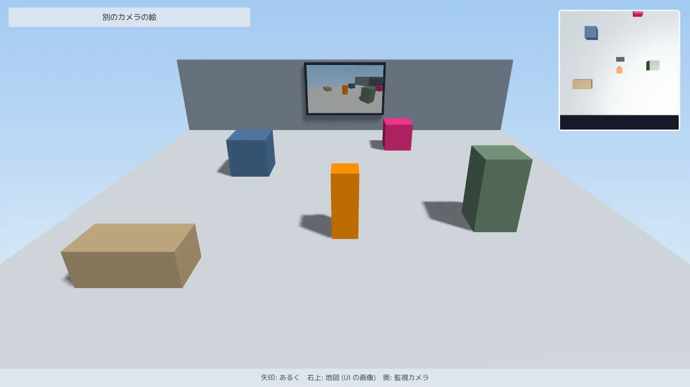
examples/views3d）。右上の地図と、壁のモニターに映る監視カメラ。部屋の中を箱のキャラクターが歩きます。右上の地図は真上から、奥の壁のモニターは部屋の隅の監視カメラから、同じ部屋を同じフレームの中で描いたものです。view3D で番号を作り、beginView3D と endView3D の間に描いた物がその番号の絵になります。地図は UI の <img src="view3d:0"/> で貼り、モニターには drawMeshWithView3D で映します。
使う道具: view3D / beginView3D / endView3D / drawMeshWithView3D / compositeView3D
examples/views3d/views3d_dll.cpp。全 87 行。地図を貼る UI (examples/views3d/assets/ui/main.rml) を読みます。リポジトリでビルドすると mitiru_host.exe views3d/views3d.dll で起動します。GitHub ↗
// views3d。「別のカメラの絵」の見本 (副ビュー: 小さな地図と監視カメラのモニター) // view3D で番号 (slot) を作り、beginView3D と endView3D の間に描いた物がその slot の絵になる。主画面の絵は変わらない。 // 地図 (slot 0) は UI の assets/ui/main.rml が <img src="view3d:0"/> で右上に貼り、監視カメラ (slot 1) の絵は // 部屋の奥のモニター (drawMeshWithView3D) に映す。同じ作りを毎フレーム渡しても作り直さない。 // あそびかた: 矢印で橙の箱が歩く。右上の地図は真上から、奥のモニターは部屋の隅のカメラからキャラを追う。 // この章で使う関数: view3D / beginView3D / endView3D / drawMeshWithView3D / RML の <img src="view3d:N"/> #include <algorithm> #include <cmath> #include <mitiru.hpp> #include "../common/chapter_hud.hpp" using namespace mitiru; struct Box { Vec3 center, size; std::uint32_t col; }; constexpr Box kRoom[] = { {{0, -0.1f, 0}, {14, 0.2f, 14}, 0xC9D1DC}, // 床 {{0, 1.5f, -7}, {14, 3, 0.2f}, 0x8C9BB0}, // 奥の壁 {{-3, 0.6f, -2}, {1.2f, 1.2f, 1.2f}, 0x4C73A0}, {{3.5f, 0.9f, 1.5f}, {1, 1.8f, 1}, 0x6F8F7A}, {{-4, 0.4f, 3.5f}, {2, 0.8f, 1}, 0xB7A27F}, {{2, 0.5f, -4.5f}, {1, 1, 1}, 0xE8338A}, }; constexpr Vec3 kMonitor{0.0f, 1.8f, -6.85f}; // 奥の壁に掛けたモニター constexpr Vec3 kCctv{6.5f, 3.0f, 6.5f}; // 監視カメラは部屋の右手前の隅 struct Views3D { Vec3 hero{0.0f, 0.0f, 2.0f}; Vec3 facing{0.0f, 0.0f, -1.0f}; void update(Input in, float dt) { const Stick m = in.move(); // move の y は下が正 (画面の手前へ) const Vec3 step{m.x, 0.0f, m.y}; if (step.x * step.x + step.z * step.z > 0.01f) { facing = step.normalized(); } hero.x = std::clamp(hero.x + step.x * 4.0f * dt, -6.5f, 6.5f); hero.z = std::clamp(hero.z + step.z * 4.0f * dt, -6.0f, 6.5f); } // 主画面と 2 つの副ビューが同じ部屋を描く void drawRoom(Screen& s) const { for (const Box& b : kRoom) { s.drawMesh("cube", b.center, b.size, {0, 0, 0}, hex(b.col)); } s.drawMesh("cube", hero + Vec3{0, 0.8f, 0}, {0.6f, 1.6f, 0.6f}, {0, 0, 0}, hex(0xFF9500)); s.drawMesh("cube", hero + Vec3{0, 1.25f, 0} + facing * 0.32f, {0.2f, 0.2f, 0.2f}, {0, 0, 0}, hex(0x1D1D1F)); } void drawViews(Screen& s) const { render::View3DPod map; // 真上からの地図。空も影も要らない map.width = map.height = 256; map.flags = 0; map.clear[0] = 0.08f; map.clear[1] = 0.10f; map.clear[2] = 0.16f; s.view3D(0, map); if (s.beginView3D(0, hero + Vec3{0, 16, 0}, hero, {0, 0, -1}, 45.0f, 1.0f, 60.0f)) { drawRoom(s); s.endView3D(); } render::View3DPod cctv; // 監視カメラ。影を落とし、モニターの縦横比 (4:3) で描く cctv.width = 320; cctv.height = 240; s.view3D(1, cctv); if (s.beginView3D(1, kCctv, hero + Vec3{0, 0.8f, 0}, {0, 1, 0}, 55.0f)) { drawRoom(s); s.endView3D(); } } void draw(Screen& s) const { s.clear(hex(0xEAF1F8)); s.camera3D(hero + Vec3{0, 4.5f, 7.5f}, hero + Vec3{0, 1, 0}, 55.0f); s.light3D({-0.5f, -1.0f, -0.35f}, hex(0xFFFBF2)); s.skybox3D(hex(0x63A5E8), hex(0xEAF3FB)); drawViews(s); // 副ビューは主画面と同じフレームの中で描く drawRoom(s); s.drawMesh("cube", kMonitor, {3.4f, 2.2f, 0.12f}, {0, 0, 0}, hex(0x2A2F3A)); // 枠 s.drawMeshWithView3D("cube", kMonitor + Vec3{0, 0, 0.04f}, {3.2f, 2.0f, 0.06f}, {0, 0, 0}, hex(0xFFFFFF), 1); chapterTitle(s, "別のカメラの絵"); chapterControls(s, "矢印: あるく 右上: 地図 (UI の画像) 奥: 監視カメラ"); } }; // 実行: mitiru_host.exe views3d/views3d.dll MITIRU_ASSERT_NO_PADDING(Views3D); MITIRU_GAME(Views3D);
Blender のステージ
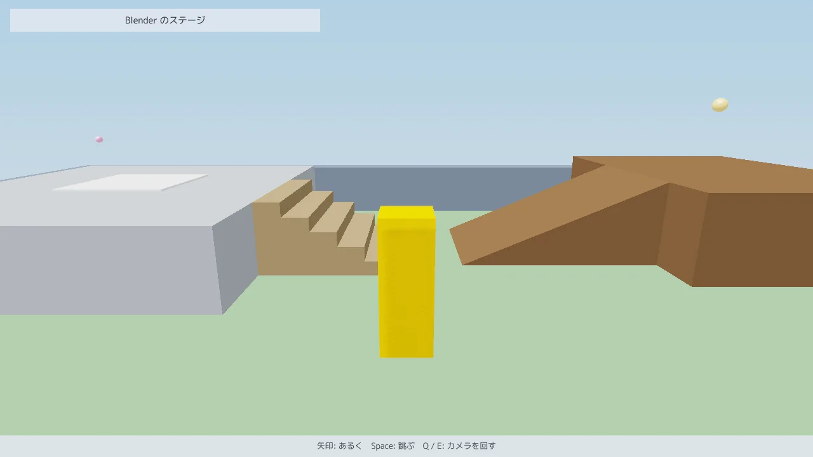
examples/level3d）。Blender で作った中庭を、そのまま歩く。Blender で組んだ中庭 (.glb) を読み込んで歩きます。見た目は drawModel がそのファイルを描き、当たり判定の面は buildLevelCollision の 1 行で地形になります。出発点、奥の台のゴールの箱、灯りは Blender で置いた印で、色や届く距離はカスタムプロパティから読みます。ゴールに入ると桃色の灯りが強くなります。--watch-assets 付きで起動すると、Blender で書き出し直すたびに地形と印を読み直します。
使う道具: LevelFile / buildLevelCollision / find / forEachOfType / drawModel / stepCharacter / updateCameraRig
examples/level3d/level3d_dll.cpp。全 134 行。Blender で作ったステージ (examples/level3d/assets/stage.glb、作り方は tools/make_stage.py) を読みます。リポジトリでビルドすると mitiru_host.exe level3d/level3d.dll で起動します。GitHub ↗
// level3d。Blender で作ったステージを読み込み、そのまま歩く (見た目・当たり判定・置いた印が 1 つの .glb から来る) // 実行すると: 石の中庭を橙の箱のキャラが歩く。段と坂で台へ上がれ、奥の台の印に入ると桃色の灯りが強くなる。 // 関連 API: LevelFile / buildLevelCollision / find / forEachOfType / drawModel / stepCharacter / updateCameraRig #include <cmath> #include <vector> #include <mitiru.hpp> #include <mitiru/action/CameraRig.hpp> #include <mitiru/action/CharacterController.hpp> #include <mitiru/action/CollisionLevelLoad.hpp> #include <mitiru/level/LevelLoader.hpp> #include "../common/chapter_hud.hpp" using namespace mitiru; namespace act = mitiru::action; namespace lv = mitiru::level; // ステージは tools/make_stage.py が Blender で作った .glb。見た目は drawModel がこのファイルを描き、 // 当たり判定の面と置いた印 (出発点、ゴールの箱、灯り) はこの DLL が同じファイルから読む。 // 中身はファイルだけで決まるので、ゲームの状態ではなく DLL の static に置く constexpr const char* kStagePath = "level3d/assets/stage.glb"; lv::LevelFile g_stage(kStagePath); act::CollisionLevel g_level = act::buildLevelCollision(g_stage.get()); // Blender の面がそのまま地形になる act::Vec3 at(const float (&p)[3]) { return {p[0], p[1], p[2]}; } // 型 "lamp" の印。色・届く距離・ゴールの灯りかどうかは Blender のカスタムプロパティに書いてある struct Lamp { act::Vec3 pos; Color color; float range; bool goal; }; std::vector<Lamp> readLamps(const lv::LevelData& level) { std::vector<Lamp> lamps; level.forEachOfType("lamp", [&](const lv::Entity& e, std::size_t) { const lv::Property* c = level.property(e, "color"); const Color color = (c != nullptr) ? Color{c->value[0], c->value[1], c->value[2], 1.0f} : hex(0xFFFFFF); lamps.push_back({at(e.position), color, level.number(e, "range", 4.0f), level.number(e, "goal") != 0.0f}); }); return lamps; } std::vector<Lamp> g_lamps = readLamps(g_stage.get()); constexpr act::CharacterConfig kHero{}; constexpr act::CameraRigConfig kCam{}; constexpr float kRunSpeed = 4.5f, kJumpSpeed = 8.0f; // 状態は数値だけ (まるごとコピーできる形)。巻き戻しと記録／再生がそのまま効く struct Level3D { act::CharacterState hero{}; act::CameraRigState cam{}; act::CameraView view{}; act::Vec3 facing{0, 0, 1}; float goalGlow = 0.0f; // ゴールの灯りの強さ 0..1。印の箱に入ると上がる void init() { const lv::Entity* spawn = g_stage.get().find("PlayerSpawn"); // Blender で置いた出発点 hero.position = (spawn != nullptr) ? at(spawn->position) : act::Vec3{0, 0, 0}; hero.position.y += kHero.skinWidth; hero.grounded = 1; } void update(Input in, float dt) { // --watch-assets で起動していれば、Blender で書き出し直すたびに地形と印を読み直す if (g_stage.reloadIf(in.actionPayload("asset.reloaded"))) { g_level = act::buildLevelCollision(g_stage.get()); g_lamps = readLamps(g_stage.get()); } const act::CollisionWorld world(&g_level); const Stick m = in.move(); // カメラから見た前後左右へ歩く (move の y は下が正) const act::Vec3 fwd = act::cameraRigForward(cam.yaw, 0.0f), right = act::cameraRigRight(fwd); const act::Vec3 run = (right * m.x - fwd * m.y) * kRunSpeed; if (act::lengthSq(run) > 0.01f) { facing = act::normalizeOr(run, facing); } const bool jump = hero.grounded != 0 && in.pressed(Key::Space); act::stepCharacter(hero, kHero, world, {run, jump ? kJumpSpeed : 0.0f}, dt); const float target = inGoal() ? 1.0f : 0.0f; // 灯りは 0.5 秒ほどで点き、離れると消える goalGlow += (target - goalGlow) * ((dt * 6.0f > 1.0f) ? 1.0f : dt * 6.0f); act::CameraRigInput ci; ci.follow = hero.position; ci.orbitX = (in.down(Key::E) ? 1.0f : 0.0f) - (in.down(Key::Q) ? 1.0f : 0.0f) + in.rightStick().x; ci.orbitY = in.rightStick().y; view = act::updateCameraRig(cam, kCam, ci, world, dt); } // Blender の trigger の印は、中心 (position) と箱の半分の大きさ (halfExtents) を持つ bool inGoal() const { const lv::Entity* goal = g_stage.get().find("Goal"); if (goal == nullptr) { return false; } const act::Vec3 d = hero.position - at(goal->position); return std::fabs(d.x) <= goal->halfExtents[0] && std::fabs(d.y) <= goal->halfExtents[1] && std::fabs(d.z) <= goal->halfExtents[2]; } // ゴールの箱の底に薄い板を敷いて場所を見せる。入っている間は桃色に寄る void drawGoal(Screen& s) const { const lv::Entity* goal = g_stage.get().find("Goal"); if (goal == nullptr) { return; } const act::Vec3 c = at(goal->position), h = at(goal->halfExtents); const Color pad = Color{0.85f, 0.87f, 0.90f, 1.0f}.lerp(hex(0xE8338A), goalGlow); s.drawMesh("cube", {c.x, c.y - h.y + 0.02f, c.z}, {h.x * 2.0f, 0.04f, h.z * 2.0f}, {0, 0, 0}, pad); } void draw(Screen& s) const { s.clear(hex(0xEAF1F8)); s.camera3D(view.eye, view.target, view.up, view.fovDeg, 0.1f, 60.0f); s.light3D({-0.5f, -1.0f, 0.35f}, hex(0xFFFBF2)); s.skybox3D(hex(0x63A5E8), hex(0xEAF3FB)); s.drawModel(kStagePath, {0.0f, 0.0f, 0.0f}); // ステージの見た目 (当たり判定だけの面と印は描かれない) for (const Lamp& l : g_lamps) { const float power = l.goal ? 0.5f + 3.5f * goalGlow : 2.0f; // ゴールの灯りは入るまで弱い const float size = 0.12f + 0.08f * power; s.drawMesh("sphere", l.pos, {size, size, size}, {0, 0, 0}, l.color); s.pointLight3D(l.pos, l.range, l.color, power); } drawGoal(s); const act::Vec3 p = hero.position; s.drawMesh("cube", p + act::Vec3{0, 0.8f, 0}, {0.6f, 1.6f, 0.6f}, {0, 0, 0}, hex(0xFF9500)); s.drawMesh("cube", p + act::Vec3{0, 1.25f, 0} + facing * 0.32f, {0.2f, 0.2f, 0.2f}, {0, 0, 0}, hex(0x1D1D1F)); chapterTitle(s, "Blender のステージ"); chapterControls(s, "矢印: あるく Space: 跳ぶ Q / E: カメラを回す"); } }; // 実行: mitiru_host.exe level3d/level3d.dll (--watch-assets level3d/assets を付けると書き出し直しを読む) MITIRU_ASSERT_NO_PADDING(Level3D); MITIRU_GAME(Level3D);
3D キャラクター

examples/anim3d）。待機と歩きを混ぜ、頭で光の玉を追う。草原のキツネを WASD で歩かせます。待機と歩きの 2 つの動きを重みで混ぜるので、歩き出しと止まりがなめらかにつながります。頭は、まわりを回る光の玉を目で追います (IK)。姿勢は「どの動きを何秒の位置で、どれだけ混ぜるか」の数字だけで決まるので、ゲームが当たり判定に使う骨と、画面に描く骨が一致します。
使う道具: drawModelPose / AnimPoseParams / AnimLayer::clipAt / AnimIkRequest::aim / restLocalAxis
examples/anim3d/anim3d_dll.cpp。全 132 行。キツネのモデル (examples/anim3d/assets/) を読みます。リポジトリでビルドすると mitiru_host.exe anim3d/anim3d.dll で起動します。GitHub ↗
// anim3d。キャラクターを歩かせる (骨格アニメーション) // 実行すると、草原にキツネが立つ。WASD で歩かせると、待機と歩きが滑らかに混ざる。 // キツネの頭は、まわりを飛ぶ光の玉をいつも目で追う (IK) // 関連 API: drawModelPose / AnimPoseParams / AnimIkRequest / camera3D / light3D / skybox3D #include <cmath> #include <mitiru.hpp> #include <mitiru/animation/AnimRuntime.hpp> #include <mitiru/module/AutoReflect.hpp> #include "../common/chapter_hud.hpp" using namespace mitiru; namespace anim = mitiru::animation; // キツネは Khronos サンプルの Fox (assets/fox/CREDITS.md、顔は +z 向き)。骨格とクリップは描画と同じファイルから // この DLL でも読む。姿勢は「どのクリップを何秒で、どれだけ混ぜるか」の数字だけで決まり、host も同じ計算で描く constexpr const char* kFoxPath = "anim3d/assets/fox/fox.glb"; const anim::AnimAsset kFox = anim::loadAnimAssetFile(kFoxPath).value_or(anim::AnimAsset{}); const int kSurvey = kFox.findClip("Survey"); // 待機 const int kWalk = kFox.findClip("Walk"); const int kHead = kFox.findNode("b_Head_05"); // 頭の骨の「前」がどの軸かは骨ごとに違う。レスト姿勢で体の前 (+z) を向いている軸を、読み込みの時に求めておく const sgc::Vec3f kHeadForward = anim::restLocalAxis(kFox, kHead, {0.0f, 0.0f, 1.0f}); struct Anim3D { float px = 0.0f, pz = 0.0f; // キツネの位置 (m) float yawDeg = 180.0f; // 体の向き float animT = 0.0f; // アニメ時間 (秒)。自分で t += dt する float walkMix = 0.0f; // 0 = 待機だけ、1 = 歩きだけ float camX = 0.0f, camZ = 0.0f; // カメラの注視点 (少し遅れて追う) void init() { *this = Anim3D{}; } void update(Input in, Hud hud, float dt) { if (in.pressed(Key::Escape)) { hud.quit(); } // Esc で終わる // WASD (in.move() が WASD/矢印/スティックを合成)。カメラが斜め上から // 見るため、入力の上下左右を画面の向きに合わせて世界の軸へ 45° 回す const Stick m = in.move(); const bool moving = (m.x * m.x + m.y * m.y) > 0.01f; if (moving) { constexpr float k = 0.70710678f; const float vx = (m.x + m.y) * k; const float vz = (-m.x + m.y) * k; constexpr float speed = 1.4f; // m/s (Walk クリップの歩幅に合わせた速さ) px += vx * speed * dt; pz += vz * speed * dt; // 進む方向へ体を回す。一瞬で向きを変えず、旋回は 1 秒に 540 度までにする constexpr float kRad2Deg = 180.0f / 3.14159265f; float d = std::atan2(vx, vz) * kRad2Deg - yawDeg; while (d > 180.0f) { d -= 360.0f; } while (d < -180.0f) { d += 360.0f; } const float turn = 540.0f * dt; yawDeg += (d > turn) ? turn : (d < -turn) ? -turn : d; } // 待機 ↔ 歩き をおよそ 0.25 秒で滑らかに切り替える const float target = moving ? 1.0f : 0.0f; const float step = dt * 4.0f; const float diff = target - walkMix; walkMix += (diff > step) ? step : (diff < -step) ? -step : diff; // カメラの注視点はキツネを少し遅れて追う (歩き出したことが画面で分かる) const float chase = (dt * 5.0f > 1.0f) ? 1.0f : dt * 5.0f; camX += (px - camX) * chase; camZ += (pz - camZ) * chase; // アニメ時間を進める。状態はこの数字だけで表されるため、巻き戻しても正しく戻る animT += dt; // 草原の外へ出ない px = (px < -8.0f) ? -8.0f : (px > 8.0f) ? 8.0f : px; pz = (pz < -8.0f) ? -8.0f : (pz > 8.0f) ? 8.0f : pz; } // 光の玉はキツネのまわりを 1 周 6 秒で回る Vec3 ball() const { return {px + 1.2f * std::sin(animT), 0.9f, pz + 1.2f * std::cos(animT)}; } void drawFox(Screen& s) const { // 待機を全身に置き、その上に歩きを walkMix の重さで重ねる (レイヤは並び順に重なる) anim::AnimPoseParams pose; anim::pushLayer(pose, anim::AnimLayer::clipAt(kSurvey, animT)); anim::pushLayer(pose, anim::AnimLayer::clipAt(kWalk, animT, walkMix)); // 頭を玉へ向ける。目標はワールドの座標のまま渡し、首はいまの向きから 70 度 (cos で渡す) まで回す const Vec3 b = ball(); const anim::AnimIkRequest look = anim::AnimIkRequest::aim(kHead, b, kHeadForward, std::cos(deg(70.0f))); const sgc::Mat4f world = sgc::Mat4f::translation({px, 0.0f, pz}) * sgc::Mat4f::rotationY(deg(yawDeg)) * sgc::Mat4f::scaling({0.01f, 0.01f, 0.01f}); s.drawModelPose(kFoxPath, world, &pose, &look, 1); s.drawMesh("sphere", b, {0.12f, 0.12f, 0.12f}, {0, 0, 0}, hex(0xFFF2A8)); s.pointLight3D(b, 2.5f, hex(0xFFE27A), 1.2f); // 玉は小さな灯り } void draw(Screen& s) const { s.clear(hex(0xDCE9F5)); // 3D が使えない環境 (画面なしの自動テストなど) ではこの色のまま s.camera3D({camX + 2.8f, 2.0f, camZ + 2.8f}, {camX, 0.5f, camZ}, 50.0f); s.light3D({0.4f, -0.8f, 0.35f}, hex(0xFFF4E0)); s.skybox3D(hex(0x6FA8E4), hex(0xF2F6FA)); // 草原 (薄い箱で、上面が y=0。影を受ける面) と、移動が分かる目印の岩 s.drawMesh("cube", {0.0f, -0.15f, 0.0f}, {20.0f, 0.3f, 20.0f}, {0, 0, 0}, hex(0x9CC69B)); struct Rock { float x, z, r; }; static constexpr Rock kRocks[] = {{-5.5f, -3.0f, 0.7f}, {4.0f, -6.0f, 0.5f}, {6.5f, 2.5f, 0.9f}, {-3.0f, 5.5f, 0.6f}, {1.5f, 7.0f, 0.4f}, {-7.0f, 1.0f, 0.5f}, {2.5f, -2.0f, 0.35f}, {-1.5f, -6.5f, 0.55f}}; for (const auto& r : kRocks) { s.drawMesh("cube", {r.x, r.r * 0.35f, r.z}, {r.r, r.r * 0.7f, r.r}, {0.0f, 25.0f, 0.0f}, hex(0x8FA08F)); } drawFox(s); chapterTitle(s, "3D Character"); chapterControls(s, "WASD: あるかせる Esc: おわる"); } }; // 実行: mitiru_host.exe anim3d/anim3d.dll // inspector に映す状態を自動反射する。aggregate 型なので列挙不要 (D12)。 MITIRU_REFLECT_AUTO(Anim3D); MITIRU_ASSERT_NO_PADDING(Anim3D); MITIRU_GAME(Anim3D);
アニメに合わせて動く

examples/anim_events）。足音と足跡、くわえた枝、歩きで進む距離。枝をくわえたキツネが草原を歩きます。前足が地面に着くたびに足音が鳴って足跡が残り、進む距離は歩きの動きそのものが決めます (ルートモーション)。枝は口のソケットに付いているので、頭の揺れについて動きます。時刻・ソケット・進む骨はモデルの隣の fox.anim.json に書き、DLL は描画と同じ姿勢をその場で出して使います。
使う道具: rootMotionDelta / collectAnimEvents / socketWorld / boneWorld / evaluatePose / kAnimPoseInPlace
examples/anim_events/anim_events_dll.cpp。全 128 行。キツネのモデルと fox.anim.json、足音 (examples/anim_events/assets/) を読みます。リポジトリでビルドすると mitiru_host.exe anim_events/anim_events.dll で起動します。GitHub ↗
// anim_events。アニメーションに合わせてゲームが動く (ソケット・イベント・ルートモーション) // 実行すると: 枝をくわえたキツネが草原を歩く。前足が地面に着くたびに足音が鳴って足跡が残り、進む距離は歩きの動きが決める。 // 関連 API: rootMotionDelta / collectAnimEvents / socketWorld / boneWorld / evaluatePose / drawModelPose (kAnimPoseInPlace) #include <cstdint> #include <mitiru.hpp> #include <mitiru/animation/AnimRuntime.hpp> #include "../common/chapter_hud.hpp" using namespace mitiru; namespace anim = mitiru::animation; // キツネは anim3d と同じ Khronos の Fox に、歩きで前へ進む動き (ルートモーション) を焼き込んだもの (tools/bake_root_motion.py)。 // 隣の fox.anim.json に、前足が着く時刻 (イベント step_l / step_r)、口の位置 (ソケット mouth)、進む骨を書いてある。 // 描画 (host) もこの DLL も同じ 2 つのファイルから読むので、画面の骨とゲームが使う骨は一致する constexpr const char* kFoxPath = "anim_events/assets/fox/fox.glb"; const anim::AnimAsset kFox = anim::loadAnimAssetFile(kFoxPath).value_or(anim::AnimAsset{}); const int kSurvey = kFox.findClip("Survey"), kWalk = kFox.findClip("Walk"); const int kMouth = kFox.findSocket("mouth"); const int kStepL = kFox.findEventName("step_l"); const int kLeftPaw = kFox.findNode("b_LeftHand_011"), kRightPaw = kFox.findNode("b_RightHand_08"); constexpr float kScale = 0.01f; // モデルは cm で作られているので m にする // 向きの回転は四元数のまま持つ。sin や atan2 を使わないので、どの PC で再生しても同じ足跡になる constexpr sgc::Vec4f kTurnLeft{0.0f, 0.0174524f, 0.0f, 0.9998477f}; // Y まわりに 1 回 2 度 constexpr sgc::Vec4f kStartFacing{0.0f, 0.9238795f, 0.0f, 0.3826834f}; // 画面の右へ歩く向き (135 度) anim::AnimPose g_pose; // 姿勢の計算の置き場。中身は毎回すべて上書きするので、ゲームの状態には入れない struct Footprint { sgc::Vec3f pos; float age; }; constexpr int kPrints = 12; struct AnimEvents { anim::YawXform body{{0.0f, 0.0f, 0.0f}, kStartFacing}; // キツネの位置 (m) と向き float animT = 0.0f; // アニメ時間 (秒)。折り返さずに足し続ける (イベントとルートモーションが周回をまたげる) float walkMix = 0.0f; // 0 = 待機だけ、1 = 歩きだけ float camX = 0.0f, camZ = 0.0f; Footprint prints[kPrints]{}; std::uint32_t nextPrint = 0; sgc::Mat4f stick{}; // 口のソケットの行列 (枝を描く位置と向き) anim::AnimPoseParams pose() const { anim::AnimPoseParams p; p.flags = anim::kAnimPoseInPlace; // 描画では歩きで進む分を止め、進む分はゲームが body に足す anim::pushLayer(p, anim::AnimLayer::clipAt(kSurvey, animT)); anim::pushLayer(p, anim::AnimLayer::clipAt(kWalk, animT, walkMix)); return p; } sgc::Mat4f world() const { return anim::localMatrix({body.t, body.r, {kScale, kScale, kScale}}); } void update(Input in, Hud hud, float dt) { const Stick m = in.move(); if (m.x < -0.3f) { body.r = anim::quatMul(body.r, kTurnLeft); } // 左右で向きを変える if (m.x > 0.3f) { body.r = anim::quatMul(body.r, anim::quatConj(kTurnLeft)); } const float target = (m.y < -0.3f) ? 1.0f : 0.0f; // 上で歩く const float diff = target - walkMix, most = dt * 4.0f; // 0.25 秒で切り替える walkMix += (diff > most) ? most : (diff < -most) ? -most : diff; const float prevT = animT; animT += dt; // ルートモーション: この間に歩きの動きが進んだ量を、混ぜた重さの分だけ体に足す const anim::YawXform step = anim::rootMotionDelta(kFox, kWalk, prevT, animT, true); body = anim::composeYaw(body, {step.t * (kScale * walkMix), anim::quatNlerp(anim::kQuatIdentity, step.r, walkMix)}); // この DLL の中で描画と同じ姿勢を出し、口のソケットと前足の骨を同じフレームのうちに読む anim::evaluatePose(kFox, pose(), g_pose); stick = anim::socketWorld(kFox, g_pose, kMouth, world()); // イベント: 前の時刻から今の時刻までに前足が着いたら、足音を鳴らしてその足の下に足跡を残す anim::AnimEventHit hits[4]; const int n = (walkMix > 0.5f) ? anim::collectAnimEvents(kFox, kWalk, prevT, animT, true, hits, 4) : 0; for (int i = 0; i < n; ++i) { const int paw = (hits[i].nameId == kStepL) ? kLeftPaw : kRightPaw; const sgc::Mat4f foot = anim::boneWorld(g_pose, paw, world()); prints[nextPrint % kPrints] = {{foot.m[0][3], 0.005f, foot.m[2][3]}, 0.0f}; ++nextPrint; hud.play("step", 0.6f * walkMix); } for (Footprint& f : prints) { f.age += dt; } const float chase = (dt * 4.0f > 1.0f) ? 1.0f : dt * 4.0f; // カメラはキツネを少し遅れて追う camX += (body.t.x - camX) * chase; camZ += (body.t.z - camZ) * chase; } void drawPrints(Screen& s) const { const Color grass = hex(0x9CC69B), mud = hex(0x3A2C1E); for (std::uint32_t i = 0; i < kPrints && i < nextPrint; ++i) { const float fade = (prints[i].age > 6.0f) ? 1.0f : prints[i].age / 6.0f; // 6 秒かけて草の色に戻る s.drawMesh("cube", prints[i].pos, {0.07f, 0.01f, 0.09f}, {0, 0, 0}, mud.lerp(grass, fade)); } } void draw(Screen& s) const { s.clear(hex(0xDCE9F5)); s.camera3D({camX + 2.6f, 1.6f, camZ + 2.6f}, {camX, 0.4f, camZ}, 45.0f); s.light3D({0.4f, -0.8f, 0.35f}, hex(0xFFF4E0)); s.skybox3D(hex(0x6FA8E4), hex(0xF2F6FA)); s.drawMesh("cube", {0.0f, -0.15f, 0.0f}, {40.0f, 0.3f, 40.0f}, {0, 0, 0}, hex(0x9CC69B)); for (int i = -4; i <= 4; ++i) // 進んだ距離が分かる目印の石 { const float x = static_cast<float>(i) * 3.0f; s.drawMesh("cube", {x, 0.12f, -1.5f + 0.7f * static_cast<float>(i % 2)}, {0.4f, 0.25f, 0.4f}, {0, 30, 0}, hex(0x8FA08F)); } drawPrints(s); const anim::AnimPoseParams p = pose(); s.drawModelPose(kFoxPath, world(), &p); // 枝はソケットの行列に、枝の長さと太さ (モデルの単位の cm) を掛けて置く。横向きにくわえる const render::MeshInstance branch = render::makeInstance(stick * sgc::Mat4f::scaling({70.0f, 3.0f, 3.0f})); s.drawMeshInstanced("cube", &branch, 1, hex(0x8B5A2B)); chapterTitle(s, "アニメに合わせて動く"); chapterControls(s, "上: あるく 左右: 向きを変える"); } }; // 実行: mitiru_host.exe anim_events/anim_events.dll MITIRU_ASSERT_NO_PADDING(AnimEvents); MITIRU_GAME(AnimEvents);
敵の AI

examples/enemy_ai）。見つけた敵が囲み、2 体ずつ攻める。箱の庭で 8 体の敵が持ち場を守ります。プレイヤーを見つけた敵 (青) は間合いを保って囲み、同時に攻めるのは 2 体までです。攻める敵は赤く光ってから突きます。壁の向こうの敵にはプレイヤーが見えません。Space で手を叩くと、物音を聞いた敵が最後に知った位置を探しに来ます (紫)。行動は JSON に書いたビヘイビアツリーで決め、経路は DLL の中で焼いたナビメッシュから求めます。
使う道具: loadBehaviorTreeJsonFile / tickBehaviorTree / AttackTokenPool / checkSight / listen / requestPath / followPath / computeAvoidVelocity
examples/enemy_ai/enemy_ai_dll.cpp。全 265 行。ナビメッシュを DLL の中で焼くため、Recast のライブラリ (mitiru_nav_bake) を足してビルドします。行動ツリーは examples/enemy_ai/assets/enemy.json です。リポジトリでビルドすると mitiru_host.exe enemy_ai/enemy_ai.dll で起動します。GitHub ↗
// enemy_ai。「敵の AI の部品」(mitiru/gameai/) の見本。ビヘイビアツリー、攻撃トークン、視界と物音、ナビメッシュの経路、ぶつからない歩き方 // 実行すると: 箱の庭で、見つけた敵が橙のプレイヤーを囲む。同時に攻めるのは 2 体までで、赤く光ってから突く。壁の向こうの敵にはプレイヤーが見えず、手を叩くと物音を聞いて最後に知った位置を探しに来る (紫) // 関連 API: loadBehaviorTreeJsonFile / tickBehaviorTree / AttackTokenPool / checkSight / listen / requestPath / followPath / computeAvoidVelocity / // MITIRU_INSPECT_ASSETS #include <algorithm> #include <cstdint> #include <cstdio> #include <fstream> #include <iterator> #include <string> #include <vector> #include <mitiru.hpp> #include <mitiru/action/CharacterController.hpp> #include <mitiru/gameai/AttackTimeline.hpp> #include <mitiru/gameai/AttackTokens.hpp> #include <mitiru/gameai/Avoidance.hpp> #include <mitiru/gameai/BehaviorTreeJson.hpp> #include <mitiru/gameai/CombatSteering.hpp> #include <mitiru/gameai/NavPath.hpp> #include <mitiru/gameai/Perception.hpp> #include <mitiru/module/ReflectEngineTypes.hpp> #include <mitiru/nav/NavMeshBake.hpp> #include "../common/chapter_hud.hpp" using namespace mitiru; namespace act = mitiru::action; namespace ai = mitiru::gameai; using BtStatus = ai::BtStatus; struct Block { act::Vec3 lo, hi; }; constexpr Block kBlocks[] = { {{-12, -1, -12}, {12, 0, 12}}, // 床 {{-7, 0, -1}, {3, 2.5f, -0.4f}}, // 真ん中の壁。この陰に入ると見えない {{5, 0, 3}, {6, 2.5f, 4}}, {{-6, 0, 4}, {-5, 2.5f, 5}}, // 柱 {{4, 0, -8}, {10, 2.5f, -7.4f}}, // 奥の壁 }; constexpr int kCount = 8; constexpr act::Vec3 kHomes[kCount] = {{-9, 0, -9}, {-3, 0, -6}, {2, 0, -10}, {8, 0, -4}, {9, 0, 6}, {0, 0, 9}, {-9, 0, 8}, {-10, 0, 0}}; enum Leaf : std::uint16_t { kSees, kHasToken, kAttack, kCircle, kRemembers, kSearch, kGuard }; constexpr ai::BtLeafName kLeafNames[] = {{"seesTarget", kSees}, {"hasToken", kHasToken}, {"attack", kAttack}, {"circle", kCircle}, {"remembers", kRemembers}, {"search", kSearch}, {"guard", kGuard}}; constexpr act::CharacterConfig kBody{}; constexpr ai::AttackFrames kSwing{30, 8, 30, 0}; // 構え (予告) 0.5 秒、突き、硬直 constexpr ai::SpacingConfig kRing{4.0f, 0.5f, 3.0f, 2.5f, 1.6f}; constexpr ai::SightConfig kSight{12.0f, 55.0f, 1.5f, act::kAllLayers}; // 地形とナビメッシュは kBlocks、行動ツリーは assets の JSON から作る // 作成後は変わらないためゲーム状態には入れず、ホットリロードを含む DLL の読み込みごとに同じ表から作り直す struct Level { act::CollisionLevel collision; nav::NavMesh nav; std::vector<std::uint8_t> navBlob; ai::BtTree tree{}; std::string error; }; Level& level() { static Level L; static const bool built = [] { act::CollisionLevelBuilder b; std::vector<act::Vec3> v; std::vector<std::uint32_t> idx; for (const Block& k : kBlocks) { b.addBox(k.lo, k.hi, 0); for (int c : act::kBoxTriangleCorners) { idx.push_back(static_cast<std::uint32_t>(v.size())); v.push_back(act::boxCorner(k.lo, k.hi, c)); } } L.collision = b.build(); const nav::NavBakeResult baked = nav::bakeNavMesh(v, idx); std::string navError, treeError; L.navBlob = baked.blob; if (baked.blob.empty() || !L.nav.load(baked.blob, &navError)) { L.error = "ナビメッシュを作れない: " + baked.error + navError; } L.tree = ai::loadBehaviorTreeJsonFile("enemy_ai/assets/enemy.json", kLeafNames, &treeError); if (!treeError.empty()) { L.error += treeError; } return true; }(); (void)built; return L; } // 敵 1 体の状態は、まとめてコピーできるフラットな POD にする // 巻き戻しと記録、再生にそのまま使える struct Enemy { act::CharacterState body{}; ai::BtState bt{}; ai::PerceptionMemory mind{}; ai::AttackTimeline swing{}; ai::PathFollower<16> path{}; act::Vec3 home{}, want{}, facing{0, 0, 1}; }; struct EnemyAi; struct Leaves { EnemyAi& g; int i; BtStatus operator()(const ai::BtLeafCall& c); }; struct EnemyAi { Enemy e[kCount]{}; ai::AttackTokenPool<4, 16> tokens{}; ai::NoiseBoard<8> noise{}; act::CharacterState hero{}; std::uint32_t frame = 0, hitUntil = 0; std::int32_t attackers = 0, seeing = 0, remembering = 0; float minGap = 0.0f; void init() { (void)level(); EnemyAi& self = *this; self = EnemyAi{}; tokens.capacity = 2; // 同時に攻めるのは 2 体まで hero.position = {0, kBody.skinWidth, 5}; for (int i = 0; i < kCount; ++i) { e[i].home = kHomes[i]; e[i].body.position = kHomes[i] + act::Vec3{0, kBody.skinWidth, 0}; e[i].facing = act::normalizeOr(-kHomes[i], {0, 0, 1}); } } void update(Input in, float dt) { ++frame; const act::CollisionWorld world(&level().collision); const Stick m = in.move(); // 上で奥 (-z) へ。move の y は下が正 const act::Vec3 heroWant{m.x * 4.0f, 0, m.y * 4.0f}; act::stepCharacter(hero, kBody, world, {heroWant, 0.0f}, dt); if (in.pressed(Key::Space)) { noise.emit({hero.position + act::Vec3{0, 1, 0}, 14.0f, 1.0f, frame, 0}); } for (int i = 0; i < kCount; ++i) { Enemy& me = e[i]; const act::Vec3 eye = me.body.position + act::Vec3{0, 1.6f, 0}; const ai::SightResult s = ai::checkSight(world, eye, me.facing, hero.position + act::Vec3{0, 1.2f, 0}, kSight); ai::updatePerceptionMemory(me.mind, {}, s, hero.position, kSight.range, ai::listen(noise, &world, eye, frame, {}), frame, dt); Leaves leaves{*this, i}; ai::tickBehaviorTree(level().tree, me.bt, frame, leaves); } tokens.releaseExpired(frame, 120); tokens.arbitrate(frame); walk(world, heroWant, dt); } // 望む速度を衝突しない速度に直してから歩かせる // プレイヤーは避けないため、敵だけが避ける void walk(const act::CollisionWorld& world, const act::Vec3& heroWant, float dt) { ai::AvoidAgent agents[kCount + 1]; for (int i = 0; i < kCount; ++i) { agents[i] = {e[i].body.position, ai::flatten(e[i].body.velocity), e[i].want, 0.4f, act::maxf(3.0f, act::length(e[i].want)), 1.0f}; } agents[kCount] = {hero.position, ai::flatten(hero.velocity), heroWant, 0.4f, 4.0f, 0.0f}; attackers = seeing = remembering = 0; minGap = 1e9f; for (int i = 0; i < kCount; ++i) { Enemy& me = e[i]; act::stepCharacter(me.body, kBody, world, {ai::computeAvoidVelocity(agents, i, {}), 0.0f}, dt); const bool sees = sawRecently(me); const act::Vec3 look = sees ? hero.position - me.body.position : me.body.velocity; if (act::lengthSq(ai::flatten(look)) > 0.04f) { me.facing = act::normalizeOr(ai::flatten(look), me.facing); } const ai::AttackPhase p = me.swing.phase(frame, kSwing); attackers += (p == ai::AttackPhase::Windup || p == ai::AttackPhase::Active || p == ai::AttackPhase::Recovery) ? 1 : 0; seeing += sees ? 1 : 0; remembering += (!sees && me.mind.hasLastKnown != 0) ? 1 : 0; for (int j = 0; j < i; ++j) { minGap = act::minf(minGap, ai::distanceXZ(me.body.position, e[j].body.position) - 0.8f); } } } [[nodiscard]] bool sawRecently(const Enemy& me) const { return me.mind.level == ai::AwarenessLevel::Alert && frame - me.mind.lastSeenFrame < 30; } // 経路はナビメッシュに問い合わせ、終点が動いたときか 1.5 秒ごとに取り直す BtStatus walkTo(Enemy& me, const act::Vec3& goal) { if (me.path.shouldRepath(goal, frame, 1.0f, 90)) { ai::requestPath(level().nav, me.path, me.body.position, goal, frame); } me.want = ai::followPath(me.path, me.body.position, {}); if (me.path.state == ai::PathState::Following) { return BtStatus::Running; } return me.path.state == ai::PathState::Arrived ? BtStatus::Success : BtStatus::Failure; } // 構えの間に間合いを詰め、突きの最初の tick で届いていれば当たりとする BtStatus attack(Enemy& me, const ai::BtLeafCall& c, std::uint32_t id) { if (c.entered) { me.swing.begin(1, c.now); } const ai::AttackPhase p = me.swing.phase(c.now, kSwing); const act::Vec3 to = ai::flatten(hero.position - me.body.position); const act::Vec3 dir = act::normalizeOr(to, me.facing); me.want = p == ai::AttackPhase::Windup ? (act::length(to) > 1.6f ? dir * 4.0f : act::Vec3{}) : p == ai::AttackPhase::Active ? dir * 7.0f : act::Vec3{}; if (me.swing.entered(c.now, kSwing, ai::AttackPhase::Active) && act::length(to) < 2.2f) { hitUntil = c.now + 12; } if (p != ai::AttackPhase::Done) { return BtStatus::Running; } me.swing.cancel(); tokens.release(id); return BtStatus::Success; } void draw(Screen& s) const { s.clear(hex(0xEAF1F8)); s.camera3D({0, 19, 15}, {0, 0, 1}, 50); s.light3D({-0.5f, -1.0f, -0.35f}, hex(0xFFFBF2)); for (const Block& k : kBlocks) { s.drawMesh("cube", (k.lo + k.hi) * 0.5f, k.hi - k.lo, {0, 0, 0}, hex(k.lo.y < 0 ? 0xC9D1DC : 0x8C9BB0)); } s.drawMesh("cube", hero.position + act::Vec3{0, 0.8f, 0}, {0.6f, 1.6f, 0.6f}, {0, 0, 0}, frame < hitUntil ? theme::kRed : theme::kOrange); for (const Enemy& me : e) { const ai::AttackPhase p = me.swing.phase(frame, kSwing); const Color body = p == ai::AttackPhase::Windup ? theme::kRed : p == ai::AttackPhase::Active ? hex(0xFFFFFF) : sawRecently(me) ? theme::kBlue : me.mind.hasLastKnown != 0 ? hex(0x8E5BD9) : hex(0x5B6577); s.drawMesh("cube", me.body.position + act::Vec3{0, 0.8f, 0}, {0.7f, 1.6f, 0.7f}, {0, 0, 0}, body); s.drawMesh("cube", me.body.position + act::Vec3{0, 1.25f, 0} + me.facing * 0.38f, {0.2f, 0.2f, 0.2f}, {0, 0, 0}, theme::kInk); } char line[64]; std::snprintf(line, sizeof line, "攻めている敵 %d / %d", attackers, tokens.capacity); s.text(line, 16.0f, 64.0f, theme::kInk, 18); if (!level().error.empty()) { s.text(level().error, 16.0f, 92.0f, theme::kRed, 18); } chapterTitle(s, "敵の AI"); chapterControls(s, "矢印: あるく Space: 手を叩く (物音)"); } }; BtStatus Leaves::operator()(const ai::BtLeafCall& c) { Enemy& me = g.e[i]; const std::uint32_t id = static_cast<std::uint32_t>(i + 1); // トークンの id に 0 は使えない if (c.event == ai::BtLeafEvent::Halt) { if (c.leaf == kAttack) { me.swing.cancel(); g.tokens.release(id); } if (c.leaf == kSearch) { me.mind.hasLastKnown = 0; } // 探すのを打ち切ったら諦める me.path.clear(); return BtStatus::Idle; } switch (c.leaf) { case kSees: return g.sawRecently(me) ? BtStatus::Success : BtStatus::Failure; case kHasToken: return g.tokens.holds(id) ? BtStatus::Success : BtStatus::Failure; case kRemembers: return me.mind.hasLastKnown != 0 ? BtStatus::Success : BtStatus::Failure; case kAttack: return g.attack(me, c, id); case kCircle: // 間合いを保って回りながら、近い敵ほど高い点でトークンを頼む me.want = ai::circleVelocity(me.body.position, g.hero.position, kRing, (i & 1) != 0 ? 1 : -1); g.tokens.request(id, 1.0f / (1.0f + ai::distanceXZ(me.body.position, g.hero.position))); return BtStatus::Running; case kSearch: { const BtStatus st = g.walkTo(me, me.mind.lastKnown); if (st == BtStatus::Success) { me.mind.hasLastKnown = 0; } // 着いても居なければ忘れて持ち場へ戻る return st; } default: if (g.walkTo(me, me.home) != BtStatus::Running) { me.want = {}; } return BtStatus::Running; } } MITIRU_ASSERT_NO_PADDING(EnemyAi); // 木の形 (JSON) と焼いたナビメッシュを host に渡す。--inspect ai と --inspect nav の窓が、木のノードの名前と床の形を出す std::int32_t inspectAssets(module::InspectAsset* out, std::int32_t cap) { static const std::string tree = [] { std::ifstream f("enemy_ai/assets/enemy.json", std::ios::binary); return std::string(std::istreambuf_iterator<char>(f), std::istreambuf_iterator<char>()); }(); const std::vector<std::uint8_t>& nav = level().navBlob; const module::InspectAsset all[2] = {{"bt_tree", "enemy", tree.data(), tree.size()}, {"navmesh", "garden", nav.data(), nav.size()}}; const std::int32_t n = std::min<std::int32_t>(cap, 2); std::copy(all, all + n, out); return n; } MITIRU_INSPECT_ASSETS(inspectAssets); // 木の状態・知覚・トークンはエンジンの型のまま載せる。--inspect ai の窓が敵ごとに読む MITIRU_REFLECT(EnemyAi, attackers, seeing, remembering, minGap, hero.position.x, hero.position.z, tokens, e[0].bt, e[0].mind, e[1].bt, e[1].mind, e[2].bt, e[2].mind, e[3].bt, e[3].mind, e[4].bt, e[4].mind, e[5].bt, e[5].mind, e[6].bt, e[6].mind, e[7].bt, e[7].mind); MITIRU_GAME(EnemyAi);
群衆

examples/crowd）。120 体が避け合い、閉じた扉を回り込む。3 本の筋に分かれた 120 体が広場を回り続けます。扉は 6 秒ごとに開け閉めし、閉まると扉を通っていた流れが脇道へ回ります。Space で扉を手で開け閉めできます。群衆の状態はゲームの struct の外にありますが、保存と復元の窓口としてエンジンに預けてあるので、巻き戻すと扉が閉まる前の群衆に戻ります。
使う道具: NavCrowd / DynamicNavMesh::setObstacle / NavObstacle / bakeNavCache / MITIRU_SIDE_STATE
examples/crowd/crowd_dll.cpp。全 174 行。ナビメッシュを DLL の中で焼くため、Recast のライブラリ (mitiru_nav_bake) を足してビルドします。リポジトリでビルドすると mitiru_host.exe crowd/crowd.dll で起動します。GitHub ↗
// crowd。「大勢の敵を群衆で歩かせる」章。120 体が互いに避けながら歩き、閉じた扉を回り込む // 実行すると: 3 本の筋に分かれた 120 体が広場を回り続ける。右へは真ん中の扉を、左へは奥の脇道を通る。扉は 6 秒ごとに開け閉めし、閉まると右へ向かう流れが手前の脇道へ回る。Space で扉を手で開け閉めする (--inspect rewind で閉まる前へ戻せる) // 関連 API: NavCrowd / DynamicNavMesh::setObstacle / NavObstacle / bakeNavCache / MITIRU_SIDE_STATE #include <cmath> #include <cstdint> #include <cstdio> #include <vector> #include <mitiru.hpp> #include <mitiru/module/ReflectEngineTypes.hpp> #include <mitiru/module/SideState.hpp> #include <mitiru/nav/NavCacheBake.hpp> #include <mitiru/nav/NavCrowd.hpp> #include "../common/chapter_hud.hpp" using namespace mitiru; using sgc::Vec3f; struct Block { Vec3f lo, hi; }; constexpr Block kBlocks[] = { {{-16, -1, -10}, {16, 0, 10}}, // 床 {{-0.5f, 0, -6.0f}, {0.5f, 2.5f, -1.5f}}, // 壁の奥側。奥の端 (z<-6) が脇道 {{-0.5f, 0, 1.5f}, {0.5f, 2.5f, 5.0f}}, // 壁の手前側。手前の端 (z>5) が脇道 }; constexpr Block kDoor{{-0.5f, 0, -1.5f}, {0.5f, 2.5f, 1.5f}}; constexpr int kAgents = 120; constexpr int kLanes = 3; // レベルの三角形から、障害物で作り直せるナビメッシュの元を DLL の中で焼き、120 体を並べる // 巻き戻しやホットリロードでも呼ばれるので、何度呼んでも同じ物を同じ順で足す Vec3f corner(int lane, int c); Vec3f spawn(int i, int& next); void buildCrowd(nav::NavCrowd& crowd, const void*) { std::vector<Vec3f> v; std::vector<std::uint32_t> idx; for (const Block& b : kBlocks) { const auto base = static_cast<std::uint32_t>(v.size()); for (int c = 0; c < 8; ++c) { v.push_back({(c & 1) ? b.hi.x : b.lo.x, (c & 2) ? b.hi.y : b.lo.y, (c & 4) ? b.hi.z : b.lo.z}); } for (std::uint32_t f : {2, 6, 7, 2, 7, 3, 0, 1, 5, 0, 5, 4, 0, 2, 3, 0, 3, 1, 4, 5, 7, 4, 7, 6, 0, 4, 6, 0, 6, 2, 1, 3, 7, 1, 7, 5}) { idx.push_back(base + f); } } nav::NavBakeSettings settings; settings.tileSizeCells = 32; // 小さいタイルほど、扉を閉めたときに作り直す範囲が狭い if (!crowd.load(nav::bakeNavCache(v, idx, settings).blob)) { return; } crowd.navMesh().setObstacle(0, nav::NavObstacle::box((kDoor.lo + kDoor.hi) * 0.5f, (kDoor.hi - kDoor.lo) * 0.5f)); for (int i = 0; i < kAgents; ++i) { int next = 0; const int id = crowd.addAgent(spawn(i, next)); crowd.setTarget(id, corner(i % kLanes, next)); } } // 群衆は GameMemory の外にある。窓口として預けると、巻き戻し・セーブ・ホットリロードで GameMemory と一緒に戻る nav::NavCrowd g_crowd(&buildCrowd); MITIRU_SIDE_STATE("crowd", 1, g_crowd); // 筋 lane の長方形の角。カメラは +z の側から見下ろすので、0: 左手前、1: 右手前、2: 右奥、3: 左奥。右へは扉を、左へは奥の脇道を通る Vec3f corner(int lane, int c) { const float in = 0.9f * static_cast<float>(lane), x = 12.0f - in, north = 1.0f - in, south = -8.6f + in; const Vec3f k[4] = {{-x, 0, north}, {x, 0, north}, {x, 0, south}, {-x, 0, south}}; return k[c & 3]; } // i 番目を筋の上に等間隔に置き、次に向かう角を next に返す Vec3f spawn(int i, int& next) { const int lane = i % kLanes; const Vec3f a = corner(lane, 0), c = corner(lane, 2); const float len[4] = {c.x - a.x, a.z - c.z, c.x - a.x, a.z - c.z}; float s = 2.0f * (len[0] + len[1]) * static_cast<float>(i / kLanes) / static_cast<float>(kAgents / kLanes); int leg = 0; for (; leg < 3 && s >= len[leg]; ++leg) { s -= len[leg]; } next = (leg + 1) & 3; const Vec3f p = corner(lane, leg), q = corner(lane, leg + 1); return p + (q - p) * (s / len[leg]); } struct CrowdDoor { std::uint32_t frame = 0, doorClosed = 0, manual = 0; std::uint32_t doorChanged = 0; // 扉を最後に開け閉めしたフレーム std::int32_t replans = 0; // 群衆が経路を探した agent の数の累計 std::int32_t doorPasses = 0, nearPasses = 0, farPasses = 0; std::int32_t doorPassesWhileClosed = 0; // 閉まって 5 フレーム後からも扉を抜けた数。0 のまま float minGap = 0.0f, worstGap = 1e9f; // 一番近い 2 体の体の隙間 (負なら重なり) と、その最小 float agent0x = 0.0f, agent0z = 0.0f; // 0 番の位置 (動きの記録用) // 描く物は群衆から写す。エンジンの型のまま置くと、--inspect nav の窓が地図に描く FixedVec<nav::CrowdAgentView, kAgents> agents{}; nav::NavObstacle door{}; void init() { g_crowd.reset(); *this = CrowdDoor{}; } void update(Input in, float dt) { g_crowd.ensureBuilt(this); if (in.pressed(Key::Space)) { manual ^= 1u; } const std::uint32_t closed = ((frame / 360u) & 1u) ^ manual; // 6 秒ごとに開け閉め if (closed != doorClosed) { doorChanged = frame; } doorClosed = closed; for (int i = 0; i < kAgents; ++i) // 角の 1.5 m 手前で次の角へ向かう { const nav::CrowdAgentView v = g_crowd.view(i); const int lane = i % kLanes; for (int c = 0; c < 4; ++c) { const Vec3f k = corner(lane, c); if (std::hypot(k.x - v.target.x, k.z - v.target.z) < 0.5f && std::hypot(k.x - v.position.x, k.z - v.position.z) < 1.5f) { g_crowd.setTarget(i, corner(lane, c + 1)); break; } } } g_crowd.navMesh().setObstacleEnabled(0, doorClosed != 0); g_crowd.update(dt); door = g_crowd.navMesh().obstacle(0); replans += g_crowd.replansLastUpdate(); measure(); ++frame; } // 壁 (x=0) を跨いだ所で、どの通り道を使ったかを数える。重なりは全組の中心の距離から測る void measure() { minGap = 1e9f; agents.count = kAgents; for (int i = 0; i < kAgents; ++i) { const nav::CrowdAgentView now = g_crowd.view(i); const Vec3f p = now.position; if ((agents[i].position.x < 0.0f) != (p.x < 0.0f) && frame > 0) { const bool door = std::fabs(p.z) < 1.5f; doorPasses += door ? 1 : 0; nearPasses += p.z > 4.5f ? 1 : 0; farPasses += p.z < -5.5f ? 1 : 0; doorPassesWhileClosed += (door && doorClosed != 0 && frame > doorChanged + 5) ? 1 : 0; // 閉まった瞬間に戸口にいた体は脇へ押し出される } agents[i] = now; for (int j = 0; j < i; ++j) { minGap = std::fmin(minGap, std::hypot(p.x - agents[j].position.x, p.z - agents[j].position.z) - 0.8f); } } worstGap = std::fmin(worstGap, minGap); agent0x = agents[0].position.x; agent0z = agents[0].position.z; } void draw(Screen& s) const { s.clear(hex(0xEAF1F8)); s.camera3D({0, 27, 15}, {0, 0, 0.5f}, 50); s.light3D({-0.5f, -1.0f, -0.35f}, hex(0xFFFBF2)); for (const Block& b : kBlocks) { s.drawMesh("cube", (b.lo + b.hi) * 0.5f, b.hi - b.lo, {0, 0, 0}, hex(b.lo.y < 0 ? 0xC9D1DC : 0x8C9BB0)); } const Vec3f doorSize = doorClosed != 0 ? kDoor.hi - kDoor.lo : Vec3f{1.0f, 0.06f, 3.0f}; // 開いた扉は床の線だけ s.drawMesh("cube", {0, doorSize.y * 0.5f, 0}, doorSize, {0, 0, 0}, theme::kRed); const Color lane[kLanes] = {theme::kBlue, theme::kGreen, theme::kOrange}; for (int i = 0; i < kAgents; ++i) { s.drawMesh("cube", {agents[i].position.x, 0.6f, agents[i].position.z}, {0.6f, 1.2f, 0.6f}, {0, 0, 0}, lane[i % kLanes]); } char line[96]; std::snprintf(line, sizeof line, "扉: %s 扉を抜けた %d 手前の脇道 %d 奥の脇道 %d", doorClosed != 0 ? "閉" : "開", doorPasses, nearPasses, farPasses); s.text(line, 16.0f, 64.0f, theme::kInk, 18); std::snprintf(line, sizeof line, "一番近い 2 体の隙間 %.2f m (最小 %.2f m)", minGap, worstGap); s.text(line, 16.0f, 90.0f, theme::kInk, 18); if (!g_crowd.error().empty()) { s.text(g_crowd.error(), 16.0f, 116.0f, theme::kRed, 18); } chapterTitle(s, "群衆と扉"); chapterControls(s, "Space: 扉を開け閉め (6 秒ごとにも開け閉めする)"); } }; MITIRU_ASSERT_NO_PADDING(CrowdDoor); MITIRU_REFLECT(CrowdDoor, doorClosed, minGap, worstGap, doorPasses, nearPasses, farPasses, doorPassesWhileClosed, replans, agent0x, agent0z, agents, door); MITIRU_GAME(CrowdDoor);
3D の灯り

examples/lights3d）。夜の広場に 6 つの灯りとスポットライト。夜の石畳に 100 本の柱を並べ、色の違う 6 つの点光源をその間で回します。真上のスポットライトはゆっくり首を振り、柱の影を落とします。柱は drawMeshInstanced で 1 回にまとめて描きます。灯りのまわりがぼんやり光るのは、体積フォグと bloom を SceneLook で入れているためです。Space で灯りを止めます。
使う道具: pointLight3D / spotLight3D / drawMeshInstanced / sceneLook3D / SceneLook
examples/lights3d/lights3d_dll.cpp。全 102 行。mitiru new で作るプロジェクトの src/main.cpp をこれ 1 つに置き換えれば、そのまま mitiru run で動きます。GitHub ↗
// lights3d。夜の広場に灯りを置く (点光源・スポットライト・インスタンス描画) // 実行すると、夜の石畳に 100 本の柱が並び、色の違う 6 つの灯りがその間を回る。 // 上からのスポットライトがゆっくり首を振り、柱の影を落とす。Space で灯りを止める / 動かす // 関連 API: pointLight3D / spotLight3D / drawMeshInstanced / camera3D (近い面と遠い面) / sceneLook3D #include <array> #include <cmath> #include <mitiru.hpp> #include <mitiru/module/AutoReflect.hpp> #include <mitiru/render/SceneLook.hpp> #include "../common/chapter_hud.hpp" using namespace mitiru; constexpr int kSide = 10; // 柱は 10 x 10 本 constexpr int kPillars = kSide * kSide; constexpr float kGap = 1.6f; // 柱の間隔 (m) struct Lamp { float radius, speed, phase, height; std::uint32_t rgb; }; constexpr Lamp kLamps[] = { {2.5f, 0.7f, 0.0f, 0.8f, 0xFF5A3C}, {4.0f, -0.5f, 1.0f, 1.2f, 0x3CC8FF}, {5.5f, 0.4f, 2.0f, 0.6f, 0x9BFF5A}, {3.2f, -0.9f, 3.0f, 1.5f, 0xFFD23C}, {6.5f, 0.3f, 4.0f, 1.0f, 0xD25AFF}, {1.2f, 1.2f, 5.0f, 0.9f, 0xFFFFFF}, }; // 柱の配置は変わらないので、読み込みの時に 1 回だけ作る (行列は行優先。tint は柱ごとの色むら) const auto kPillarInstances = [] { std::array<render::MeshInstance, kPillars> out{}; for (int i = 0; i < kPillars; ++i) { const float x = (static_cast<float>(i % kSide) - (kSide - 1) * 0.5f) * kGap; const float z = (static_cast<float>(i / kSide) - (kSide - 1) * 0.5f) * kGap; const float h = 0.8f + 0.6f * static_cast<float>((i * 37) % 7) / 6.0f; const float shade = 0.85f + 0.15f * static_cast<float>((i * 13) % 5) / 4.0f; out[static_cast<std::size_t>(i)] = render::makeInstance( sgc::Mat4f::translation({x, h * 0.5f, z}) * sgc::Mat4f::scaling({0.3f, h, 0.3f}), shade, shade, shade); } return out; }(); struct Lights3D { float t = 0.0f; // 灯りの時計 (秒) float camYaw = 0.6f; // カメラの回り込み (ラジアン) std::uint8_t paused = 0; std::uint8_t _pad[3] = {}; void update(Input in, Hud hud, float dt) { if (in.pressed(Key::Escape)) { hud.quit(); } if (in.pressed(Key::Space)) { paused = paused ? 0 : 1; } if (paused == 0) { t += dt; } camYaw += 0.08f * dt; // ゆっくり回って、灯りが柱の陰へ入るのを見せる } Vec3 lampPos(const Lamp& l) const { const float a = l.phase + l.speed * t; return {l.radius * std::cos(a), l.height + 0.3f * std::sin(a * 2.0f), l.radius * std::sin(a)}; } void draw(Screen& s) const { s.clear(hex(0x0B0E18)); const Vec3 eye{11.0f * std::cos(camYaw), 6.0f, 11.0f * std::sin(camYaw)}; s.camera3D(eye, {0.0f, 0.5f, 0.0f}, {0.0f, 1.0f, 0.0f}, 50.0f, 0.5f, 60.0f); // 広場は 20 m ほどなので遠い面は 60 m で足りる s.light3D({-0.2f, -1.0f, 0.3f}, hex(0x1A2238)); // 月明かり (弱い平行光) render::SceneLook look; look.ambient[0] = 0.03f; look.ambient[1] = 0.035f; look.ambient[2] = 0.06f; look.shadow = true; look.shadowDirection[0] = -0.2f; look.shadowDirection[1] = -1.0f; look.shadowDirection[2] = 0.3f; look.bloom = true; look.bloomThreshold = 0.8f; look.volumetricFog.enabled = 1; // 夜霧。灯りのまわりがぼうっと光る look.volumetricFog.density = 0.06f; look.volumetricFog.localLightScale = 4.0f; look.volumetricFog.heightFalloff = 0.4f; // 地面ほど濃い look.volumetricFog.range = 40.0f; s.sceneLook3D(look); s.drawMesh("cube", {0.0f, -0.1f, 0.0f}, {20.0f, 0.2f, 20.0f}, {0, 0, 0}, hex(0x5A5C66)); // 石畳 s.drawMeshInstanced("cube", kPillarInstances.data(), kPillars, hex(0xC8C0B0)); // 柱 100 本を 1 回で for (const Lamp& l : kLamps) { const Vec3 p = lampPos(l); s.pointLight3D(p, 3.0f, hex(l.rgb), 2.5f); s.drawMesh("sphere", p, {0.15f, 0.15f, 0.15f}, {0, 0, 0}, hex(l.rgb)); // 灯りの玉 (bloom で光る) } // スポットライト: 真上から斜めに首を振る。castShadow = true で柱の影を落とす const float sweep = 0.6f * std::sin(t * 0.5f); s.spotLight3D({0.0f, 9.0f, 0.0f}, {sweep, -1.0f, 0.2f}, 14.0f, 10.0f, 18.0f, hex(0xFFF2D0), 6.0f, true); chapterTitle(s, "3D Lights"); chapterControls(s, paused ? "Space: うごかす Esc: おわる" : "Space: とめる Esc: おわる"); } }; // 実行: mitiru_host.exe lights3d/lights3d.dll MITIRU_REFLECT_AUTO(Lights3D); MITIRU_ASSERT_NO_PADDING(Lights3D); MITIRU_GAME(Lights3D);
物理の巻き戻し
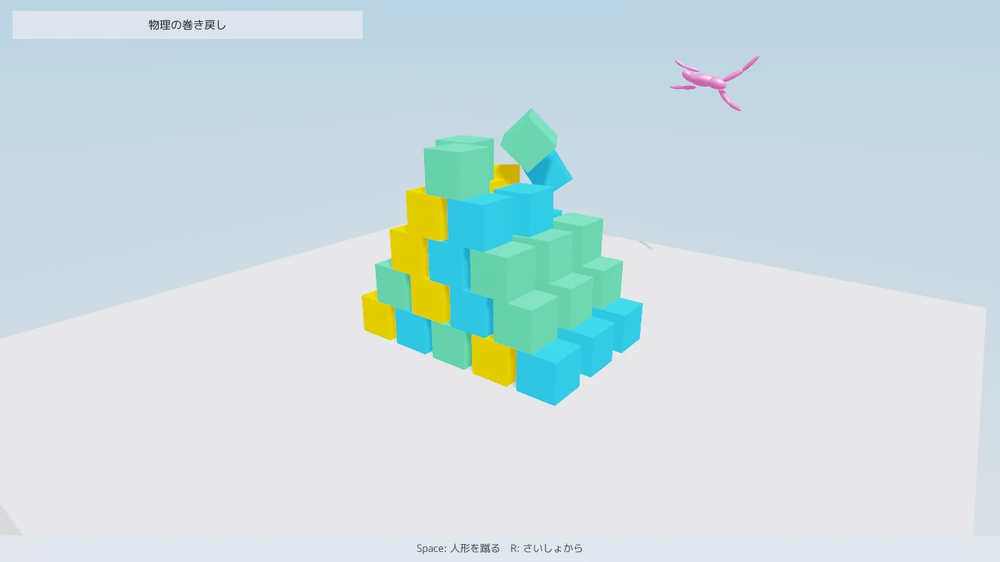
examples/physics_rewind）。積んだ箱に人形が落ち、蹴ると崩れる。45 個の箱を積んだピラミッドに、人形 (ラグドール) が落ちてきます。Space で人形を蹴り上げると箱が崩れます。物理は Jolt Physics で解き、その世界はゲームの struct の外にあります。保存と復元の窓口として預けると、巻き戻し、セーブ、ホットリロードのたびに struct と一緒に戻ります。--inspect rewind で開く窓から、崩れる前へ戻せます。
使う道具: JoltGameWorld / MITIRU_SIDE_STATE / makeHumanoidRagdollSettings / drawMeshRotationDeg
examples/physics_rewind/physics_rewind_dll.cpp。全 100 行。Jolt Physics を DLL に入れてビルドします。リポジトリでビルドすると mitiru_host.exe physics_rewind/physics_rewind.dll で起動します。GitHub ↗
// physics_rewind。「物理エンジンの世界ごと巻き戻す」章 // 実行すると: 積んだ箱の上に人形が落ちて崩れる。Space で人形を蹴る (--inspect rewind で崩れる前へ戻せる) // 関連 API: JoltGameWorld / MITIRU_SIDE_STATE / makeHumanoidRagdollSettings (状態の外に持つ物理の世界) #include <mitiru.hpp> #include <mitiru/module/SideState.hpp> #include <mitiru/physics/JoltGameWorld.hpp> #include <mitiru/physics/JoltHumanoidRagdoll.hpp> #include <Jolt/Physics/Collision/Shape/BoxShape.h> #include "../common/chapter_hud.hpp" // 章ラベル + 操作帯 (全章共通の書式) using namespace mitiru; using physics3d::JoltGameWorld; constexpr int kBoxes = 45; // 箱の数 (5 段のピラミッドを 3 列) constexpr int kLimbs = physics3d::kHumanoidPartCount; // 人形の部位の数 JPH::BodyID g_boxes[kBoxes]; JPH::Ragdoll* g_doll = nullptr; // 物理の世界を組み立てる。何度呼んでも同じ物を同じ順で置く (巻き戻しやホットリロードで作り直すため)。 void buildWorld(JoltGameWorld& world, const void* /*state*/) { world.addBody(JPH::BodyCreationSettings(new JPH::BoxShape(JPH::Vec3(8.0f, 0.5f, 8.0f)), JPH::RVec3(0, -0.5f, 0), JPH::Quat::sIdentity(), JPH::EMotionType::Static, JoltGameWorld::kStaticLayer), JPH::EActivation::DontActivate); int n = 0; for (int row = 0; row < 3; ++row) for (int level = 0; level < 5; ++level) for (int i = 0; i < 5 - level; ++i, ++n) { const JPH::RVec3 pos(-2.0f + i + 0.5f * level, 0.4f + 0.8f * level, -1.2f + 1.2f * row); JPH::BodyCreationSettings box(new JPH::BoxShape(JPH::Vec3::sReplicate(0.4f)), pos, JPH::Quat::sIdentity(), JPH::EMotionType::Dynamic, JoltGameWorld::kMovingLayer); box.mOverrideMassProperties = JPH::EOverrideMassProperties::CalculateInertia; box.mMassPropertiesOverride.mMass = 2.0f; // 人形がぶつかると崩れるくらい軽い箱 g_boxes[n] = world.addBody(box); } g_doll = world.addRagdoll(*physics3d::makeHumanoidRagdollSettings(JPH::RVec3(0.3f, 7.0f, 0.0f), JoltGameWorld::kMovingLayer), 1); } // 物理の世界はゲームの状態 (下の struct) の外にある。保存と復元の窓口として預けると、 // 巻き戻し・セーブ・ホットリロードのたびに、状態と一緒に戻してもらえる。 JoltGameWorld g_world(&buildWorld); MITIRU_SIDE_STATE("jolt", 1, g_world); // 描くための位置と向き。物理の世界から毎フレーム写す (描くときは物理の世界に触らない)。 struct Pose { sgc::Vec3f pos, rotDeg; }; Pose poseOf(const JPH::BodyID& id) { const JPH::RVec3 p = g_world.bodies().GetCenterOfMassPosition(id); return {{float(p.GetX()), float(p.GetY()), float(p.GetZ())}, physics3d::drawMeshRotationDeg(g_world.bodies().GetRotation(id))}; } struct PhysicsRewind { Pose boxes[kBoxes]{}; Pose limbs[kLimbs]{}; int kicks = 0; // 蹴った回数 void init() { g_world.reset(); } // さいしょから: 物理の世界も作り直す void update(Input in, Hud hud, float dt) { g_world.ensureBuilt(this); if (in.pressed(Key::R)) { hud.requestRestart(); } if (in.pressed(Key::Space)) // 胸を奥へ蹴り上げる { g_world.bodies().AddImpulse(g_doll->GetBodyID(1), JPH::Vec3(0.0f, 250.0f, -420.0f)); ++kicks; } g_world.step(dt); for (int i = 0; i < kBoxes; ++i) { boxes[i] = poseOf(g_boxes[i]); } for (int i = 0; i < kLimbs; ++i) { limbs[i] = poseOf(g_doll->GetBodyID(i)); } } void draw(Screen& s) const { s.clear(theme::kPaper); s.camera3D({7.0f, 5.5f, 9.0f}, {0.0f, 1.2f, 0.0f}, 50.0f); s.light3D({-0.5f, -0.9f, -0.4f}, hex(0xFFFBF2)); s.skybox3D(hex(0x63A5E8), hex(0xEAF3FB)); s.drawMesh("cube", {0.0f, -0.5f, 0.0f}, {16.0f, 1.0f, 16.0f}, {0, 0, 0}, hex(0xBFC8D4)); for (int i = 0; i < kBoxes; ++i) { const Color c = (i % 3 == 0) ? theme::kOrange : (i % 3 == 1) ? theme::kBlue : theme::kGreen; s.drawMesh("cube", boxes[i].pos, {0.8f, 0.8f, 0.8f}, boxes[i].rotDeg, c); } for (int i = 0; i < kLimbs; ++i) // 部位はカプセル。球を縦に伸ばして描く { const auto size = physics3d::humanoidPartSize(i); s.drawMesh("sphere", limbs[i].pos, {2 * size.radius, size.length, 2 * size.radius}, limbs[i].rotDeg, theme::kPink); } chapterTitle(s, "物理の巻き戻し"); chapterControls(s, "Space: 人形を蹴る R: さいしょから"); } }; MITIRU_REFLECT(PhysicsRewind, kicks); MITIRU_GAME(PhysicsRewind);